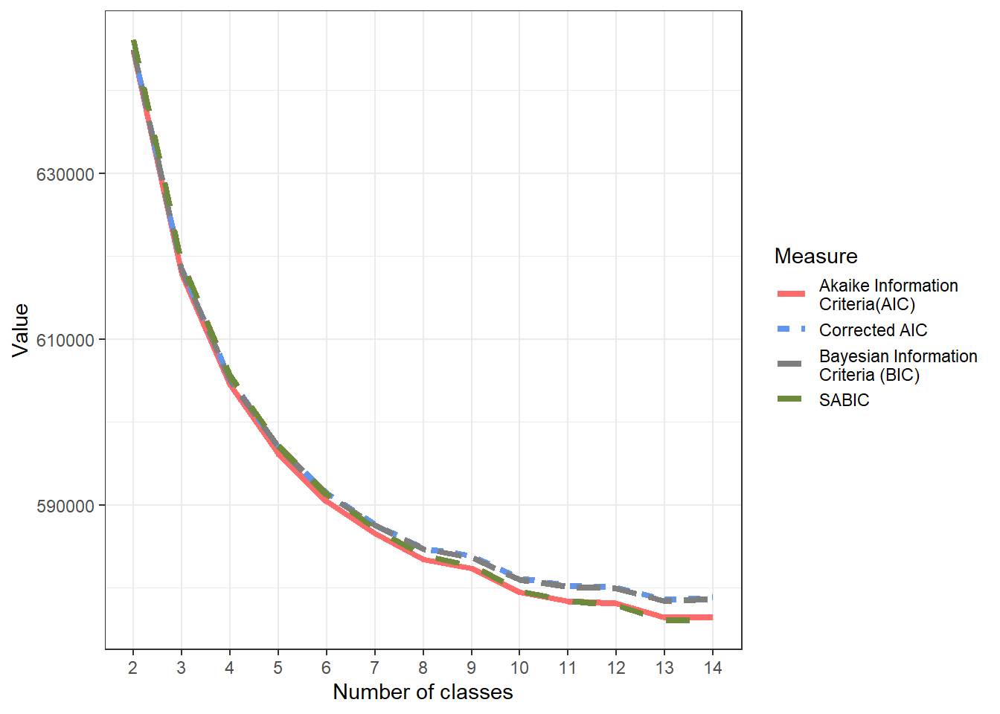
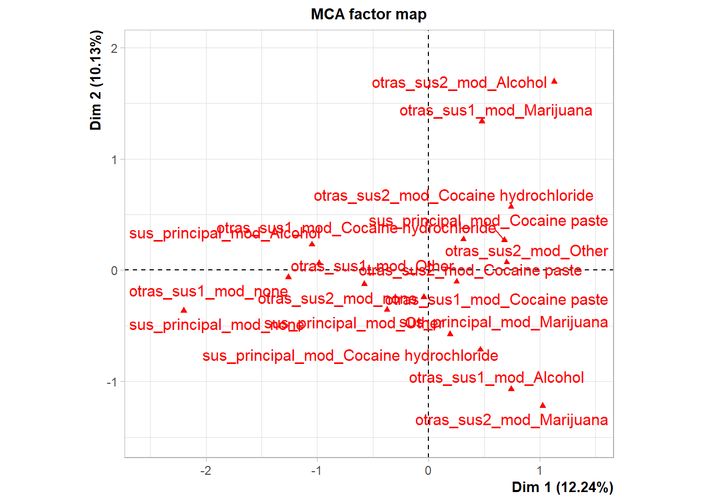
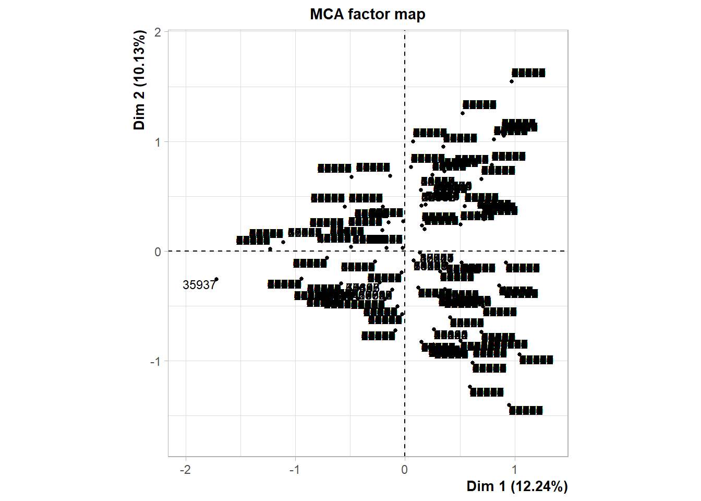
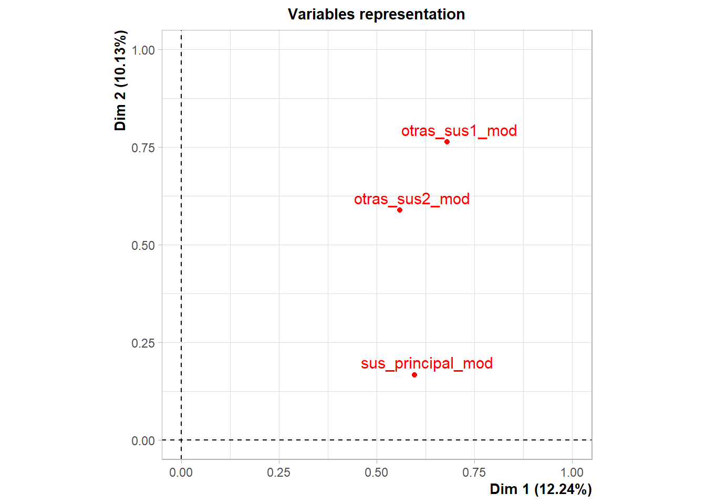
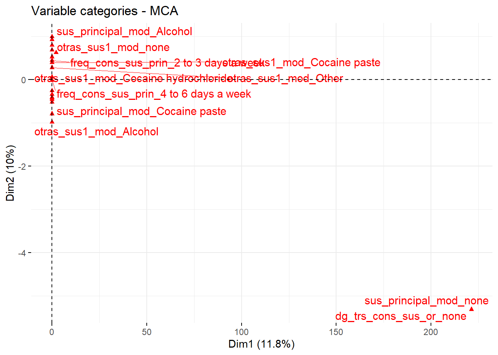
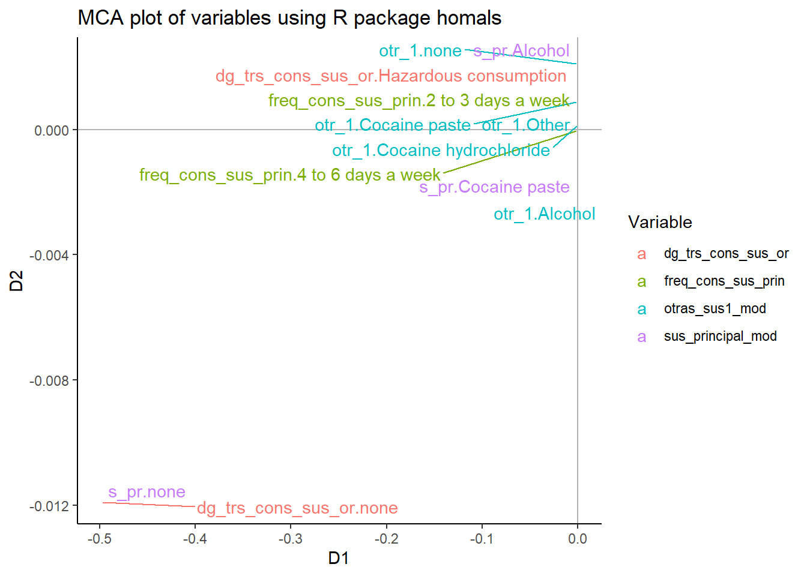
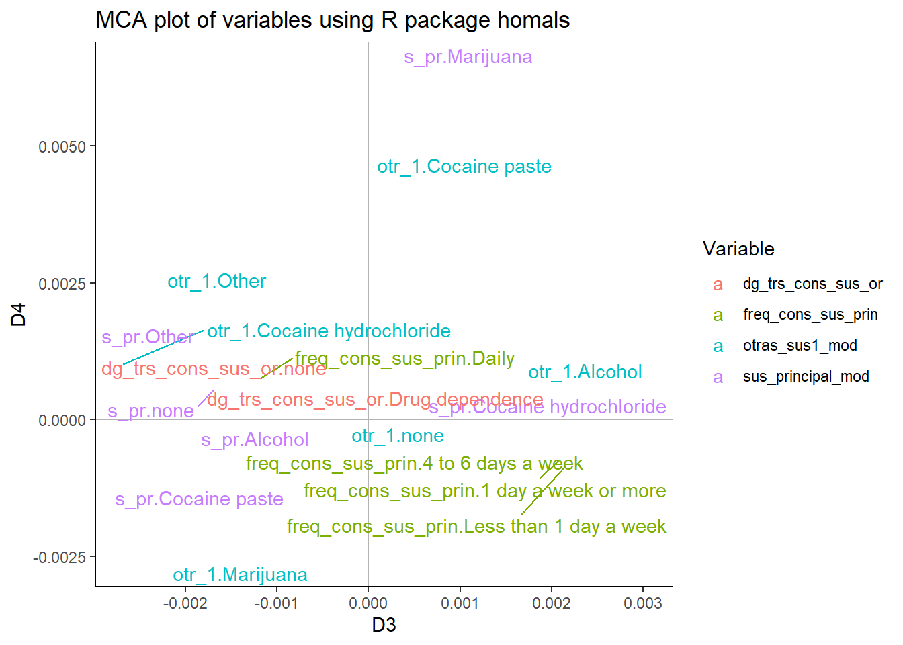

Data explore & construction
Explore and construct data, descriptives, several tests of patterns of polysubstance use, and imputation of missing variables
Code
rm(list = ls())
unlink("proposal_grant_23_24_files", recursive=T)
#fuentes:
#https://rpubs.com/georgy_makarov/897844
path<-paste0(getwd(),'/env')
#Sys.setenv(RETICULATE_PYTHON = "")
#Sys.setenv(RETICULATE_PYTHON = Sys.which("python"))
#reticulate::py_config()
#use_python(paste0(path,"/Scripts/python.exe"))
#Sys.setenv(LD_LIBRARY_PATH = paste0(path,"/Lib"))
#Sys.setenv(LD_LIBRARY_PATH_64 = paste0(path,"/Lib"))
#instalar paquetes de funcionalidades básicas para tener ubicaciones relativas y acceso a python (reticulate)
if(!require(reticulate)){install.packages("reticulate")}Loading required package: reticulateWarning: package 'reticulate' was built under R version 4.1.3Code
if(!require(rstudioapi)){install.packages("rstudioapi")}Loading required package: rstudioapiCode
invisible("Create env")
#https://stackoverflow.com/questions/54043607/how-to-set-pyenv-python-for-reticulate
#Directory H:/Mi unidad/PERSONAL ANDRES/UCH_salud_publica/asignaturas/env is not a Python virtualenv
#virtualenv_create(envname = path, packages = c("pip", "statsmodels", "matplotlib", "numpy", "pandas", "scipy"))
# "C:/Users/andre/anaconda3/python.exe" -m venv "H:/Mi unidad/PERSONAL ANDRES/UCH_salud_publica/asignaturas/9_Computacion_Estadistica/env"
#FUENTES:
#https://rstudio.github.io/reticulate/articles/versions.html
#Virtual environment functions are not supported on Windows (the use of conda environments is recommended on Windows).
invisible("Use environment")
#https://ugoproto.github.io/ugo_r_doc/pdf/reticulate.pdf
# tx <- readLines(paste0(path,"/pyvenv.cfg"))
# tx[[1]] <- paste0("home = ",gsub('/', '\\', paste0(path,"/Scripts/python.exe"), fixed=T))
# tx[[3]] <- "version = 3.8.0"
#writeLines(tx, con=paste0(path,"/pyvenv.cfg"))
#H:/Mi unidad/PERSONAL ANDRES/UCH_salud_publica/asignaturas/env/Scripts/python.exe"
#use_virtualenv(path)
#usar entorno virtual ya creado
#información sobre entorno virtual
#py_discover_config()
#conda_python(envname = "r-scrublet")
# FUENTES
#https://akrabat.com/creating-virtual-environments-with-pyenv/
#https://rstudio.github.io/reticulate/reference/install_python.html
#https://github.com/pyenv/pyenv/wiki#suggested-build-environment
#https://github.com/pyenv/pyenv
#https://stackoverflow.com/questions/56755156/reticulate-not-setting-python-path
#https://github.com/rstudio/reticulate/issues/291#issuecomment-437143751
#https://github.com/pyenv/pyenv
#https://github.com/pyenv-win/pyenv-win#installation
#https://stackoverflow.com/questions/52060867/how-to-use-pip-for-pyenv
#https://github.com/pyenv/pyenv/issues/2417Code
!pyenv install -l | findstr 3.8
!pip install --upgrade pyenv-win
!env PYTHON_CONFIGURE_OPTS="--enable-shared" pyenv install
!env PYTHON_CONFIGURE_OPTS="--enable-shared" pyenv install 3.7.5
!pyenv buildCode
#_#_#_#_#_#_#_#_#_#_#_#_#_#_#_#_#_#_#_#_#_#_#_#_#_#_#_#_#_#_#_#_#_#_#_#_#_#_#_#_
# `r format(Sys.time(),'%B %d, %Y')`
# Data import
#Load the data from Mariel Fiscalia Merge 4, created on 2023-05-26
#load("14.Rdata", data_mariel_fisc_merge4 <- new.env() )
load("data_acc_ser_23.RData")
# List all of the objects names in RData:
#ls(.GlobalEnv)
#ls(new_environment)
#rm(new_environment)
#_#_#_#_#_#_#_#_#_#_#_#_#_#_#_#_#_#_#_#_#_#_#_#_#_#_#_#_#_#_#_#_#_#_#_#_#_#_#_#_Packages
Explore and construct database
We checked and resolved the inconsistencies in male users receiving women-only treatments after imputation. We selected the variables of interest, compared the date births and ages at several events and corrected these values.
Once the standardization and correction of values and labels was complete, we joined the databases CONS_C1_df_dup_SEP_2020_22_d and Base_fiscalia_v9 into a single one. The master database was SENDAs treatments, and we only used records of POs database which had an age of offending equal or posterior to the age of admission to treatment. If there were no records of PO, the age of offense were replaced with the age at censorship (2019-11-13). However, we excluded Referrals, Deaths and Censored cases because of missing data.
Code
# #_#_#_#_#_#_#_#_#_#_#_#_#_#_#_#_#_#_#_#_#_#_#_#_
# invisible("La edad está bien definida en términos relativos (entre ingresos), pero no absolutos (manualmente no llego a la misma edad calculando manualmente ), tiene una diferencia de 0,5 años")
# Age at admission for each treatment: if the date of birth (PO) is not empty and the date of birth of senda is different of date of birth, for each age at admission (for different admissions), we compute the difference of the date of admission (at each admission) with the date of birth (PO) and divided by years; if the date of birth (PO) is not empty but SENDA is empty, we compute the difference of the date of admission (at each admission) with the date of birth (PO) and divided by years; else will be taken from the date at admission from the date of birth of SENDA.
#The same for age at discharge
# #_#_#_#_#_#_#_#_#_#_#_#_#_#_#_#_#_#_#_#_#_#_#_#_
#WHERE rn_id = 1
invisible("This chunk is modified from Fiscalia_merge4")
# #_#_#_#_#_#_#_#_#_#_#_#_#_#_#_#_#_#_#_#_#_#_#_#_
#joined with edad_al_ing instead of edad_al_egres
Base_fiscalia_v10_grant_23_24<-
sqldf::sqldf("SELECT *
FROM CONS_C1_df_dup_SEP_2020_22_d AS x
LEFT JOIN (SELECT *
FROM Base_fiscalia_v9
) AS y
ON x.hash_key == y.id AND
x.edad_al_ing_1 <= y.age_offending_imp AND x.dup = 1") #2022-11-25 added dup
#183307
paste0("Observations of SENDA database: ",nrow(CONS_C1_df_dup_SEP_2020_22_d))#109756)[1] "Observations of SENDA database: 85048"Code
paste0("Observations of PO database: ", nrow(Base_fiscalia_v10_grant_23_24))#204,115 nrow[1] "Observations of PO database: 138349"Code
# #_#_#_#_#_#_#_#_#_#_#_#_#_#_#_#_#_#_#_#_#_#_#_#_
#clean names, select the first event (whatever the crime comitted, we selected the first)
Base_fiscalia_v11_grant_23_24<-
Base_fiscalia_v10_grant_23_24 %>%
#discrepancies in names of variables
janitor::clean_names() %>% #janitor::tabyl(!is.na(dob_imp_num))
#previously recoded,
dplyr::select(-sex_2, -dateofbirth_imp, -country, -victim, -id_victim, -crime_code_c , -reg_c, -end_type_2c, -cod_comunadelito, -cod_lugarocurrencia, -sex_imp, -region_delito, -filter, -id)%>%
plyr::rename(c("dateofbirth_imp_2"="dateofbirth_imp")) %>%
dplyr::ungroup() %>%
#_#_#_#_#_#_#_#_
#generates errors with survival setting
#make censorship date of age of comission
purrr::when(dplyr::filter(., is.na(fech_nac_rec)) %>% nrow() >7 ~ stop("Missing values in the age"), ~.) %>%
dplyr::mutate(age_offending_imp= dplyr::case_when(is.na(age_offending_imp)~
lubridate::time_length(lubridate::interval(fech_nac_rec, as.Date("2019-11-13")),unit="years"), T~ age_offending_imp)) %>%
dplyr::group_by(hash_key) %>%
#KEY STEP: select the first and with ties (more than one) --> 2023-04-14, was discussed, but did not had consequences (See https://docs.google.com/document/d/1UvtQFM3ToazUyA6G9C7pBYMgk98n31zQSY2-M9d1nEo/edit#)
dplyr::slice_min(age_offending_imp, n = 1, with_ties = F) %>%
dplyr::ungroup() %>%
purrr::when(nrow(dplyr::filter(.,age_offending_imp-edad_al_ing_1<0))>0 ~ stop("Cases with negative time after admission to commission of crime"), ~.) %>%
dplyr::mutate(motivodeegreso_mod_imp_rec= dplyr::case_when(grepl("Therapeutic",motivodeegreso_mod_imp)~ "Treatment completion", grepl("Early|Late|Administrative", motivodeegreso_mod_imp) & (fech_egres_num_1-fech_ing_num_1 <90) ~ "Treatment non-completion", grepl("Early|Late|Administrative", motivodeegreso_mod_imp) & (fech_egres_num_1-fech_ing_num_1 >=90) ~ "Treatment non-completion", grepl("Referral|Death|Ongoing", motivodeegreso_mod_imp)~ "Censored", T~NA_character_))
warning(paste0("There are ",nrow(dplyr::group_by(Base_fiscalia_v11_grant_23_24, hash_key) %>% dplyr::mutate(rn_hash=row_number()) %>% dplyr::filter(rn_hash>1))," records with more than one offense commited at the youngest age (p= ",dplyr::group_by(Base_fiscalia_v11_grant_23_24, hash_key) %>% dplyr::mutate(rn_hash=row_number()) %>% dplyr::filter(rn_hash>1) %>% dplyr::distinct(hash_key) %>% nrow(),")"))Warning: There are 0 records with more than one offense commited at the youngest age (p= 0)
Code
warning(paste0("There are ",nrow(dplyr::filter(Base_fiscalia_v11_grant_23_24,is.na(fech_nac_rec)))," missing records in date of birth (were ",nrow(dplyr::filter(janitor::clean_names(Base_fiscalia_v10_grant_23_24),is.na(fech_nac_rec)))," in step v10)"))Warning: There are 7 missing records in date of birth (were 7 in step v10)
Code
warning(paste0("There are ", scales::percent(as.numeric(table(is.na(Base_fiscalia_v11_grant_23_24$crime_code_group_rec))[[2]])/nrow(Base_fiscalia_v11_grant_23_24)), " records with events of contacts with justice"))Warning: There are 67% records with events of contacts with justice
Code
# #_#_#_#_#_#_#_#_#_#_#_#_#_#_#_#_#_#_#_#_#_#_#_#_
warning("2023-07-17, omitted in this step (filtering for censored, ongoing treatments, etc.),because we are measuring from admission. Restricting the database for that happened later would be a selection bias. Instead, I replaced the value 'Referral and Ongoing with 'Non-completion' status'")Warning: 2023-07-17, omitted in this step (filtering for censored, ongoing treatments, etc.),because we are measuring from admission. Restricting the database for that happened later would be a selection bias. Instead, I replaced the value ‘Referral and Ongoing with ’Non-completion’ status’
Code
# 2022-11-01, filter
# Base_fiscalia_v11_grant_23_24<-
# dplyr::filter(Base_fiscalia_v11_grant_23_24, !grepl("Referral|Death|Censored|Ongoing",motivodeegreso_mod_imp))
Base_fiscalia_v11_grant_23_24$motivodeegreso_mod_imp_rec[grepl("Censored",Base_fiscalia_v11_grant_23_24$motivodeegreso_mod_imp_rec)]<- "Treatment non-completion"
# #_#_#_#_#_#_#_#_#_#_#_#_#_#_#_#_#_#_#_#_#_#_#_#_
# #_#_#_#_#_#_#_#_#_#_#_#_#_#_#_#_#_#_#_#_#_#_#_#_
#2023-07_17,
if(Base_fiscalia_v11_grant_23_24 %>%
group_by(hash_key) %>%
count() %>%
dplyr::filter(n>1) %>% nrow()){warning("Patients with more than one record")}Code
#2023-07_17, case that have more than one row
# Base_fiscalia_v11_grant_23_24 %>% dplyr::filter(hash_key=="001b0ff241cd0d95828b86b4bdab8c19") %>% dplyr::select(hash_key, fech_nac, fech_nac_rec, motivodeegreso_mod_imp_rec, age_tr_comp_imp, edad_al_ing_1, edad_al_egres_1, edad_comision, fec_comision_simple, caseid, crime_code_group_rec_prof, end_type_2, gls_proctermino, s_sentence_1, s_restorative_3, s_kindprison_1) %>% View()
# #_#_#_#_#_#_#_#_#_#_#_#_#_#_#_#_#_#_#_#_#_#_#_#_
# #_#_#_#_#_#_#_#_#_#_#_#_#_#_#_#_#_#_#_#_#_#_#_#_
invisible("Ver por qué los valores negativos-R: por que entre la admisión y terminar el tratamiento hay casos que registraron un delito")
Base_fiscalia_v11_grant_23_24 %>%
dplyr::select(hash_key, fech_nac, fech_nac_rec, motivodeegreso_mod_imp_rec, age_offending_imp, edad_al_ing_1, edad_al_egres_1, edad_comision, fec_comision_simple, caseid, crime_code_group_rec_prof, end_type_2, gls_proctermino, s_sentence_1, s_restorative_3, s_kindprison_1) %>%
dplyr::filter(hash_key=="1951c4d080cda8b68759d638a840d82f") %>%
knitr::kable("markdown", caption="Example of database")| hash_key | fech_nac | fech_nac_rec | motivodeegreso_mod_imp_rec | age_offending_imp | edad_al_ing_1 | edad_al_egres_1 | edad_comision | fec_comision_simple | caseid | crime_code_group_rec_prof | end_type_2 | gls_proctermino | s_sentence_1 | s_restorative_3 | s_kindprison_1 |
|---|---|---|---|---|---|---|---|---|---|---|---|---|---|---|---|
| 1951c4d080cda8b68759d638a840d82f | 1985-12-14 | 1986-12-11 | Treatment non-completion | 27.61092 | 25.25956 | 25.56831 | 27.60301 | 2014-07-22 | 1400700113-5 | Other | Sentencia definitiva condenatoria | ABREVIADO | SI | Remisión Condicional | Minor Prison medium grade |
Code
#b24908c527faa1b7bd5a267d5dcabd45
#23d88c2b8c6da2d8abf3f88b7ce8a4c0 anomalus case
#_#_#_#_#_#_#_#_#_#_#_#_#_#_#_
#_#_#_#_#_#_#_#_#_#_#_#_#_#_#_#_#_#_#_#_#_#_#_#_#_#_#_#_#_#_
# FROM PATIENTS (p=85,048), WE JOINED THE PO DATA (n= 174,961, p=49,970) by HASHs and where offense date is equal or lower to the age at discharge from treatment, and restricted the first treatment from SENDA in v10
#v11: erased missing cases in date of birth; thus, missing age at discharge, filtered the first offense by each HASH (going from n= 132,530 to n=87,770) (n=87,770 p= 85,041)
#length(unique(Base_fiscalia_v11$hash_key))
#v12: discarded patients where the first treatment corresponded to ongoing treatments (p & n=5,521), external referral (p & n=8,948) == 14,469 users were discarded.We did not drop censored treatments (never ended), referrals and deaths, so we got 85,048 users (n= 85,048). Next, we joined the pre-treatment criminality records. These algorithms only capture the presence/absence of offenses by type (not the count of offenses).
Code
#Create the variables of pretreatment criminality
Base_fiscalia_v10b_grant_23_24<-
sqldf::sqldf("SELECT *
FROM CONS_C1_df_dup_SEP_2020_22_d AS x
LEFT JOIN (SELECT *
FROM Base_fiscalia_v9
) AS y
ON x.hash_key == y.id AND
x.edad_al_ing_1 > y.age_offending_imp AND x.dup = 1") #2022-11-25 added dup // #changed the direction to past events, where age at discharge is greater than the age of commission
#_#_#_#_#_#_#_
#_#_#_#_#_#_#_
#_#_#_#_#_#_#_
# Count pre-treatment offenses
Base_fiscalia_v11b_grant_23_24<-
Base_fiscalia_v10b_grant_23_24 %>%
#discrepancies in names of variables
janitor::clean_names() %>% #janitor::tabyl(!is.na(dob_imp_num))
#previously recoded,
dplyr::select(-dateofbirth_imp, -country, -victim, -id_victim, -crime_code_c , -reg_c, -end_type_2c, -cod_comunadelito, -cod_lugarocurrencia, -sex_imp, -region_delito, -filter, -id)%>%
plyr::rename(c("dateofbirth_imp_2"="dateofbirth_imp")) %>%
dplyr::ungroup() %>%
#selected the first row with distinct information regarding patient ID, case ID, crime code.
dplyr::group_by(hash_key, caseid, crime_code_group_rec_prof) %>%
dplyr::slice(1) %>%
dplyr::ungroup() %>%
dplyr::group_by(hash_key) %>%
summarise(n_off_acq= ifelse(sum(crime_code_group_rec_prof=="Acquisitive", na.rm=T)>0, 1,0), n_off_vio= ifelse(sum(crime_code_group_rec_prof=="Violent", na.rm=T)>0, 1,0), n_off_sud= ifelse(sum(crime_code_group_rec_prof== "Substance-related", na.rm=T)>0, 1,0), n_off_oth= ifelse(sum(crime_code_group_rec_prof== "Other", na.rm=T)>0, 1,0)) %>%
dplyr::ungroup() %>%
dplyr::mutate(n_prev_off= rowSums(select(., starts_with("n_"))))
warning(paste0("Users in the database of previous crimes: ",format(length(unique(Base_fiscalia_v11b_grant_23_24$hash_key)), big.mark=",")))Warning: Users in the database of previous crimes: 85,048
Code
warning(paste0("Users in the merged database (after filtering for observations coded as referrals, deaths, censored at baseline treatment or with ongoing treatments) : ",format(length(unique(Base_fiscalia_v11_grant_23_24$hash_key)), big.mark=",")))Warning: Users in the merged database (after filtering for observations coded as referrals, deaths, censored at baseline treatment or with ongoing treatments) : 85,048
Code
#_#_#_#_#_#_#_
#_#_#_#_#_#_#_
#_#_#_#_#_#_#_
# Join pre-treatment criminality
# Pre-treatment Criminality
Base_fiscalia_v13_grant_23_24<-
Base_fiscalia_v11_grant_23_24 %>%
#_#_#_#_#_#_#_#_#_#_#_#_#_#_#_#_#_#_#_#_#_#_#_#_
# 2023-07-17: we made it in the previous chunk
#_#_#_#_#_#_#_#_#_#_#_#_#_#_#_#_#_#_#_#_#_#_#_#_
# dplyr::group_by(hash_key) %>%
# #select the first and without ties (only one)
# dplyr::slice_min(age_offending_imp, n = 1, with_ties = F) %>%
# dplyr::ungroup() %>%
#_#_#_#_#_#_#_#_#_#_#_#_#_#_#_#_#_#_#_#_#_#_#_#_
# Join database with the pre-treatment criminality counts
dplyr::inner_join(Base_fiscalia_v11b_grant_23_24, by="hash_key") %>%
dplyr::mutate(policonsumo= ifelse(!is.na(otras_sus1_mod),1,0)) %>%
# NO SE SI SIRVE, 2023-07-17 lo saqué
# dplyr::mutate(cut_fec_nac=cut2(fech_nac_rec, cuts=as.Date(attr(dlookr::binning(as.numeric(fech_nac_rec)),"breaks"))),cut_com_del=cut2(fec_comision_simple, cuts=as.Date(attr(dlookr::binning(as.numeric(fec_comision_simple)),"breaks")))) %>%
# dplyr::mutate(tr_modality=dplyr::case_when(grepl("PR", as.character(tipo_de_plan_2_1))~ "Residential", grepl("PAI|PAB", as.character(tipo_de_plan_2_1))~ "Ambulatory", T~ NA_character_))%>%
data.table::as.data.table()%>%
purrr::when(nrow(.)>nrow(Base_fiscalia_v11_grant_23_24)~ stop("More cases in the new database"), ~.)
#_#_#_#_#_#_#_#_#_#_#_#_#_#_#_#_#_#_#_#_#_#_#_#_
warning(paste0("Number of cases that are different by at least 0,02 years between 'edad_al_egres_imp' & 'edad_al_egres_1'= ", nrow(cbind.data.frame(round(Base_fiscalia_v13_grant_23_24$edad_al_ing_1,4), round(Base_fiscalia_v13_grant_23_24$edad_al_ing_fmt,4)) %>% dplyr::filter(abs(.[[1]]-.[[2]])>0.02))," probably due to the discrepancies in getting the differences of dates"))Warning: Number of cases that are different by at least 0,02 years between ‘edad_al_egres_imp’ & ‘edad_al_egres_1’= 2751 probably due to the discrepancies in getting the differences of dates
Code
#_#_#_#_#_#_#_#_#_#_#_#_#_#_#_#_#_#_#_#_#_#_#_#_
#_#_#_#_#_#_#_#_#_#_#_#_#_#_#_#_#_#_#_#_#_#_#_#_#_#_#_#_#_#_#_#_#_#_#_#_#_#_#_#_#_#_#_#_#_#_#_#_
#_#_#_#_#_#_#_#_#_#_#_#_#_#_#_#_#_#_#_#_#_#_#_#_
invisible("Recode in 0/1 for more than one treatment, numeric")
Base_fiscalia_v13_grant_23_24$dup_filt<- ifelse(Base_fiscalia_v13_grant_23_24$duplicates_filtered>1,">1 treatment","only one treatment")
Base_fiscalia_v13_grant_23_24$dup_filt_num<- ifelse(Base_fiscalia_v13_grant_23_24$duplicates_filtered>1,1,0)
invisible("offender after admission (event), numeric")
Base_fiscalia_v13_grant_23_24$offense_after_adm<- ifelse(!is.na(Base_fiscalia_v13_grant_23_24$offender_d),"offender after adm","no offense after admission")
Base_fiscalia_v13_grant_23_24$off_aft_adm<- ifelse(!is.na(Base_fiscalia_v13_grant_23_24$offender_d), 1,0)
invisible("treatment outcome status, numeric")
Base_fiscalia_v13_grant_23_24$mot_egres_mod_imp_rec2<- dplyr::case_when(Base_fiscalia_v13_grant_23_24$motivodeegreso_mod_imp_rec== "Treatment completion"~ "Tr.Completion", grepl("non", Base_fiscalia_v13_grant_23_24$motivodeegreso_mod_imp_rec)~ "Non-completion", T~"Censored")
Base_fiscalia_v13_grant_23_24$mot_egres_mod_imp_rec_num<- dplyr::case_when(Base_fiscalia_v13_grant_23_24$motivodeegreso_mod_imp_rec=="Treatment completion"~1, grepl("non",Base_fiscalia_v13_grant_23_24$motivodeegreso_mod_imp_rec)~0, T~0)
Base_fiscalia_v13_grant_23_24$mot_egres_mod_imp_rec2<- dplyr::case_when(Base_fiscalia_v13_grant_23_24$motivodeegreso_mod_imp_rec=="Treatment completion"~"Tr.Completion", grepl("non", Base_fiscalia_v13_grant_23_24$motivodeegreso_mod_imp_rec)~ "Non-completion", T~"Censored")
invisible("treatment setting, binary, numeric")
Base_fiscalia_v13_grant_23_24$tr_mod <- ifelse(Base_fiscalia_v13_grant_23_24$tr_modality=="Residential",1,0)Post treatment criminality
Selected offenses after discharge/dropout. We counted distinct patient ID, crime code and age of commission of the offense.
Code
Base_fiscalia_v10c_grant_23_24<-
sqldf::sqldf("SELECT *
FROM CONS_C1_df_dup_SEP_2020_22_d AS x
LEFT JOIN (SELECT *
FROM Base_fiscalia_v9
) AS y
ON x.hash_key == y.id AND
x.edad_al_egres_1 < y.age_offending_imp AND x.dup = 1")
#_#_#_#_#_#_#_
#_#_#_#_#_#_#_
#_#_#_#_#_#_#_
# 2023-08-15
# Count post-treatment offenses
Base_fiscalia_v11c_grant_23_24<-
Base_fiscalia_v10c_grant_23_24 %>%
#discrepancies in names of variables
janitor::clean_names() %>% #janitor::tabyl(!is.na(dob_imp_num))
#previously recoded,
dplyr::select(-dateofbirth_imp, -country, -victim, -id_victim, -reg_c, -end_type_2c, -cod_comunadelito, -cod_lugarocurrencia, -sex_imp, -region_delito, -filter, -id)%>%
plyr::rename(c("dateofbirth_imp_2"="dateofbirth_imp")) %>% #2023-08-15, omitted -crime_code_c
dplyr::ungroup() %>%
#2023-08-15: added the age of commission of the crime, we omitted caseid. Then i backed down, because it was a different offense
dplyr::group_by(hash_key, crime_code_group_rec_prof, caseid, edad_comision) %>%
dplyr::slice(1) %>%
dplyr::ungroup() %>%
# 2023-08-15: test
# dplyr::filter(hash_key=="20f6876567ebaf145aed0b1913f05337") %>% dplyr::select(hash_key, ano_bd_first, fech_nac, fech_ing, fech_egres_imp, motivodeegreso_mod_imp, fec_comision_simple, edad_comision, edad_al_egres_1, region_delito_rec, crime_code_c, crime_code_group_rec_prof, end_type, end_type_2 ) %>% rio::export("_particular_case_with_post_off2.xlsx")
# 2023-08-15: test with only violent crimes
#dplyr::filter(hash_key=="4e92f1e4b4fec715adb252aea4af2579") %>% dplyr::select(hash_key, ano_bd_first, fech_nac, fech_ing, fech_egres_imp, motivodeegreso_mod_imp, fec_comision_simple, edad_comision, edad_al_egres_1, region_delito_rec, crime_code_c, crime_code_group_rec_prof, end_type, end_type_2 ) %>% View() %>% rio::export("_particular_case_with_post_off_violent.xlsx")
#selected the first row with distinct information regarding patient ID, crime code.
dplyr::group_by(hash_key) %>%
summarise(n_post_off_acq= sum(crime_code_group_rec_prof=="Acquisitive", na.rm=T), n_post_off_vio= sum(crime_code_group_rec_prof=="Violent", na.rm=T), n_post_off_sud= sum(crime_code_group_rec_prof== "Substance-related", na.rm=T), n_post_off_oth= sum(crime_code_group_rec_prof== "Other", na.rm=T)) %>%
dplyr::ungroup() %>%
dplyr::mutate(n_post_off= rowSums(select(., starts_with("n_post_"))))
warning(paste0("Users in the database of previous crimes: ",format(length(unique(Base_fiscalia_v11c_grant_23_24$hash_key)), big.mark=",")))Warning: Users in the database of previous crimes: 85,048
Code
#2023-08-15 - count
#arrange(Base_fiscalia_v11c_grant_23_24,desc(n_post_off))
#_#_#_#_#_#_#_
#_#_#_#_#_#_#_
#_#_#_#_#_#_#_
# Join post-treatment criminality
# Post-treatment Criminality
Base_fiscalia_v13c_grant_23_24<-
Base_fiscalia_v13_grant_23_24 %>%
#_#_#_#_#_#_#_#_#_#_#_#_#_#_#_#_#_#_#_#_#_#_#_#_
# 2023-07-17: we made it in the previous chunk
#_#_#_#_#_#_#_#_#_#_#_#_#_#_#_#_#_#_#_#_#_#_#_#_
# dplyr::group_by(hash_key) %>%
# #select the first and without ties (only one)
# dplyr::slice_min(age_offending_imp, n = 1, with_ties = F) %>%
# dplyr::ungroup() %>%
#_#_#_#_#_#_#_#_#_#_#_#_#_#_#_#_#_#_#_#_#_#_#_#_
# Join database with the pre-treatment criminality counts
dplyr::inner_join(Base_fiscalia_v11c_grant_23_24, by="hash_key") %>%
# NO SE SI SIRVE, 2023-07-17 lo saqué
# dplyr::mutate(cut_fec_nac=cut2(fech_nac_rec, cuts=as.Date(attr(dlookr::binning(as.numeric(fech_nac_rec)),"breaks"))),cut_com_del=cut2(fec_comision_simple, cuts=as.Date(attr(dlookr::binning(as.numeric(fec_comision_simple)),"breaks")))) %>%
# dplyr::mutate(tr_modality=dplyr::case_when(grepl("PR", as.character(tipo_de_plan_2_1))~ "Residential", grepl("PAI|PAB", as.character(tipo_de_plan_2_1))~ "Ambulatory", T~ NA_character_))%>%
data.table::as.data.table()%>%
purrr::when(nrow(.)>nrow(Base_fiscalia_v13_grant_23_24)~ stop("More cases in the new database"), ~.) Discard deaths
In the analysis, a critical step involved processing the treatment database to extract only relevant data while ignoring the entries of individuals who passed away.
Loaded the treatment data from
2_ndp_2023_07_05_20_00_00.RData(data of SENDA Treatments retrieved in 2023), and extracted and cleaned the date of discharge column (fecha_egreso_de_tratamiento) and the reason for administrative discharge (motivo_de_egreso_alta_administrativa).Renamed and formatted the columns for ease of understanding and analysis using
janitor::clean_names.Converted the date of discharge into a numerical value using unclass.
Identified dates that failed parsing and stored them in the parsing_failures data frame. This is a precaution to ensure all date values are consistent and no incorrect dates are processed further.
The data had multiple date formats. They were converted to a consistent format using a series of conditional operations. Errors in the dates, such as 307203, 01707/2010, 30520011, and 30/08/20011, were manually corrected.
Entries with “Fallecimiento” (death) as the reason for administrative discharge were extracted and stored in
cause_of_adm_discharge_ndp_23_2_filt.The core objective was to ensure that there were no inconsistencies in the data, especially concerning deceased individuals.
Checks were made to: Ensure no person was admitted to treatment after their recorded death date; Ensure no person was discharged from treatment after their recorded death date; Ensure no person committed an offense after their recorded death date; If any of these inconsistencies were found, an error message would be triggered. This acted as a fail-safe to avoid the propagation of incorrect data or conclusions.
Code
load("2_ndp_2023_07_05_20_00_00.RData", ndp_2023_step2 <- new.env() )
cause_of_adm_discharge_ndp_23 <- ndp_2023_step2$CONS_C1_2010_19[,c("hash_key","fecha_egreso_de_tratamiento", "motivo_de_egreso_alta_administrativa")] %>% dplyr::mutate(fecha_egreso_de_tratamiento2= readr::parse_date(fecha_egreso_de_tratamiento,"%d/%m/%Y")) %>% janitor::clean_names() %>%
dplyr::mutate(fech_egres_num= unclass(fecha_egreso_de_tratamiento)) %>%
data.table::as.data.table()Warning: 80 parsing failures. row col expected actual 194 – date like %d/%m/%Y 15
1294 – date like %d/%m/%Y 30/12/09 1650 – date like %d/%m/%Y 20/01/10 1859 – date like %d/%m/%Y 23/03/09 1934 – date like %d/%m/%Y 13/05/09 …. … ……………… …….. See problems(…) for more details.
Code
parsing_failures <- dplyr::mutate(ndp_2023_step2$CONS_C1_2010_19[,c("hash_key","fecha_egreso_de_tratamiento")], fecha_egreso_de_tratamiento2= readr::parse_date(fecha_egreso_de_tratamiento,"%d/%m/%Y")) %>%
dplyr::filter(is.na(fecha_egreso_de_tratamiento2) & !is.na(fecha_egreso_de_tratamiento))Warning: 80 parsing failures. row col expected actual 194 – date like %d/%m/%Y 15
1294 – date like %d/%m/%Y 30/12/09 1650 – date like %d/%m/%Y 20/01/10 1859 – date like %d/%m/%Y 23/03/09 1934 – date like %d/%m/%Y 13/05/09 …. … ……………… …….. See problems(…) for more details.
Code
#_#_#_#_#_#_#_#_#_#_#_#_#_#_#_#_#_#_#_#_#_#_#_#_#_
#delete environment of NDP 2023 Step 2
rm(ndp_2023_step2)
cause_of_adm_discharge_ndp_23_2<-
cause_of_adm_discharge_ndp_23 %>%
dplyr::mutate(fecha_egreso_de_tratamiento3=as.character(fecha_egreso_de_tratamiento)) %>%
dplyr::mutate(fecha_egreso_de_tratamiento3=
dplyr::case_when(
#1. format %d/%m/%y in minusc y
fecha_egreso_de_tratamiento3 %in% c("30/12/09", "20/01/10", "23/03/09", "13/05/09", "14/04/09", "15/09/09", "02/06/09", "09/06/09", "01/10/09", "09/03/09", "01/06/10", "03/04/10", "01/10/10", "14/01/11", "04/08/11", "08/07/13") & is.na(fecha_egreso_de_tratamiento2) ~ as.character(readr::parse_date(fecha_egreso_de_tratamiento3,"%d/%m/%y")),
#2. format %d/%m/%y in minusc y without leading zeros
fecha_egreso_de_tratamiento3 %in% c("4102010", "3052011", "4102010", "13012011", "31012011", "3052011", "13012011", "13082013", "17072013", "12082013", "2082013", "1072013", "31072013", "17062013", "27072013", "25072013", "14072013", "2072013", "2082013", "7082013", "31072013", "27062013", "16082013", "9072013", "2082013", "20082013", "16082013", "22082013") & nchar(fecha_egreso_de_tratamiento3) <= 8 & is.na(fecha_egreso_de_tratamiento2) ~ as.character(readr::parse_date(sprintf("%08d", readr::parse_integer(fecha_egreso_de_tratamiento3)),"%d%m%Y")),
#3. format in "%d-%m-%Y"
fecha_egreso_de_tratamiento3 %in% c("01-02-2011", "06-09-2011", "27-11-2012", "01-03-2013")& is.na(fecha_egreso_de_tratamiento2) ~ as.character(readr::parse_date(fecha_egreso_de_tratamiento3,"%d-%m-%Y")),
#4. format "%d/%m/%y"
fecha_egreso_de_tratamiento3 %in% c("10/6/11", "20/6/11", "10/6/11", "10/6/11", "20/6/11", "10/6/11", "10/7/11", "31/7/11", "12/6/11", "1/6/11", "5/6/11", "4/7/11", "31/7/11", "7/7/11", "2/8/11")& is.na(fecha_egreso_de_tratamiento2) ~ as.character(readr::parse_date(fecha_egreso_de_tratamiento3,"%d/%m/%y")),
#5. format "%d/%m/%y"
fecha_egreso_de_tratamiento3 %in% c("2013/04/02")& is.na(fecha_egreso_de_tratamiento2) ~ as.character(readr::parse_date(fecha_egreso_de_tratamiento3,"%Y/%m/%d")),
#Others: keep as character fecha_egreso_de_tratamiento2
T~ as.character(fecha_egreso_de_tratamiento2))) #%>% Warning: 153371 parsing failures. row col expected actual 1 – date like %d/%m/%y 01/03/2010 2 – date like %d/%m/%y 01/05/2010 3 – date like %d/%m/%y 13/04/2010 4 – date like %d/%m/%y 21/01/2010 5 – date like %d/%m/%y 15/04/2011 … … ……………… ………. See problems(…) for more details.
Warning: 153364 parsing failures. row col expected actual 1 – no trailing characters 01/03/2010 2 – no trailing characters 01/05/2010 3 – no trailing characters 13/04/2010 4 – no trailing characters 21/01/2010 5 – no trailing characters 15/04/2011 … … …………………. ………. See problems(…) for more details.
Warning: 10 parsing failures. row col expected actual 194 – valid date 00000015 8239 – valid date 00000015 9042 – valid date 00000005 9043 – valid date 00000005 9353 – valid date 00000025 …. … ………. …….. See problems(…) for more details.
Warning: 153398 parsing failures. row col expected actual 1 – date like %d-%m-%Y 01/03/2010 2 – date like %d-%m-%Y 01/05/2010 3 – date like %d-%m-%Y 13/04/2010 4 – date like %d-%m-%Y 21/01/2010 5 – date like %d-%m-%Y 15/04/2011 … … ……………… ………. See problems(…) for more details.
Warning: 153371 parsing failures. row col expected actual 1 – date like %d/%m/%y 01/03/2010 2 – date like %d/%m/%y 01/05/2010 3 – date like %d/%m/%y 13/04/2010 4 – date like %d/%m/%y 21/01/2010 5 – date like %d/%m/%y 15/04/2011 … … ……………… ………. See problems(…) for more details.
Warning: 153402 parsing failures. row col expected actual 1 – date like %Y/%m/%d 01/03/2010 2 – date like %Y/%m/%d 01/05/2010 3 – date like %Y/%m/%d 13/04/2010 4 – date like %Y/%m/%d 21/01/2010 5 – date like %Y/%m/%d 15/04/2011 … … ……………… ………. See problems(…) for more details.
Code
#dplyr::filter(hash_key %in% parsing_failures$hash_key)
#_#_#_#_#_#_#_#_#_#_#_#_#_#_#_#_#_#_#_#_#_#_
#_#_#_#_#_#_#_#_#_#_#_#_#_#_#_#_#_#_#_#_#_#_#_#_#_#_#_#_#_#_#_#_#_
#impute discharge dates arbitrarely
cause_of_adm_discharge_ndp_23_2$fecha_egreso_de_tratamiento3[which(cause_of_adm_discharge_ndp_23_2$fecha_egreso_de_tratamiento3=="307203")] <- "2013-07-30"
cause_of_adm_discharge_ndp_23_2$fecha_egreso_de_tratamiento3[which(cause_of_adm_discharge_ndp_23_2$fecha_egreso_de_tratamiento=="01707/2010")] <- "2010-07-17"
cause_of_adm_discharge_ndp_23_2$fecha_egreso_de_tratamiento3[which(cause_of_adm_discharge_ndp_23_2$fecha_egreso_de_tratamiento=="30520011")] <- "2011-05-30"
cause_of_adm_discharge_ndp_23_2$fecha_egreso_de_tratamiento3[which(cause_of_adm_discharge_ndp_23_2$fecha_egreso_de_tratamiento=="30/08/20011")] <- "2011-08-30"
#_#_#_#_#_#_#_#_#_#_#_#_#_#_#_#_#_#_#_#_#_#_#_#_#_#_#_#_#_#_#_#_#_
# format dates
cause_of_adm_discharge_ndp_23_2$fecha_egreso_de_tratamiento_fmt<-
readr::parse_date(cause_of_adm_discharge_ndp_23_2$fecha_egreso_de_tratamiento3,"%Y-%m-%d")
# format dates to numeric
cause_of_adm_discharge_ndp_23_2$fecha_egreso_de_tratamiento_num<-
unclass(cause_of_adm_discharge_ndp_23_2$fecha_egreso_de_tratamiento_fmt)
#_#_#_#_#_#_#_#_#_#_#_#_#_#_#_#_#_#_#_#_#_#_#_#_#_#_#_#_#_#_#_#_#_
#rare: 01707/2010, 30/08/20011, 30520011, 307203
#ambiguous: 2082013, 1072013, 2072013, 2082013, 7082013, 2082013, "10/6/11", "20/6/11", "10/6/11"
# 2023-07-17,
#_#_#_#_#_#_#_#_#_#_#_#_#_#_#_#_#_#_#_#_#_#_#_#_#_#_#_#_#_#_#_#_#_
#_#_#_#_#_#_#_#_#_#_#_#_#_#_#_#_#_#_#_#_#_#_#_#_#_#_#_#_#_#_#_#_#_
#Select the cases with death as the motive of administrative discharge
cause_of_adm_discharge_ndp_23_2_filt<-
cause_of_adm_discharge_ndp_23_2 %>%
dplyr::filter(motivo_de_egreso_alta_administrativa=="Fallecimiento")Now we discard censorship due to deaths from the original database.
Code
if(Base_fiscalia_v13c_grant_23_24 %>%
dplyr::left_join(cause_of_adm_discharge_ndp_23_2_filt[,c("hash_key", "fecha_egreso_de_tratamiento_num","fecha_egreso_de_tratamiento_fmt")], by=c("hash_key")) %>%
dplyr::filter(fech_ing_num_1 > fecha_egreso_de_tratamiento_num) %>% nrow() >0){error("There are cases in which people were admitted to treatment after their death")}
if(Base_fiscalia_v13c_grant_23_24 %>%
dplyr::left_join(cause_of_adm_discharge_ndp_23_2_filt[,c("hash_key", "fecha_egreso_de_tratamiento_num","fecha_egreso_de_tratamiento_fmt")], by=c("hash_key")) %>%
dplyr::filter(fech_egres_num_1 > fecha_egreso_de_tratamiento_num) %>% nrow() >0){error("There are cases in which people were discharged of treatment after their death")}
if(Base_fiscalia_v13c_grant_23_24 %>%
dplyr::left_join(cause_of_adm_discharge_ndp_23_2_filt[,c("hash_key", "fecha_egreso_de_tratamiento_num","fecha_egreso_de_tratamiento_fmt")], by=c("hash_key")) %>%
dplyr::mutate(fec_comision_simple_num=unclass(fec_comision_simple)) %>%
dplyr::filter(fec_comision_simple_num > fecha_egreso_de_tratamiento_num) %>% nrow() >0){error("There are cases in which people comitted an offense after their death")}
# Base_fiscalia_v13_grant_23_24 %>%
# dplyr::left_join(cause_of_adm_discharge_ndp_23_2_filt[,c("hash_key", "fecha_egreso_de_tratamiento_num","fecha_egreso_de_tratamiento_fmt")], by=c("hash_key")) %>%
# dplyr::mutate(fec_comision_simple_num=unclass(fec_comision_simple)) %>%
# #dplyr::filter(fec_comision_simple_num > fecha_egreso_de_tratamiento_num) %>%
# dplyr::select(hash_key, fec_comision_simple, fecha_egreso_de_tratamiento_fmt, fec_comision_simple_num, fecha_egreso_de_tratamiento_num) %>% dplyr::filter(!is.na(fecha_egreso_de_tratamiento_fmt)) %>% View()
invisible("It is probable that many SENDA dates are bad, and due to to the process of cleaning made in Fiscalia merge 2 and 3, the correct dates may have been already corrected. However, these databases are not available")Bring other databases
Municipallity
Given that we found no cases with censorship due to deaths, we brought the classification of rurality (from the Census of 2017 in this link) and poverty index of communes between 2007-2020 (link).
The dataset
Clasificacion-comunas-PNDR.xlsx, had a variable namedcod_com. This variable represents codes for different communes in Chile, but it appears these codes need to be transformed or standardized for some communes.For instance, the commune with code “16101” needs to be changed to “8401”, “16102” to “8402”, and so forth. This transformation is achieved using dplyr’s case_when function, and the transformed data is stored back into
Comunas_PNDRwith an additional column, cod, holding the standardized commune codes.The next section reads multiple Excel files containing poverty data estimates for Chilean communes across different years (from 2007 to 2020). Each year’s data is read into its own data frame (e.g., pobr_mult_2020 for the year 2020).
During this reading process: The year is added as a new column (
anio). Then, the relevant columns were selected and renamed for consistency. Any additional transformations, like renaming variables, were done to ensure that the datasets had a consistent structure.Once all the annual datasets are loaded and transformed, they are aggregated into a single data frame,
pobr_mult_2007_2020, using the rbind.data.frame function. This dataset now has all commune-level poverty estimates from 2007 to 2020. Similar to the transformation done withComunas_PNDR, this aggregated dataset also undergoes a transformation where the commune codes (Código) were standardized, resulting in a newcodcolumn.Finally, to keep the workspace clean and optimize memory usage, individual annual data frames (like
pobr_mult_2020) were deleted. This is achieved using a loop that checks if each data frame exists and, if so, removes it.
Code
#http://observatorio.ministeriodesarrollosocial.gob.cl/pobreza-comunal-2020
#https://www.masvidarural.gob.cl/wp-content/uploads/2021/04/Clasificacion-comunas-PNDR.xlsx
Comunas_PNDR <- readxl::read_excel("Clasificacion-comunas-PNDR.xlsx")%>%
dplyr::mutate(cod= dplyr::case_when(as.character(cod_com)=="16101"~"8401",
as.character(cod_com)=="16102"~"8402",
as.character(cod_com)=="16103"~"8406",
as.character(cod_com)=="16104"~"8407",
as.character(cod_com)=="16105"~"8410",
as.character(cod_com)=="16106"~"8411",
as.character(cod_com)=="16107"~"8413",
as.character(cod_com)=="16108"~"8418",
as.character(cod_com)=="16109"~"8421",
as.character(cod_com)=="16201"~"8414",
as.character(cod_com)=="16202"~"8403",
as.character(cod_com)=="16203"~"8404",
as.character(cod_com)=="16204"~"8408",
as.character(cod_com)=="16205"~"8412",
as.character(cod_com)=="16206"~"8415",
as.character(cod_com)=="16207"~"8420",
as.character(cod_com)=="16301"~"8416",
as.character(cod_com)=="16302"~"8405",
as.character(cod_com)=="16303"~"8409",
as.character(cod_com)=="16304"~"8417",
as.character(cod_com)=="16305"~"8419",
T~ as.character(cod_com)
))
#http://observatorio.ministeriodesarrollosocial.gob.cl/pobreza-comunal-2011
pobr_mult_2020<-readxl::read_excel("Estimaciones_de_Tasa_de_Pobreza_por_Ingresos_por_Comunas_2020_revisada2022_09.xlsx", skip=1) %>% dplyr::mutate(anio=2020) %>%
dplyr::rename_with(~ "porc_pobr", dplyr::contains("Porcentaje de")) %>%
dplyr::select(anio, Código, Región, `Nombre comuna`, porc_pobr)
pobr_mult_2019<-readxl::read_excel("Estimaciones_de_Tasa_de_Pobreza_por_Ingresos_por_Comunas_2020_revisada2022_09.xlsx", skip=1) %>% dplyr::mutate(anio=2019) %>%
dplyr::rename_with(~ "porc_pobr", dplyr::contains("Porcentaje de")) %>%
dplyr::select(anio, Código, Región, `Nombre comuna`, porc_pobr)
pobr_mult_2018<-readxl::read_excel("PLANILLA_Estimaciones_comunales_tasa_pobreza_por_ingresos_multidimensional_2017.xlsx", skip=1) %>% dplyr::mutate(anio=2018) %>%
dplyr::rename_with(~ "porc_pobr", dplyr::contains("Porcentaje de")) %>%
dplyr::select(anio, Código, Región, `Nombre comuna`, porc_pobr)
pobr_mult_2017<-readxl::read_excel("PLANILLA_Estimaciones_comunales_tasa_pobreza_por_ingresos_multidimensional_2017.xlsx", skip=1) %>% dplyr::mutate(anio=2017) %>%
dplyr::rename_with(~ "porc_pobr", dplyr::contains("Porcentaje de")) %>%
dplyr::select(anio, Código, Región, `Nombre comuna`, porc_pobr)
pobr_mult_2016<-readxl::read_excel("PLANILLA_Estimaciones_comunales_tasa_pobreza_por_ingresos_multidimensional_2015.xlsx", skip=1) %>% dplyr::mutate(anio=2016) %>%
dplyr::rename_with(~ "porc_pobr", dplyr::contains("Porcentaje de")) %>%
dplyr::select(anio, Código, Región, `Nombre comuna`, porc_pobr)
pobr_mult_2015<-readxl::read_excel("PLANILLA_Estimaciones_comunales_tasa_pobreza_por_ingresos_multidimensional_2015.xlsx", skip=1) %>% dplyr::mutate(anio=2015) %>%
dplyr::rename_with(~ "porc_pobr", dplyr::contains("Porcentaje de")) %>%
dplyr::select(anio, Código, Región, `Nombre comuna`, porc_pobr)
pobr_mult_2014<-readxl::read_excel("PLANILLA_Estimaciones_comunales_tasa_pobreza_por_ingresos_2013.xlsx", skip=1)%>% dplyr::mutate(anio=2014) %>%
dplyr::rename_with(~ "porc_pobr", dplyr::contains("Porcentaje de")) %>%
dplyr::select(anio, Código, Región, `Nombre comuna`, porc_pobr)
pobr_mult_2013<-readxl::read_excel("PLANILLA_Estimaciones_comunales_tasa_pobreza_por_ingresos_2013.xlsx", skip=1)%>% dplyr::mutate(anio=2013) %>%
dplyr::rename_with(~ "porc_pobr", dplyr::contains("Porcentaje de")) %>%
dplyr::select(anio, Código, Región, `Nombre comuna`, porc_pobr)
pobr_mult_2012<-readxl::read_excel("Estimacion_tasa_de_pobreza_comunal_2011_(nueva _metodologia).xlsx", skip=1)%>% dplyr::mutate(anio=2012) %>%
dplyr::rename_with(~ "porc_pobr", dplyr::contains("Porcentaje de")) %>%
dplyr::select(anio, Código, Región, `Nombre comuna`, porc_pobr)
pobr_mult_2011<-readxl::read_excel("Estimacion_tasa_de_pobreza_comunal_2011_(nueva _metodologia).xlsx", skip=1)%>% dplyr::mutate(anio=2011) %>%
dplyr::rename_with(~ "porc_pobr", dplyr::contains("Porcentaje de")) %>%
dplyr::select(anio, Código, Región, `Nombre comuna`, porc_pobr)
pobr_mult_2010<-readxl::read_excel("Estimacion_tasa_de_pobreza_comunal_2011_(nueva _metodologia).xlsx", skip=1)%>% dplyr::mutate(anio=2010) %>%
dplyr::rename_with(~ "porc_pobr", dplyr::contains("Porcentaje de")) %>%
dplyr::select(anio, Código, Región, `Nombre comuna`, porc_pobr)
pobr_mult_2009<-readxl::read_excel("PobrezaporComunas_SAE_20092011.xlsx", skip=3)%>% dplyr::mutate(anio=2009) %>% dplyr::select(anio, everything()) %>% dplyr::select(1:5) %>%
dplyr::rename_with(~ "porc_pobr", dplyr::contains("Incidencia pobreza")) %>%
dplyr::rename("Código"=2, "Nombre comuna"=3) %>% dplyr::mutate(Región=rep("")) %>% dplyr::select(anio, Código, Región, `Nombre comuna`, porc_pobr)Code
pobr_mult_2008<-readxl::read_excel("PobrezaporComunas_SAE_20092011.xlsx", skip=3)%>% dplyr::mutate(anio=2008) %>% dplyr::select(anio, everything()) %>% dplyr::select(1:5) %>% dplyr::rename_with(~ "porc_pobr", dplyr::contains("Incidencia pobreza")) %>%
dplyr::rename("Código"=2, "Nombre comuna"=3) %>% dplyr::mutate(Región=rep("")) %>% dplyr::select(anio, Código, Región, `Nombre comuna`, porc_pobr)Code
pobr_mult_2007<-readxl::read_excel("PobrezaporComunas_SAE_20092011.xlsx", skip=3)%>% dplyr::mutate(anio=2007) %>% dplyr::select(anio, everything()) %>% dplyr::select(1:5) %>% dplyr::rename_with(~ "porc_pobr", dplyr::contains("Incidencia pobreza")) %>% dplyr::rename("Código"=2, "Nombre comuna"=3) %>% dplyr::mutate(Región=rep("")) %>% dplyr::select(anio, Código, Región, `Nombre comuna`, porc_pobr)Code
pobr_mult_2007_2020<-
rbind.data.frame(pobr_mult_2007, pobr_mult_2008, pobr_mult_2009, pobr_mult_2010, pobr_mult_2011, pobr_mult_2012, pobr_mult_2013, pobr_mult_2014, pobr_mult_2015, pobr_mult_2016, pobr_mult_2017, pobr_mult_2018, pobr_mult_2019, pobr_mult_2020) %>%
dplyr::mutate(cod= dplyr::case_when(Código=="16101"~"8401",
Código=="16102"~"8402",
Código=="16103"~"8406",
Código=="16104"~"8407",
Código=="16105"~"8410",
Código=="16106"~"8411",
Código=="16107"~"8413",
Código=="16108"~"8418",
Código=="16109"~"8421",
Código=="16201"~"8414",
Código=="16202"~"8403",
Código=="16203"~"8404",
Código=="16204"~"8408",
Código=="16205"~"8412",
Código=="16206"~"8415",
Código=="16207"~"8420",
Código=="16301"~"8416",
Código=="16302"~"8405",
Código=="16303"~"8409",
Código=="16304"~"8417",
Código=="16305"~"8419",
T~ Código
))
#_#_#_#_#_#_#_#_#_#_#_#_#_#_#_#_#_#_#_#_#_#_#_#_#_#_#_#_#_#_#_#_#_#_#_#_#_#_#_#_
#_#_#_#_#_#_#_#_#_#_#_#_#_#_#_#_#_#_#_#_#_#_#_#_#_#_#_#_#_#_#_#_#_#_#_#_#_#_#_#_
# Delete `pobr_mult_` object
#_#_#_#_#_#_#_#_#_#_#_#_#_#_#_#_#_#_#_#_#_#_#_#_#_#_#_#_#_#_#_#_#_#_#_#_#_#_#_#_
object_names <- paste0("pobr_mult_", 2007:2020)
for (name in object_names) {
if(exists(name)) { # Check if object exists
rm(list = name)
}
}SENDA September 2020
Analyzing and Cleaning the Data from the Fondecyt 1191282 Project
The Fondecyt 1191282 project (SENDA treatments 2010-2019) contained information about various aspects, including demographic details, the reasons for admission and discharge from a program, and data related to the occurrence of certain events post-admission. We used the original (not filtered/selected) data from a previously saved R session 8.RData. This was specifically the CONS_C1_df_dup_SEP_2020 dataset.
We merged and transformed the data to create a new database named
Base_fiscalia_v14_grant_23_24by updating it from the previous versionBase_fiscalia_v13c_grant_23_24.Demographic Information: The code started with deriving new variables like the year of admission (anio_ing_tr) and residence code (comuna_residencia_cod_rec).
Linking to External Datasets: External datasets like
pobr_mult_2007_2020(poverty index) andComunas_PNDR(classification of rurality) were joined to the base data on municipality codes and admission year.Data Quality Checks: Warnings were generated when inconsistencies were found, such as when the age at offense was lower than the age at discharge or admission. This allowed for timely identification and rectification of data issues.
Deriving New Variables: The age at the time of an offense or at the time of a program’s completion was computed, along with the time to these events from the date of admission. This would be pivotal in survival analyses or any time-to-event analysis.
Cleaning and Transforming Variables: Numerous variables like substance use frequency, education levels, and others were transformed into factors or ordered factors for easier analysis. Special care was given to ensure consistency and meaningful categories in these variables. For instance, entries where the frequency of substance use was logged as “Did not use” were recoded as “Less than 1 day a week”.
Feature Engineering: Variables like
con_quien_vive_joel, which indicates with whom an individual lives, were derived from existing data. Using string matching functions, detailed living arrangements were bucketed into broader categories such as “Family of origin”, “Alone”, “With couple/children”, and “Others”.Integrating External Information: The data was further augmented by joining with the
CONS_C1_df_dup_SEP_2020dataset to integrate information about pregnancies. This influenced the computation of a new variable indicating the number of children (numero_de_hijos_mod_joel).Creating Health Metrics: Various health metrics were calculated. For instance, a composite physical health score (
dg_fis_total) was computed as the sum of binary flags indicating different health conditions.
Code
invisible("Retrieve CONS_C1_df_dup_SEP_2020 from previous 8.RData (Fondecyt 1191282)")
load("13.RData", fiscalia_merge3 <- new.env() )
CONS_C1_df_dup_SEP_2020<- fiscalia_merge3$CONS_C1_df_dup_SEP_2020
rm(fiscalia_merge3)
#_#_#_#_#_#_#_#_#_#_#_#_#_#_#_#_#_#_#_#_#_#_#_#_#_#_#_#_#_#_#_#_#_#_#_#_#_#_#_#_
#_#_#_#_#_#_#_#_#_#_#_#_#_#_#_#_#_#_#_#_#_#_#_#_
#_#_#_#_#_#_#_#_#_#_#_#_#_#_#_#_#_#_#_#_#_#_#_#_#_#_#_#_#_#_#_#_#_#_#_#_#_#_#_#_
invisible("Make the database")
Base_fiscalia_v14_grant_23_24<-
Base_fiscalia_v13c_grant_23_24 %>%
dplyr::mutate(comuna_residencia_cod_rec= as.character(readr::parse_number(comuna_residencia_cod)), anio_ing_tr= lubridate::epiyear(fech_ing)) %>% #glimpse()
dplyr::left_join(pobr_mult_2007_2020[,c("anio", "cod","porc_pobr")], by= c("comuna_residencia_cod_rec"="cod", "anio_ing_tr"="anio")) %>%
dplyr::left_join(Comunas_PNDR[,c("cod", "Clasificación")], by= c("comuna_residencia_cod_rec"="cod"))%>%
#2023-07-17: we eliminated class_centros
#2023-02-01
# dplyr::left_join(class_centros[,c("id_centro", "nombre_centro_1", "classification")], by= "id_centro")%>%
purrr::when(nrow(.)>nrow(Base_fiscalia_v13c_grant_23_24) ~ stop("More cases in the new database"), ~.) %>%
#2023-07-17: create the event and time to event
#_#_#_#_#_#_#_#_#_#_#_#_#_#_#_#_#_#_#_#_#_#_#_#_#_#_#_#_#_#_
# ages at offense vs. ages at discharge
dplyr::mutate(warning_needed = age_offending_imp - edad_al_egres_1 < 0) %>%
{if(any(.$warning_needed, na.rm = TRUE)) warning(paste("Cases with offense ages lower than age at discharge: ", format(sum(.$warning_needed, na.rm=T), big.mark=","))); .} %>%
dplyr::select(-warning_needed) %>%
# ages at offense vs. ages at discharge
# dplyr::filter(dplyr::case_when(edad_al_egres_1 - edad_al_ing_1 < 0~F,T~T))
dplyr::mutate(warning_needed = edad_al_egres_1 - edad_al_ing_1 < 0) %>%
{if(any(.$warning_needed, na.rm = TRUE)) warning(paste("Cases with ages at discharge lower than age at admission: ", format(sum(.$warning_needed, na.rm=T), big.mark=","))); .} %>%
dplyr::select(-warning_needed) %>%
# ages at offense vs. ages at admission
dplyr::mutate(warning_needed = age_offending_imp - edad_al_ing_1 < 0) %>%
{if(any(.$warning_needed, na.rm = TRUE)) warning(paste("Cases with offense ages lower than age at admission: ", format(sum(.$warning_needed, na.rm=T), big.mark=","))); .} %>%
dplyr::select(-warning_needed) %>%
#_#_#_#_#_#_#_#_#_#_
# 2023-07-17: modify ages to event and event. Get dichotomous variables created earlier
#_#_#_#_#_#_#_#_#_#_
dplyr::mutate(age_offending_imp= dplyr::case_when(age_offending_imp-edad_al_egres_1<=0~ age_offending_imp+ 0.0001,T~age_offending_imp), event_offense= off_aft_adm)%>%
dplyr::mutate(age_tr_comp_imp= dplyr::case_when(edad_al_egres_1-edad_al_ing_1<=0~ edad_al_egres_1+ 0.0001,T~edad_al_egres_1), event_comp= mot_egres_mod_imp_rec_num)%>%
#_#_#_#_#_#_#_#_#_#_
# 2023-07-17: modify ages according to age at censorship if the event is not observed in the time frame
#_#_#_#_#_#_#_#_#_#_
dplyr::mutate(age_offending_imp= dplyr::case_when(event_offense==0~
lubridate::time_length(lubridate::interval(fech_nac_rec, as.Date("2019-11-13")),unit="years"), T~ age_offending_imp)) %>%
dplyr::mutate(age_tr_comp_imp= dplyr::case_when(event_comp==0~
lubridate::time_length(lubridate::interval(fech_nac_rec, as.Date("2019-11-13")),unit="years"), T~ age_tr_comp_imp)) %>%
dplyr::mutate(age_at_censor_date=lubridate::time_length(lubridate::interval(fech_nac_rec, as.Date("2019-11-13")),unit="years")) %>%
#_#_#_#_#_#_#_#_#_#_#_#_#_#_#_#_#_#_#_#_#_#_#_#_#_#_#_#_#_#_
dplyr::mutate(time_to_off_from_adm= dplyr::case_when(event_offense==0~ age_at_censor_date- edad_al_ing_1, T~ age_offending_imp-edad_al_ing_1)) %>%
dplyr::mutate(time_to_drop_from_adm= dplyr::case_when(event_offense==0~ age_at_censor_date- edad_al_ing_1, T~ age_tr_comp_imp-edad_al_ing_1)) %>%
#_#_#_#_#_#_#_#_#_#_#_#_#_#_#_#_#_#_#_#_#_#_#_#_#_#_#_#_#_#_
dplyr::mutate(freq_cons_sus_prin= dplyr::case_when(as.character(freq_cons_sus_prin)=="Did not use"~"Less than 1 day a week", T~ as.character(freq_cons_sus_prin)))%>%
dplyr::mutate(escolaridad_rec=parse_factor(as.character(escolaridad_rec),levels=c('3-Completed primary school or less', '2-Completed high school or less', '1-More than high school'), ordered =T,trim_ws=T,include_na =F, locale=locale(encoding = "Latin1"))) %>%
dplyr::mutate(freq_cons_sus_prin=parse_factor(as.character(freq_cons_sus_prin),levels=c('Less than 1 day a week','2 to 3 days a week','4 to 6 days a week','1 day a week or more','Daily'), ordered =T,trim_ws=F,include_na =F)) %>% #, locale=locale(encoding = "Latin1")
dplyr::mutate(across(c("motivodeegreso_mod_imp_rec","sus_principal_mod", "origen_ingreso_mod", "tenencia_de_la_vivienda_mod", "condicion_ocupacional_corr", "dg_cie_10_rec", "macrozona", "n_off_vio", "n_off_acq", "n_off_sud", "n_off_oth"),~as.factor(.)))%>%
dplyr::mutate(via_adm_sus_prin_act= factor(dplyr::case_when(via_adm_sus_prin_act=="Injected Intravenously or Intramuscularly"~ "Other",T~via_adm_sus_prin_act))) %>%
#TO CHECK IF SOME MUNICIPALLITIES DID NOT JOIN
#dplyr::filter(is.na(porc_pobr)) %>% dplyr::select(comuna_residencia_cod, anio_ing_tr)
dplyr::mutate(con_quien_vive_joel=dplyr::case_when(
grepl("Solo$",con_quien_vive, ignore.case=T)~"Alone",
grepl("Con abuelos",con_quien_vive, ignore.case=T)~"Family of origin",
grepl("Con hermanos",con_quien_vive, ignore.case=T)~"Family of origin",
grepl("Con la madre \\(sola\\)",con_quien_vive, ignore.case=T)~"Family of origin",
grepl("Con otro pariente",con_quien_vive, ignore.case=T)~"Others",
grepl("con hijos y padres o familia",con_quien_vive, ignore.case=T)~"Family of origin",
grepl("con la pareja y padres o familia de origen",con_quien_vive, ignore.case=T)~"With couple/children",
grepl("con padres o familia de origen",con_quien_vive, ignore.case=T)~"Family of origin",
#2021-10-01
grepl("Únicamente con hijos",con_quien_vive, ignore.case=T)~"With couple/children",
grepl("Únicamente con pareja",con_quien_vive, ignore.case=T)~"With couple/children",
#2021-10-01
grepl("Con la Pareja, Hijos y Padres o Familia de Origen",con_quien_vive, ignore.case=T)~"With couple/children",
grepl("Hijos y Padres o Familia de Origen",con_quien_vive, ignore.case=T)~"Family of origin",
#2021-10-01
grepl("Únicamente con la pareja e hijos",con_quien_vive, ignore.case=T)~"With couple/children",
grepl("Con amigos",con_quien_vive, ignore.case=T)~"Others",
grepl("Con otro NO pariente",con_quien_vive, ignore.case=T)~"Others",
grepl("*Otros$",con_quien_vive, ignore.case=T)~"Others")) %>%
dplyr::left_join(subset(CONS_C1_df_dup_SEP_2020, dup==1, c("hash_key","embarazo")), by= "hash_key")%>%
dplyr::mutate(numero_de_hijos_mod_joel= dplyr::case_when(grepl("Si$",embarazo, ignore.case=T)~ as.integer(numero_de_hijos_mod+1),T~as.integer(numero_de_hijos_mod))) %>%
dplyr::mutate(ano_nac_corr= as.numeric(stringr::str_sub(as.character(fech_nac_rec),1,4))) %>%
dplyr::mutate(num_hijos_mod_joel_bin= dplyr::if_else(numero_de_hijos_mod_joel>0, 1, 0)) %>%
dplyr::mutate(across(c("dg_fis_otr_cond_fis_ries_vit", "dg_fis_pat_ges_intrau", "dg_fis_hep_cro", "dg_fis_hep_alc", "dg_fis_enf_som", "dg_fis_otr_cond_fis", "dg_fis_hep_alc", "dg_fis_ets", "dg_fis_card"), ~as.numeric(.)-1)) %>%
dplyr::mutate(dg_fis_total = rowSums(dplyr::select(., c("dg_fis_otr_cond_fis_ries_vit", "dg_fis_pat_ges_intrau", "dg_fis_hep_cro", "dg_fis_hep_alc", "dg_fis_enf_som", "dg_fis_otr_cond_fis", "dg_fis_hep_alc", "dg_fis_ets", "dg_fis_card")))) %>%
dplyr::mutate(cnt_dg_trs_fis= dplyr::case_when(dg_fis_total>=1~ "One or more", as.character(dg_fis_in_study)== "Presence" & dg_fis_total== 0~"Diagnosis unknown (under study)", dg_fis_total==0~"Without physical comorbidity")) %>% #janitor::tabyl(cnt_dg_trs_fis)
dplyr::mutate(fis_comorbidity_icd_10= parse_factor(as.character(cnt_dg_trs_fis),levels=c('Without physical comorbidity', 'Diagnosis unknown (under study)','One or more'), ordered =T,trim_ws=F,include_na =F)) %>% #, locale=locale(encoding = "Latin1")
#_#_#_#_#_#_#_#_#_#_#_#_#_#_#_#_#_#_#_#_#_#_#_#_#_#_#_#_#_#_#_#_#_#_#_#_#_#_#_#_
#_#_#_#_#_#_#_#_#_#_#_#_#_#_#_#_#_#_#_#_#_#_#_#_
# 2023-07-31
dplyr::left_join(dplyr::distinct(cause_of_adm_discharge_ndp_23_2_filt,hash_key,.keep_all = T)[,c("hash_key", "fecha_egreso_de_tratamiento_fmt")], by="hash_key")%>%
dplyr::rename("date_death"="fecha_egreso_de_tratamiento_fmt") %>%
dplyr::mutate(age_at_death= dplyr::case_when(!is.na(date_death)~
lubridate::time_length(lubridate::interval(fech_nac_rec, date_death),unit="years"), T~ age_at_censor_date)) %>%
dplyr::mutate(event_death=ifelse(!is.na(date_death),1,0)) %>%
#_#_#_#_#_#_#_#_#_#_#_#_#_#_#_#_#_#_#_#_#_#_#_#_#_#_#_#_#_#_#_#_#_#_#_#_#_#_#_#_
#_#_#_#_#_#_#_#_#_#_#_#_#_#_#_#_#_#_#_#_#_#_#_#_
dplyr::mutate_at(paste0("otras_sus",1:3,"_mod"),~ dplyr::case_when(.=="Cocaína"~ "Cocaine hydrochloride", .=="Marihuana"~ "Marijuana", .=="Otros"~"Other", .=="Pasta Base"~ "Cocaine paste", T~.)) %>%
dplyr::mutate(sus_principal_mod= as.character(sus_principal_mod)) %>%
# Replace with missing if there are any duplicates
dplyr::mutate(otras_sus3_mod= dplyr::case_when(otras_sus3_mod==otras_sus2_mod| otras_sus3_mod==otras_sus1_mod| otras_sus3_mod==sus_principal_mod~ NA_character_, T~ otras_sus3_mod)) %>%
dplyr::mutate(otras_sus2_mod= dplyr::case_when(otras_sus2_mod==otras_sus1_mod| otras_sus2_mod== sus_principal_mod~ NA_character_, T~ otras_sus2_mod)) %>%
dplyr::mutate(otras_sus1_mod= dplyr::case_when(otras_sus1_mod== sus_principal_mod~ NA_character_, T~ otras_sus1_mod)) %>%
# Empty substances were replaced with the previous
dplyr::mutate(otras_sus2_mod= dplyr::case_when(!is.na(otras_sus3_mod) & is.na(otras_sus2_mod)~ otras_sus3_mod, T~ otras_sus2_mod)) %>%
dplyr::mutate(otras_sus1_mod= dplyr::case_when(!is.na(otras_sus2_mod) & is.na(otras_sus1_mod)~ otras_sus2_mod, T~ otras_sus1_mod)) %>%
dplyr::mutate(sus_principal_mod= dplyr::case_when(!is.na(otras_sus1_mod) & is.na(sus_principal_mod)~ otras_sus1_mod, T~ sus_principal_mod)) %>%
# Replace with missing if there are any duplicates
dplyr::mutate(otras_sus3_mod= dplyr::case_when(otras_sus3_mod==otras_sus2_mod| otras_sus3_mod==otras_sus1_mod| otras_sus3_mod==sus_principal_mod~ NA_character_, T~ otras_sus3_mod)) %>%
dplyr::mutate(otras_sus2_mod= dplyr::case_when(otras_sus2_mod==otras_sus1_mod| otras_sus2_mod== sus_principal_mod~ NA_character_, T~ otras_sus2_mod)) %>%
dplyr::mutate(otras_sus1_mod= dplyr::case_when(otras_sus1_mod== sus_principal_mod~ NA_character_, T~ otras_sus1_mod)) %>%
# Replace with missing if there are any duplicates
dplyr::mutate(otras_sus3_mod= dplyr::case_when(otras_sus3_mod==otras_sus2_mod| otras_sus3_mod==otras_sus1_mod| otras_sus3_mod==sus_principal_mod~ NA_character_, T~ otras_sus3_mod)) %>%
dplyr::mutate(otras_sus2_mod= dplyr::case_when(otras_sus2_mod==otras_sus1_mod| otras_sus2_mod== sus_principal_mod~ NA_character_, T~ otras_sus2_mod)) %>%
dplyr::mutate(otras_sus1_mod= dplyr::case_when(otras_sus1_mod== sus_principal_mod~ NA_character_, T~ otras_sus1_mod)) %>%
data.table::data.table()Warning in dplyr::select(., -warning_needed): Cases with offense ages lower than age at discharge: 5,793
Code
#_#_#_#_#_#_#_#_#_#_#_#_#_#_#_#_#_#_#_#_#_#_#_#_#_#_#_#_#_#_#_#_#_#_#_#_#_#_#_#_
invisible("Add the last variable")
#2023-07-17: Rurality classification
Base_fiscalia_v14_grant_23_24$clas_r <- relevel(factor(Base_fiscalia_v14_grant_23_24$Clasificación), ref = "Urbana")
#2023-07-17: we bring Fiscalia merge5 classification
Base_fiscalia_v14_grant_23_24$via_adm_sus_prin_act <- relevel(factor(Base_fiscalia_v14_grant_23_24$via_adm_sus_prin_act), ref = "Oral (drunk or eaten)")
#_#_#_#_#_#_#_#_#_#_#_#_#_#_#_#_#_#_#_#_#_#_#_#_Victim data
We knew that our quest began with the retrieval of the CONS_C1_df_dup_SEP_2020 (Total SENDA treatments 2010-2019) dataset from the old 8.RData. As it’s a part of the Fondecyt 1191282 project, this dataset might contain secrets we needed for our analyses. But before we could start our analysis, a new dataset named data_mariel_fisc_merge4 emerged from the depth of the 14.RData, giving us the CONS_TOP (Original TOP) to proceed.
We made a list of crimes that threatened psychosexual integrity. The list contained grave offenses such as “ABANDONO DE NIÑOS”, “FEMICIDIO INTIMO ART. 390 BIS”, and “VIOLACIÓN CON HOMICIDIO O FEMICIDIO ART. 372 BIS.”. The classification was made considering a categorization sourced from the Fundación Amparo y Justicia.
Drawing data from data_mariel_fisc_merge4 (PO data), we zeroed in on those who had been victims to these offenses. To ensure we had a unique list of offenses, we sought distinct matters that related to the victims. The data was exported to an excel file named “offenses_victims.xlsx”.
The merger with Base_fiscalia_v14_grant_23_24 left us with more revelations, especially on how many new rows had been added.
The objective was to get the first offense per user and count any distinct previous offenses in terms of the date and type. This was a strategic move to gauge the extent of repeat offenses against a single individual. We decided to count records of patients as victims of crimes. Finally, the dataset Base_fiscalia_v15c_grant_23_24 would reveal some truths. How many cases dropped out? Was there a link between the events of offenses and deaths? The answers lay within the statistical tables.
Code
invisible("Retrieve CONS_C1_df_dup_SEP_2020 from previous 8.RData (Fondecyt 1191282)")
load("14.Rdata", data_mariel_fisc_merge4 <- new.env() )
CONS_TOP <- data_mariel_fisc_merge4$CONS_TOP
#offenses that threatens psychosexual integrity
#https://amparoyjusticia.cl/wp-content/uploads/2023/04/Estudio-Fundacion-amparo-y-Justicia.pdf
delitos <- c("ABANDONO DE NIÑOS",
"ABORTO SIN CONSENTIMIENTO",
"ABUSO SEX C/CONTACTO CORP. A MENOR DE 14 AÑOS ART 366 BIS",
"ABUSO SEX MAYOR 14/MENOR 18 CON CIRCUNS ESTUPRO ART 366 INC2",
"ABUSO SEX MAYOR DE 14 AÑOS POR SORPRESA Y/O S/CONSENTIM. ART",
"ABUSO SEX. S/CONTAC MAYOR 14 MENOR 18 ART 366 QUAT INC 3,4,5",
"ABUSO SEX. S/CONTACTO CORP. MENOR 14 ART 366 QUAT. INC 1 Y 2",
"ABUSO SEXUAL CALIFICADO (CON OBJETOS O ANIMALES)ART.365 BIS",
"ABUSO SEXUAL DE MAYOR DE 14 (CON CIRC. DE VIOLACIÓN) ART 366",
"ADQ. O ALMACENAMIENTO MAT.PORNOGRÁFICO INF.ART.374 BIS INC 2",
"CASTRACIÓN Y MUTILACIÓN",
"COMERCIALIZACIÓN MAT. PORNOGRÁFICO ELAB.UTIL. MEN.DE 18 AÑOS",
"ESTUPRO",
"FEMICIDIO INTIMO ART. 390 BIS",
"INDUCIR A UN MENOR A ABANDONAR EL HOGAR",
"INFANTICIDIO",
"MALTRATO CORPORAL A PERSONAS VULNERABLES ART 403 BIS INC 1°",
"OBTENCIÓN DE SERVICIOS SEXUALES DE MENORES. ART. 367 TER.",
"OFENSAS AL PUDOR (495 Nº 5 Código Penal)",
"OTROS ABUSOS CONTRA PARTICULARES.ART. 256,257,258,259",
"OTROS DEL C/ ORDEN FAMILIA, MORALIDAD Pº, INTEGRIDAD SEXUAL",
"PRESUNTA DESGRACIA INFANTIL",
"PRODUCCIÓN MATERIAL PORNOGRÁFICO UTILIZANDO MENOR.DE 18 AÑOS",
"ROBO CON VIOLACIÓN. ART. 433 Nº1.",
"SECUESTRO CON HOMICIDIO, VIOLACIÓN O LES. ART.141 INC. FINAL",
"SECUESTRO CON VIOLACIÓN",
"SODOMIA. ART. 365.",
"SUSTRACCIÓN DE MENORES. ART. 142",
"TRATA DE PERSONAS PARA LA EXPLOTACIÓN SEXUAL ART 411 QUATER",
"ULTRAJE PÚBLICO A LAS BUENAS COSTUMBRES POR MED.COM.SOCIAL",
"ULTRAJE PÚBLICO A LAS BUENAS COSTUMBRES. ART. 373.",
"VIOLACIÓN DE MAYOR DE 14 AÑOS. ART. 361.",
"VIOLACIÓN DE MENOR DE 14 AÑOS. ART. 362.",
"INCESTO",
"TORTURAS COMETIDAS POR FUNCIONARIOS PÚBLICOS (150 A INC 1)",
"TORTURAS POR PARTICULARES AGENTES DEL ESTADO (150 A INC. 2)",
"TRATA PARA TRABAJOS FORZADOS Y OTROS ART411 QUATER INC1°",
"TRATOS DEGRADANTES A PERSONAS VULNERABLES. ART. 403 TER.",
"VIOLACIÓN CON HOMICIDIO O FEMICIDIO ART. 372 BIS."
)
Base_fiscalia_v8_vic<- data_mariel_fisc_merge4$Base_fiscalia_v8 %>%
dplyr::filter(encontrado_como_victima=="SI") %>%
dplyr::filter(gls_materia %in% delitos)
Base_fiscalia_v8_vic_distinct<-
data_mariel_fisc_merge4$Base_fiscalia_v8 %>%
dplyr::filter(encontrado_como_victima=="SI") %>%
dplyr::distinct(gls_materia)
Base_fiscalia_v8_vic_distinct %>%
rio::export("offenses_victims.xlsx")
rm(data_mariel_fisc_merge4)
#_#_#_#_#_#_#_#_#_#_#_#_#_#_#_#_#_#_#_#_#_#_#_#_#_#_#_#_#_#_#_#_#_#_#_#_#_#_#_#_
#_#_#_#_#_#_#_#_#_#_#_#_#_#_#_#_#_#_#_#_#_#_#_#_
#_#_#_#_#_#_#_#_#_#_#_#_#_#_#_#_#_#_#_#_#_#_#_#_#_#_#_#_#_#_#_#_#_#_#_#_#_#_#_#_
#cod_delito, gls_materia fec_comision_simple, relacion_vifsaf edad_comision_imp
#
# Base_fiscalia_v9 %>%
# + dplyr::filter(relacion_vifsaf=="SI") %>%
# + dplyr::distinct(crime_code_c)
Base_fiscalia_v8_vic2<- Base_fiscalia_v8_vic %>%
dplyr::select(rut_enc_saf, cod_delito, gls_materia, edad_comision_imp, fec_comision_simple, relacion_vifsaf, edad_comision_imp) %>%
dplyr::filter(!gls_materia== "PRESUNTA DESGRACIA INFANTIL")
#1,906 individuals
Base_fiscalia_v15_grant_23_24<-
sqldf::sqldf("SELECT *
FROM Base_fiscalia_v14_grant_23_24 AS x
LEFT JOIN (SELECT *
FROM Base_fiscalia_v8_vic2
) AS y
ON x.hash_key == y.rut_enc_saf AND
x.edad_al_ing_1 > y.edad_comision_imp AND x.dup = 1") #2022-11-25 added dup // #changed the direction to past events, where age at discharge is greater than the age of commission
warning(
paste("Rows added: ",
nrow(Base_fiscalia_v15_grant_23_24)- nrow(Base_fiscalia_v14_grant_23_24)))Warning: Rows added: 250
Code
if(exists("no_mostrar")){
janitor::clean_names(Base_fiscalia_v15_grant_23_24) %>%
dplyr::group_by(hash_key) %>%
dplyr::mutate(n=n()) %>%
dplyr::ungroup() %>%
dplyr::select(-rut_enc_saf) %>%
dplyr::filter(n>1) %>%
dplyr::select(hash_key, edad_al_ing_1,gls_materia, edad_comision_imp, fec_comision_simple_2, relacion_vifsaf_2,n) %>%
View()
}
#_#_#_#_#_#_#_#_#_#_#_#_#_#_#_#_#_#_#_#_#_#_#_#_
#edad_comision_imp, fec_comision_simple_2, relacion_vifsaf_2
# Get the first offense by user
Base_fiscalia_v15b_grant_23_24<-
janitor::clean_names(Base_fiscalia_v15_grant_23_24) %>%
dplyr::group_by(hash_key) %>%
dplyr::slice(n=1, with_ties=F) %>%
dplyr::ungroup() %>%
dplyr::select(-rut_enc_saf) %>%
data.table::as.data.table()
# count distinct previous offenses in terms of date and type of offense
more_than_one_offense_as_victim<-
janitor::clean_names(Base_fiscalia_v15_grant_23_24) %>%
dplyr::mutate(comb_prueba= paste0(edad_comision_imp,"_", gls_materia)) %>%
dplyr::group_by(comb_prueba) %>%
dplyr::slice(n=1, with_ties=F) %>%
dplyr::ungroup() %>%
dplyr::select(-rut_enc_saf) %>%
dplyr::select(hash_key, edad_comision_imp, gls_materia) %>%
dplyr::group_by(hash_key) %>%
dplyr::summarise(n=n()) %>%
dplyr::ungroup()
#integrate the count of records as victim of patietns
Base_fiscalia_v15c_grant_23_24<-
Base_fiscalia_v15b_grant_23_24 %>%
dplyr::left_join(more_than_one_offense_as_victim, by="hash_key") %>%
dplyr::rename("n_off_vict"="n") %>%
dplyr::mutate(n_off_vict= dplyr::case_when(is.na(n_off_vict)~0, T~ as.numeric(n_off_vict))) %>%
data.table::as.data.table()
#_#_#_#_#_#_#_#_#_#_#_#_#_#_#_#_#_#_#_#_#_#_#_#_#_#_#_#_#_#_#_#_#_#_#_#_#_#_#_#_
#_#_#_#_#_#_#_#_#_#_#_#_#_#_#_#_#_#_#_#_#_#_#_#_
#_#_#_#_#_#_#_#_#_#_#_#_#_#_#_#_#_#_#_#_#_#_#_#_#_#_#_#_#_#_#_#_#_#_#_#_#_#_#_#_
cat("Cases that dropped out")Cases that dropped outCode
Base_fiscalia_v15c_grant_23_24 %>%
janitor::tabyl(event_comp, event_death) event_comp 0 1
0 65612 158
1 19255 23Code
Base_fiscalia_v15c_grant_23_24 %>%
janitor::tabyl(event_offense, event_death) event_offense 0 1
0 57165 158
1 27702 23TOP
We divided what was done into 2 actions
Data Processing and Standardization for Self-reported Transgression to norms
We started by analyzing the data regarding the self-reported transgression to norms. Our objective was to standardize various variables in the Treatment Outcome Profile (TOP) dataset, particularly the dates. This involved the following steps:
Joining the Datasets: We merged the primary dataset of TOP (
CONS_TOP) with a subset (Base_fiscalia_v15c_grant_23_24) that contained unique hash keys and corrected birth dates with PO data (fech_nac_rec). This provided us with additional context for each entry based on their date of birth.Date Parsing: We converted the
Fecha.Aplicación.TOPfield into a numeric format, ensuring there were no parsing failures.Data Transformation: For transgression to norms (like Hurto, Robo, etc.), we converted the ‘S’ values to 1 and others to 0. We also calculated the total number of transgression to norms reported in the TOP for each row and then calculated the age of the individual at the time they answered the TOP questionnaire.
Grouping and Filtering: The data was grouped by hash key and age at application of TOP, then filtered to ensure non-missing age values. We selected the observations that had the less amount of missing values if more than one observation with the same date of TOP application and patient ID.
The final standardized dataset, CONS_TOP_2022, consisted of various applications dates for different patients. This process allowed us to better understand the self-reported transgression to norms and the demographics of the individuals reporting them.
Looking for transgression to norms Post-treatment
Next, we focused on identifying the transgression to norms that occurred within a specific window post-treatment:
SQL Join: We aimed to identify records where transgression to norms were reported within thirty days one month (1/12 years) to 7 months from the application of the TOP after treatment dropout. This was achieved using an SQL left join.
Removing Duplicate Keys: We identified and addressed cases with more than one application, ensuring that each hash key was unique and referred to a single individual. If a patient had more than one application, we discarded the application with more missing data, and then we selected the first TOP application
Code
#Recording theft, robberies/ burglary, domestic violence and other actions committed in the last 4 weeks
#Domestic violence (physical or psychological)
#By each TOP, thefts are reported presence/absence committed last 4 weeks ("yes"/"no"), not by quantity
message("Missing dates of birth:")Code
table(is.na(Base_fiscalia_v15c_grant_23_24$dateofbirth_imp))[[2]]
message("Missing dates of birth. Corrrected 2023-08-21: This field was complete")Code
table(is.na(Base_fiscalia_v15c_grant_23_24$fech_nac_rec))[[2]]
CONS_TOP_2022<-
# 107307
CONS_TOP%>%
#obtain date of birth from PO database
dplyr::left_join(subset(Base_fiscalia_v15c_grant_23_24, select=c("hash_key", "fech_nac_rec")), by= c("HASH_KEY" = "hash_key"))%>%
#Format the date of top application
dplyr::mutate(fech_ap_top_num= as.numeric(as.Date(str_sub(as.character(lubridate::parse_date_time(Fecha.Aplicación.TOP, c("%Y-%m-%d"),exact=T)),1,10))))%>% #No parse failures
dplyr::mutate(fech_ap_top= lubridate::parse_date_time(Fecha.Aplicación.TOP, c("%Y-%m-%d"),exact=T)) %>%
#Select variables
dplyr::select(HASH_KEY, fech_ap_top, fech_ap_top_num, Fecha.Aplicación.TOP, fech_nac_rec, Hurto, Robo, Venta.Drogas, Riña, Total.VIF, Otro) %>%
#transform into numeric the presence of any transgressions to norms reported
dplyr::mutate_at(vars("Hurto", "Robo", "Venta.Drogas", "Riña", "Otro"), ~ifelse(.=="S",1,0)) %>%
dplyr::mutate(Total.VIF= ifelse(Total.VIF>0,1,0))%>%
#make a total (not a count, indicates the diversity of transgressions to the norm)
dplyr::mutate(tot_off_top = base::rowSums(dplyr::select(.,c(Hurto, Robo, Venta.Drogas, Riña, Total.VIF, Otro)), na.rm = T)) %>%
#use PO data to transform dates of birth and age at application
dplyr::mutate(dateofbirth_imp_num= as.numeric(fech_nac_rec),
edad_a_ap_top_num= lubridate::time_length(lubridate::interval(fech_nac_rec, fech_ap_top),unit="years"),
edad_b_ap_top_num= (fech_ap_top_num-dateofbirth_imp_num)/365.25) %>%
dplyr::select(-fech_nac_rec, -dateofbirth_imp_num) %>%
dplyr::filter(!is.na(edad_a_ap_top_num)) %>%
#2020-08-21= 24,859 applications with a valid date
dplyr::group_by(HASH_KEY, edad_b_ap_top_num) %>%
rowwise() %>%
dplyr::mutate(na_top_count = sum(is.na(Hurto), is.na(Robo), is.na(Venta.Drogas), is.na(Riña), is.na(Total.VIF), is.na(Otro), na.rm=T))%>%
dplyr::ungroup() %>%
dplyr::group_by(HASH_KEY, edad_b_ap_top_num) %>%
# dplyr::slice(1) %>%
#2020-08-21= we decided now to count the row with less missing data
slice_min(na_top_count, with_ties=F) %>%
dplyr::ungroup()Code
message(paste0("Then, we standardized the varibles in TOP (e.g., dates format) and counted self-reported transgression to norms, and also we standardized data with PO records (dates of birth) to get the age when the patient have answered TOP and the age previous [ (1/12)*365.25 ]=",round((1/12)*365.25,0)," days before TOP application. This resulted in ", format(nrow(CONS_TOP_2022), big.mark=","), " rows (combination of different application dates and patients) of ", format(length(unique(CONS_TOP_2022$HASH_KEY)), big.mark=","), " patients."))Code
#2023-08-21= 24,798 rows (combination of different application dates and patients) of 8,698 patients.
#2023-08-21 (after date of birth correction)= 99,364 rows (combination of different application dates and patients) of 36,856 patients.
#_#_#_#_#_#_#_#_#_#_#_#_#_#_#_#_#_#_#_#_#_#_#_#_#_#_#_
#_#_#_#_#_#_#_#_#_#_#_#_#_#_#_#_#_#_#_#_#_#_#_#_#_#_#_
invisible("Given that transgression to norms are reported for the last four weeks, we added 1/12= 0.08333333 years to the event of application to have")
Base_fiscalia_v15d_grant_23_24<-
sqldf::sqldf("SELECT * FROM Base_fiscalia_v15c_grant_23_24 AS x
LEFT JOIN (SELECT *
FROM CONS_TOP_2022
) AS y
ON x.hash_key == y.HASH_KEY AND
x.edad_al_egres_1 + 0.08333333 < y.edad_b_ap_top_num AND
x.edad_al_egres_1 + 0.58333333 > y.edad_b_ap_top_num")
Base_fiscalia_v15e_grant_23_24 <-
Base_fiscalia_v15d_grant_23_24 %>%
dplyr::select(-HASH_KEY)
warning(
paste0("Of the total of TOP applications (p= ", format(length(unique(CONS_TOP_2022$HASH_KEY)), big.mark=","), "; n= ",format(nrow(CONS_TOP_2022), big.mark=","),"), we looked for transgression to norms reported in the period of thirty days to 7 months from the application of TOP (p= ", format(table(!is.na(Base_fiscalia_v15e_grant_23_24$fech_ap_top))[[2]], big.mark=","), "; ", scales::percent(table(!is.na(Base_fiscalia_v15e_grant_23_24$fech_ap_top))[[2]]/nrow(subset(Base_fiscalia_v15e_grant_23_24,anio_ing_tr %in% paste0("20",15:19) & !motivodeegreso_mod_imp_1 %in% c("Derivación","En curso"))), accuracy=.1)," of the database of cases between 2015-2019 and with finished treatments, n= ",format(nrow(subset(Base_fiscalia_v15e_grant_23_24,anio_ing_tr %in% paste0("20",15:19) & !motivodeegreso_mod_imp_1 %in% c("Derivación","En curso"))), big.mark=","),"). If this database contains more records, is beacause there may be some patients that had more than one record as a result of more than one application of TOP. This will be resolved in the next step")
)Warning: Of the total of TOP applications (p= 36,856; n= 99,364), we looked for transgression to norms reported in the period of thirty days to 7 months from the application of TOP (p= 3,155; 9.0% of the database of cases between 2015-2019 and with finished treatments, n= 35,231). If this database contains more records, is beacause there may be some patients that had more than one record as a result of more than one application of TOP. This will be resolved in the next step
Code
#_#_#_#_#_#_#_#_#_#_#_#_#_#_#_#_#_#_#_#_#_#_#_#_#_#_#_
#_#_#_#_#_#_#_#_#_#_#_#_#_#_#_#_#_#_#_#_#_#_#_#_#_#_#_
paste("Cases with more than one application (n= times)")
Base_fiscalia_v15e_grant_23_24 %>%
dplyr::group_by(hash_key) %>%
count() %>%
dplyr::filter(n>1) %>%
dplyr::group_by(n) %>%
dplyr::summarise(n=n())Code
message("HASHs with more than one application")Code
vector_more_one_top_app<-
as.character(
unlist(
Base_fiscalia_v15e_grant_23_24 %>%
dplyr::group_by(hash_key) %>%
count() %>%
dplyr::filter(n>1) %>%
dplyr::select(hash_key)
)
)Code
#_#_#_#_#_#_#_#_#_#_#_#_#_#_#_#_#_#_#_#_#_#_#_#_#_#_#_
#_#_#_#_#_#_#_#_#_#_#_#_#_#_#_#_#_#_#_#_#_#_#_#_#_#_#_
invisible("To compare with the summarised dataset")
Base_fiscalia_v15e_grant_23_24_filt<-
Base_fiscalia_v15e_grant_23_24%>%
dplyr::filter(hash_key %in% vector_more_one_top_app) %>%
dplyr::select(hash_key, fech_nac_rec, edad_al_egres_1, fech_egres_imp_1, `Fecha.Aplicación.TOP`, Hurto, Robo, Venta.Drogas, Riña, Total.VIF, Otro, fech_ap_top, edad_a_ap_top_num)
Base_fiscalia_v15f_grant_23_24<-
Base_fiscalia_v15e_grant_23_24%>%
#dplyr::filter(hash_key %in% vector_more_one_top_app) %>%
#dplyr::select(hash_key, fech_nac_rec, motivodeegreso_mod_imp, edad_al_egres_1, fech_egres_imp_1, `Fecha.Aplicación.TOP`, Hurto, Robo, Venta.Drogas, Riña, Total.VIF, Otro, fech_ap_top, edad_a_ap_top_num) %>% #431
rowwise() %>%
mutate(na_top_count = sum(is.na(Hurto), is.na(Robo), is.na(Venta.Drogas), is.na(Riña), is.na(Total.VIF), is.na(Otro)))%>%
dplyr::ungroup() %>% #2023-08-23: 85,865
# 2023-08-18, no longer i will use this, because we want to obtain as much as information possible
# 2023-08-23, I rather have most pure cases, i revived the following instruction:
#eliminate applications with less information (greater na count)
dplyr::group_by(hash_key) %>%
dplyr::mutate(n_top_records=n()) %>%
slice_min(na_top_count) %>%
dplyr::ungroup() %>% #before 2023-08-23: 417 #before 2023-08-23: 362 after adding one month (0,83333)
#2023-08-23: 85,814
#2023-08-23:
dplyr::group_by(hash_key) %>%
# dplyr::mutate(Hurto = max(Hurto, na.rm=T), Robo = max(Robo, na.rm=T), Venta.Drogas = max(Venta.Drogas, na.rm=T), Riña = max(Riña, na.rm=T), Total.VIF = sum(Total.VIF, na.rm=T), Otro = sum(Otro, na.rm=T), min_fech_ap_top= min(fech_ap_top), max_fech_ap_top= max(fech_ap_top), min_edad_a_ap_top_num= min(edad_a_ap_top_num), max_edad_a_ap_top_num= max(edad_a_ap_top_num), n_top_records=n()) %>%
slice_min(fech_ap_top, with_ties=F) %>% # 2023-08-18: 85242 - 85048
dplyr::ungroup() %>%
dplyr::mutate(Fecha.Aplicación.TOP= as.Date(Fecha.Aplicación.TOP)) %>%
#min_fech_ap_top= as.Date(stringi::stri_sub(as.character(min_fech_ap_top),1,10))+1,
#max_fech_ap_top= as.Date(stringi::stri_sub(as.character(max_fech_ap_top),1,10))+1) %>%
#dplyr::ungroup() %>% dplyr::filter(is.na(edad_al_egres_1)) %>%
# To test the summarization
#dplyr::select(any_of(c("hash_key", "fech_nac_rec", "motivodeegreso_mod_imp", "edad_al_egres_1", "fech_egres_imp_1","min_fech_egres_imp_1", "min_fech_ap_top", "max_fech_ap_top", "min_edad_a_ap_top_num", "max_edad_a_ap_top_num", "n_top_records", "Fecha.Aplicación.TOP", "Hurto", "Robo", "Venta.Drogas", "Riña", "Total.VIF", "Otro", "fech_ap_top", "edad_a_ap_top_num") ))
dplyr::select(-fech_ap_top) %>%
dplyr::rename("date_ap_top"="Fecha.Aplicación.TOP")%>%
janitor::clean_names()Code
#_#_#_#_#_#_#_#_#_#_#_#_#_#_#_#_#_#_#_#_#_#_#_#_#_#_#_
invisible("It is admissible that a patient could have reported one crime the last month, but after 2 months, it can be anohter crime (e.g., 6a1efd68b0f4c15706f760b215b9c1fc")
invisible("How many birth dates were missing?, 5,528, possibly ongoing treatments. Only two were not")
# 026f81b4ffbcfe9c2fccab83cf270885
# 1257b2d7deca5d747569d13ee288aaca
# 4c7781ef7fdf301ebff0b016367c4df4
invisible("Why the delicts dont sum?")
# 1 0a1d3531b6f494c7e075f36f09dc079c 4
# 2 2a143662d1a390c6b41d4268fbfe6113 4
# 3 6a1efd68b0f4c15706f760b215b9c1fc
#_#_#_#_#_#_#_#_#_#_#_#_#_#_#_#_#_#_#_#_#_#_#_#_#_#_#_
#_#_#_#_#_#_#_#_#_#_#_#_#_#_#_#_#_#_#_#_#_#_#_#_#_#_#_
warning(
paste0("Of the total of TOP applications (p= ", format(length(unique(CONS_TOP_2022$HASH_KEY)), big.mark=","), "; n= ",format(nrow(CONS_TOP_2022), big.mark=","),"), we looked for transgression to norms reported in the period of thirty days to 7 months from the application of TOP (p= ", format(table(!is.na(Base_fiscalia_v15f_grant_23_24$date_ap_top))[[2]], big.mark=","), "; ", scales::percent(table(!is.na(Base_fiscalia_v15f_grant_23_24$date_ap_top))[[2]]/nrow(subset(Base_fiscalia_v15f_grant_23_24,ano_bd_first %in% paste0("20",15:19) & !motivodeegreso_mod_imp_1 %in% c("Derivación","En curso"))), accuracy=.1)," of the database of cases between 2015-2019 and with finished treatments, n= ",format(nrow(subset(Base_fiscalia_v15f_grant_23_24,anio_ing_tr %in% paste0("20",15:19) & !motivodeegreso_mod_imp_1 %in% c("Derivación","En curso"))), big.mark=","),"). For each baseline treatment after dropout, count the number of posterior reported transgression to norms in TOP records (those with 0s are people that did not report an offense in the period posterior to the application of TOP, from one month and 7 months after dropout)")
)Warning: Of the total of TOP applications (p= 36,856; n= 99,364), we looked for transgression to norms reported in the period of thirty days to 7 months from the application of TOP (p= 2,338; 6.1% of the database of cases between 2015-2019 and with finished treatments, n= 34,644). For each baseline treatment after dropout, count the number of posterior reported transgression to norms in TOP records (those with 0s are people that did not report an offense in the period posterior to the application of TOP, from one month and 7 months after dropout)
Code
#2023-08-22: changed anio_ing_tr for the previous ano_bd_first, because it gave some aberrant treatments
# ano_bd_first 6.1% of the database (...) finished treatments, n= 38,637)
# anio_ing_tr 6.7% of the database (...) finished treatments, n= 34,644)
# 2023-08-23: 6.1% of the database (...) finished treatments, n= 34,644)[1] 57323
[1] 7
[1] "Cases with more than one application (n= times)"
# A tibble: 3 x 1
n
<int>
1 670
2 72
3 1Some patients reported different crimes across multiple applications, indicating the evolving nature of their circumstances. We noticed missing birth dates in some records, possibly suggesting ongoing treatments or data entry issues. There were some inconsistencies in the reported transgression to norms. It’s crucial to further explore and understand the reasons behind these discrepancies.
Descriptives
It is important to note that the databases from 2010 to 2012 may contain errors or inconsistencies because they were data migrated from Excel spreadsheets. From 2013 onwards, the system is consolidated.
We generated the event dates and time to events. As of September 3rd, 2023, we decided to discard observations of patients admitted to treatment before 2013.
Code
Base_fiscalia_v16_grant_23_24<-Base_fiscalia_v15f_grant_23_24[which(as.numeric(as.character(Base_fiscalia_v15f_grant_23_24$anio_ing_tr))>=2013),] #2022-08-22: changed anio_ing_tr for the previous ano_bd_first, because it gave some aberrant treatmentsWe ended with 62,971 individuals.
Code
invisible("Label variables")
#2023-07-19
attr(Base_fiscalia_v16_grant_23_24$motivodeegreso_mod_imp_rec,"label") <- "Complete status of treatment (binary)"
attr(Base_fiscalia_v16_grant_23_24$offense_after_adm,"label") <- "Committing an offense after admission (binary)"
attr(Base_fiscalia_v16_grant_23_24$age_at_censor_date,"label") <- "Age at censorship"
attr(Base_fiscalia_v16_grant_23_24$age_offending_imp,"label") <- "Age at offending"
attr(Base_fiscalia_v16_grant_23_24$age_tr_comp_imp,"label") <- "Age at completing tr."
#attr(Base_fiscalia_v16_grant_23_24$tr_modality,"label") <- "Treatment Modality"
attr(Base_fiscalia_v16_grant_23_24$time_to_off_from_adm,"label") <- "Time to offense from admission"
attr(Base_fiscalia_v16_grant_23_24$time_to_drop_from_adm,"label") <- "Time to dropout from admission"
#2023-07-31
attr(Base_fiscalia_v16_grant_23_24$age_at_death,"label") <- "Age at death"
attr(Base_fiscalia_v16_grant_23_24$date_death,"label") <- "Time to death from admission"
attr(Base_fiscalia_v16_grant_23_24$event_death,"label") <- "Death from admission"
attr(Base_fiscalia_v16_grant_23_24$event_comp,"label") <- "Event: tr.completion"
attr(Base_fiscalia_v16_grant_23_24$event_offense,"label") <- "Event: offense"
attr(Base_fiscalia_v16_grant_23_24$edad_al_ing_1,"label") <- "Age (admission to treatment)"
attr(Base_fiscalia_v16_grant_23_24$sex,"label") <- "Sex"
attr(Base_fiscalia_v16_grant_23_24$edad_ini_cons,"label") <- "Age of Onset of Substance Use"
attr(Base_fiscalia_v16_grant_23_24$escolaridad_rec,"label") <- "Educational Attainment"
attr(Base_fiscalia_v16_grant_23_24$sus_principal_mod,"label") <- "Primary Substance (admission to treatment)"
attr(Base_fiscalia_v16_grant_23_24$freq_cons_sus_prin,"label") <- "Frequency of Substance Use (Primary Substance)"
attr(Base_fiscalia_v16_grant_23_24$condicion_ocupacional_corr,"label") <- "Corrected Occupational Status (f)"
attr(Base_fiscalia_v16_grant_23_24$policonsumo,"label") <- "Co-occurring Substance Use Disorders (Polysubstance use)"
#20203-07-17
attr(Base_fiscalia_v16_grant_23_24$otras_sus1_mod,"label") <- "First additional substance at admission"
attr(Base_fiscalia_v16_grant_23_24$otras_sus2_mod,"label") <- "Second additional substance at admission"
attr(Base_fiscalia_v16_grant_23_24$otras_sus3_mod,"label") <- "Third additional substance at admission"
attr(Base_fiscalia_v16_grant_23_24$num_hijos_mod_joel_bin,"label") <- "Number of Children (dichotomized)"
attr(Base_fiscalia_v16_grant_23_24$tenencia_de_la_vivienda_mod,"label") <- "Housing Situation (Tenure Status)"
attr(Base_fiscalia_v16_grant_23_24$macrozona,"label") <- "Macro Administrative Zone in Chile"
attr(Base_fiscalia_v16_grant_23_24$n_off_vio,"label") <- "Violent Criminal Offenses (Pre-Treatment)"
attr(Base_fiscalia_v16_grant_23_24$n_off_acq,"label") <- "Acquisitive Criminal Offenses (Pre-Treatment)"
attr(Base_fiscalia_v16_grant_23_24$n_off_sud,"label") <- "Substance-Related Criminal Offenses (Pre-Treatment)"
attr(Base_fiscalia_v16_grant_23_24$n_off_oth,"label") <- "Other Criminal Offenses (Pre-Treatment)"
attr(Base_fiscalia_v16_grant_23_24$dg_cie_10_rec,"label") <- "Psychiatric Comorbidity (ICD-10)"
attr(Base_fiscalia_v16_grant_23_24$dg_trs_cons_sus_or,"label") <- "SUD Severity (Dependence status)"
attr(Base_fiscalia_v16_grant_23_24$clas_r,"label") <- "Urbanicity"
attr(Base_fiscalia_v16_grant_23_24$porc_pobr,"label") <- "Percentage of people in poverty"
attr(Base_fiscalia_v16_grant_23_24$sus_ini_mod_mvv,"label") <- "Primary Substance (initial diagnosis)"
attr(Base_fiscalia_v16_grant_23_24$ano_nac_corr,"label") <- "Corrected birth year"
attr(Base_fiscalia_v16_grant_23_24$con_quien_vive_joel,"label") <- "Cohabitation status (Recoded) (f)"
attr(Base_fiscalia_v16_grant_23_24$fis_comorbidity_icd_10,"label") <- "Physical Comorbidity (ICD-10)"
attr(Base_fiscalia_v16_grant_23_24$n_post_off_vio,"label") <- "Count of Violent Criminal Offenses (Post-Treatment)"
attr(Base_fiscalia_v16_grant_23_24$n_post_off_acq,"label") <- "Count of Acquisitive Criminal Offenses (Post-Treatment)"
attr(Base_fiscalia_v16_grant_23_24$n_post_off_sud,"label") <- "Count of Substance-Related Criminal Offenses (Post-Treatment)"
attr(Base_fiscalia_v16_grant_23_24$n_post_off_oth,"label") <- "Count of Other Criminal Offenses (Post-Treatment)"
attr(Base_fiscalia_v16_grant_23_24$n_post_off,"label") <- "Count of Post-treatment Offenses"
# n_post_off_vio, n_post_off_acq, n_post_off_sud, n_post_off_oth, n_post_off
invisible("Paper ACC: The items of the TOP referring to transgression to norms were adjusted to reflect the Chilean context. Shoplifting and drug selling were kept; theft from or of a vehicle, other property theft or burglary, fraud, forgery and handling stolen goods and committing assault or violence were removed; and theft, fights, number of domestic violence incidents during the last 28 days were included. with the exception of the last item (number of domestic violence incidents during the last 28 days), the other items were simplified to report any participation (yes/no) within the past 4 weeks")
attr(Base_fiscalia_v16_grant_23_24$date_ap_top,"label") <- "TOP applicaton date"
attr(Base_fiscalia_v16_grant_23_24$hurto,"label") <- "Count of TOP transgression to norms reports: theft"
attr(Base_fiscalia_v16_grant_23_24$robo,"label") <- "Count of TOP transgression to norms reports: robbery"
attr(Base_fiscalia_v16_grant_23_24$venta_drogas,"label") <- "Count of TOP transgression to norms reports: drug selling"
attr(Base_fiscalia_v16_grant_23_24$rina,"label") <- "Count of TOP transgression to norms reports: fights"
attr(Base_fiscalia_v16_grant_23_24$total_vif,"label") <- "Count of TOP transgression to norms reports: domestic violence"
attr(Base_fiscalia_v16_grant_23_24$otro,"label") <- "Count of TOP transgression to norms reports: other"
attr(Base_fiscalia_v16_grant_23_24$tot_off_top,"label") <- "Count of TOP transgression to norms reports: any"
attr(Base_fiscalia_v16_grant_23_24$edad_a_ap_top_num,"label") <- "Age at TOP application (a)"
attr(Base_fiscalia_v16_grant_23_24$edad_b_ap_top_num,"label") <- "Age at TOP application (b)"
attr(Base_fiscalia_v16_grant_23_24$na_top_count,"label") <- "Count of missing TOP transgression to norms report"
#2023-08-23
#attr(Base_fiscalia_v16_grant_23_24$min_fech_ap_top,"label") <- "Minimum TOP applicaton date"
#attr(Base_fiscalia_v16_grant_23_24$max_fech_ap_top,"label") <- "Maximum TOP applicaton date"
#attr(Base_fiscalia_v16_grant_23_24$min_edad_a_ap_top_num,"label") <- "Minimum age at TOP application"
#attr(Base_fiscalia_v16_grant_23_24$max_edad_a_ap_top_num,"label") <- "Maximum age at TOP application"
attr(Base_fiscalia_v16_grant_23_24$n_top_records,"label") <- "TOP records between 1-7 months after dropout"
#variable_names <- c( "Hurto", "Robo", "Venta.Drogas", "Riña", "Total.VIF", "Otro", "tot_off_top", "edad_a_ap_top_num", "edad_b_ap_top_num", "na_top_count", "min_fech_ap_top", "max_fech_ap_top", "min_edad_a_ap_top_num", "max_edad_a_ap_top_num", "n_top_records" )
vars_cov <- c("motivodeegreso_mod_imp_rec", "edad_al_ing_1", "sex", "edad_ini_cons", "escolaridad_rec", "sus_principal_mod", "freq_cons_sus_prin", "condicion_ocupacional_corr", "policonsumo", "otras_sus1_mod", "otras_sus2_mod", "otras_sus3_mod", "num_hijos_mod_joel_bin", "tenencia_de_la_vivienda_mod", "macrozona", "n_off_vio", "n_off_acq", "n_off_sud", "n_off_oth", "dg_cie_10_rec", "dg_trs_cons_sus_or", "clas_r", "porc_pobr", "sus_ini_mod_mvv", "ano_nac_corr", "con_quien_vive_joel", "fis_comorbidity_icd_10", "time_to_off_from_adm", "time_to_drop_from_adm", "age_at_censor_date", "age_tr_comp_imp", "age_offending_imp", "age_at_death","event_death", "n_post_off_vio", "n_post_off_acq", "n_post_off_sud", "n_post_off_oth", "n_post_off","hurto", "robo", "venta_drogas", "rina", "total_vif", "otro", "tot_off_top", "edad_a_ap_top_num", "edad_b_ap_top_num", "na_top_count", "n_top_records") #"min_fech_ap_top", "max_fech_ap_top", "min_edad_a_ap_top_num", "max_edad_a_ap_top_num",
#_#_#_#_#_#_#_#_#_#_#_#_#_
#_#_#_#_#_#_#_#_#_#_#_#_#_#_#_#_#_#_#_#_#_#_#_#_#_#_
#_#_#_#_#_#_#_#_#_#_#_#_#_
invisible("Function to format CreateTableOne into a database")
as.data.frame.TableOne <- function(x, ...) {capture.output(print(x,
showAllLevels = TRUE, varLabels = T,...) -> x)
y <- as.data.frame(x)
y$characteristic <- dplyr::na_if(rownames(x), "")
y <- y %>%
fill(characteristic, .direction = "down") %>%
dplyr::select(characteristic, everything())
rownames(y) <- NULL
y}
#_#_#_#_#_#_#_#_#_#_#_#_#_
tbone_desc_merge5_grant_23_24<-
CreateTableOne(vars=c(setdiff(vars_cov, "policonsumo"), "offense_after_adm"), data= Base_fiscalia_v16_grant_23_24[,c("motivodeegreso_mod_imp_rec", "edad_al_ing_1", "sex", "edad_ini_cons",
"escolaridad_rec", "sus_principal_mod", "freq_cons_sus_prin",
"condicion_ocupacional_corr", "policonsumo", "otras_sus1_mod",
"otras_sus2_mod", "otras_sus3_mod", "num_hijos_mod_joel_bin",
"tenencia_de_la_vivienda_mod", "macrozona", "n_off_vio", "n_off_acq",
"n_off_sud", "n_off_oth", "dg_cie_10_rec", "dg_trs_cons_sus_or",
"clas_r", "porc_pobr", "sus_ini_mod_mvv", "ano_nac_corr", "con_quien_vive_joel",
"fis_comorbidity_icd_10", "time_to_off_from_adm", "time_to_drop_from_adm",
"age_at_censor_date", "age_tr_comp_imp", "age_offending_imp", "offense_after_adm","age_at_death", "event_death","n_post_off_vio", "n_post_off_acq", "n_post_off_sud", "n_post_off_oth", "n_post_off", "hurto", "robo", "venta_drogas", "rina", "total_vif", "otro", "tot_off_top", "edad_a_ap_top_num", "edad_b_ap_top_num", "na_top_count")], factorVars = setdiff(vars_cov, c("motivodeegreso_mod_imp_rec","edad_al_ing_1", "edad_ini_cons","ano_nac_corr", "porc_pobr", "time_to_off_from_adm", "time_to_drop_from_adm", "age_at_censor_date", "age_tr_comp_imp", "age_offending_imp", "age_at_death", "n_post_off_vio", "n_post_off_acq", "n_post_off_sud", "n_post_off_oth", "n_post_off", "edad_a_ap_top_num", "edad_b_ap_top_num", "min_edad_a_ap_top_num", "max_edad_a_ap_top_num")), smd=T, strata="policonsumo", addOverall = T, includeNA=T, test=T)
#"min_edad_a_ap_top_num", "max_edad_a_ap_top_num"
#:#:#:#:#:#:#:#:#:#:#:#:#:#:#:#:#:#:#:#:#:#:#:#:#:#:#:#:#:#:#:#:#:#:#:#:#:#:#:#:#:#:#:#:#:#:#:#:
#:#:#:#:#:#:#:#:#:#:#:#:#:#:#:#:#:#:#:#:#:#:#:#:#:#:#:#:#:#:#:#:#:#:#:#:#:#:#:#:#:#:#:#:#:#:#:#:
invisible("Contrast people in and out of study")
tbone_desc_merge52_grant_23_24<-
CreateTableOne(vars=c(setdiff(vars_cov, "policonsumo"), "offense_after_adm"), data= Base_fiscalia_v16_grant_23_24[,c("motivodeegreso_mod_imp_rec", "edad_al_ing_1", "sex", "edad_ini_cons",
"escolaridad_rec", "sus_principal_mod", "freq_cons_sus_prin",
"condicion_ocupacional_corr", "policonsumo", "otras_sus1_mod",
"otras_sus2_mod", "otras_sus3_mod", "num_hijos_mod_joel_bin",
"tenencia_de_la_vivienda_mod", "macrozona", "n_off_vio", "n_off_acq",
"n_off_sud", "n_off_oth", "dg_cie_10_rec", "dg_trs_cons_sus_or",
"clas_r", "porc_pobr", "sus_ini_mod_mvv", "ano_nac_corr", "con_quien_vive_joel",
"fis_comorbidity_icd_10", "time_to_off_from_adm", "time_to_drop_from_adm",
"age_at_censor_date", "age_tr_comp_imp", "age_offending_imp", "offense_after_adm","age_at_death", "event_death","n_post_off_vio", "n_post_off_acq", "n_post_off_sud", "n_post_off_oth", "n_post_off", "hurto", "robo", "venta_drogas", "rina", "total_vif", "otro", "tot_off_top", "edad_a_ap_top_num", "edad_b_ap_top_num", "na_top_count", "motivodeegreso_mod_imp_1", "date_ap_top")] %>% dplyr::mutate(in_study= dplyr::case_when( !motivodeegreso_mod_imp_1 %in% c("Derivación","En curso") & !is.na(date_ap_top)~1,T~0)), factorVars = setdiff(vars_cov, c("motivodeegreso_mod_imp_rec","edad_al_ing_1", "edad_ini_cons","ano_nac_corr", "porc_pobr", "time_to_off_from_adm", "time_to_drop_from_adm", "age_at_censor_date", "age_tr_comp_imp", "age_offending_imp", "age_at_death", "n_post_off_vio", "n_post_off_acq", "n_post_off_sud", "n_post_off_oth", "n_post_off", "edad_a_ap_top_num", "edad_b_ap_top_num")), smd=T, strata="in_study", addOverall = T, includeNA=T, test=T)
#, "min_edad_a_ap_top_num", "max_edad_a_ap_top_num"
#:#:#:#:#:#:#:#:#:#:#:#:#:#:#:#:#:#:#:#:#:#:#:#:#:#:#:#:#:#:#:#:#:#:#:#:#:#:#:#:#:#:#:#:#:#:#:#:
#:#:#:#:#:#:#:#:#:#:#:#:#:#:#:#:#:#:#:#:#:#:#:#:#:#:#:#:#:#:#:#:#:#:#:#:#:#:#:#:#:#:#:#:#:#:#:#:
invisible("Weight main differences")
#get a matched cohort of people by polysubstance use
#based on : La submuestra (grupo 2= 1,730) no es representativa del grupo general:
# require(MatchIt)
# require(optmatch)
# m.out3 <- MatchIt::matchit(in_study ~ edad_al_ing_1 + sex + escolaridad_rec + sus_principal_mod + freq_cons_sus_prin + policonsumo + condicion_ocupacional_corr + num_hijos_mod_joel_bin + tenencia_de_la_vivienda_mod + sus_ini_mod_mvv,
# data = Base_fiscalia_v16_grant_23_24[complete.cases(Base_fiscalia_v16_grant_23_24[,c("edad_al_ing_1", "sex", "escolaridad_rec", "sus_principal_mod", "freq_cons_sus_prin", "policonsumo", "condicion_ocupacional_corr", "num_hijos_mod_joel_bin", "tenencia_de_la_vivienda_mod", "sus_ini_mod_mvv")]),] %>%
# dplyr::mutate(in_study= dplyr::case_when( !motivodeegreso_mod_imp_1 %in% c("Derivación","En curso") & !is.na(date_ap_top)~1,T~0),in_study= factor(in_study)),
# method = "optimal",
# discard = "both",
# #caliper = .05,
# standardize = T)
#https://cran.rstudio.com/web/packages/MatchIt/vignettes/matching-methods.html#optimal-pair-matching-method-optimal
#:#:#:#:#:#:#:#:#:#:#:#:#:#:#:#:#:#:#:#:#:#:#:#:#:#:#:#:#:#:#:#:#:#:#:#:#:#:#:#:#:#:#:#:#:#:#:#:
#:#:#:#:#:#:#:#:#:#:#:#:#:#:#:#:#:#:#:#:#:#:#:#:#:#:#:#:#:#:#:#:#:#:#:#:#:#:#:#:#:#:#:#:#:#:#:#:
invisible("Restrict comparison to only people in study")
tbone_desc_merge5_grant_23_24_in_study<-
CreateTableOne(vars=c(setdiff(vars_cov, "policonsumo"), "offense_after_adm"), data= Base_fiscalia_v16_grant_23_24[,c("motivodeegreso_mod_imp_rec", "edad_al_ing_1", "sex", "edad_ini_cons",
"escolaridad_rec", "sus_principal_mod", "freq_cons_sus_prin",
"condicion_ocupacional_corr", "policonsumo", "otras_sus1_mod",
"otras_sus2_mod", "otras_sus3_mod", "num_hijos_mod_joel_bin",
"tenencia_de_la_vivienda_mod", "macrozona", "n_off_vio", "n_off_acq",
"n_off_sud", "n_off_oth", "dg_cie_10_rec", "dg_trs_cons_sus_or",
"clas_r", "porc_pobr", "sus_ini_mod_mvv", "ano_nac_corr", "con_quien_vive_joel",
"fis_comorbidity_icd_10", "time_to_off_from_adm", "time_to_drop_from_adm",
"age_at_censor_date", "age_tr_comp_imp", "age_offending_imp", "offense_after_adm","age_at_death", "event_death","n_post_off_vio", "n_post_off_acq", "n_post_off_sud", "n_post_off_oth", "n_post_off", "hurto", "robo", "venta_drogas", "rina", "total_vif", "otro", "tot_off_top", "edad_a_ap_top_num", "edad_b_ap_top_num", "na_top_count", "motivodeegreso_mod_imp_1", "date_ap_top")] %>% dplyr::mutate(in_study= dplyr::case_when( !motivodeegreso_mod_imp_1 %in% c("Derivación","En curso") & !is.na(date_ap_top)~1,T~0))%>% dplyr::filter(in_study==1), factorVars = setdiff(vars_cov, c("motivodeegreso_mod_imp_rec","edad_al_ing_1", "edad_ini_cons","ano_nac_corr", "porc_pobr", "time_to_off_from_adm", "time_to_drop_from_adm", "age_at_censor_date", "age_tr_comp_imp", "age_offending_imp", "age_at_death", "n_post_off_vio", "n_post_off_acq", "n_post_off_sud", "n_post_off_oth", "n_post_off", "edad_a_ap_top_num", "edad_b_ap_top_num")), smd=T, strata="policonsumo", addOverall = T, includeNA=T, test=T)- We compared the characteristics of people who used multiple substances and those who did not in the total database between 2013 and 2019.
Code
as.data.frame.TableOne(tbone_desc_merge5_grant_23_24, smd=T, nonnormal= T)%>%
dplyr::mutate(char2=characteristic) %>%
tidyr::fill(char2) %>%
dplyr::select(char2,everything()) %>%
dplyr::mutate(level=ifelse(is.na(level),"[Missing]",level)) %>%
dplyr::mutate(char2=dplyr::case_when(characteristic=="NA"~NA_character_,T~as.character(characteristic))) %>%
format_cells(1, 1:length(names(.)), "bold") %>%
dplyr::select(-1) %>%
knitr::kable(size=10, format="markdown",caption= "Summary descriptives, Polysubstance(1) and no Polysubstance use (0)", escape=T)| characteristic | level | Overall | 0 | 1 | p | test | SMD |
|---|---|---|---|---|---|---|---|
| n | 62971 | 19849 | 43122 | ||||
| Complete status of treatment (binary) (%) | Treatment completion | 14051 (22.3) | 5714 ( 28.8) | 8337 (19.3) | <0.001 | 0.223 | |
| Complete status of treatment (binary) (%) | Treatment non-completion | 48918 (77.7) | 14135 ( 71.2) | 34783 (80.7) | |||
| Complete status of treatment (binary) (%) | [Missing] | 2 ( 0.0) | 0 ( 0.0) | 2 ( 0.0) | |||
| Age (admission to treatment) (median [IQR]) | 34.86 [27.73, 44.25] | 42.64 [33.05, 51.87] | 32.50 [26.48, 40.06] | <0.001 | nonnorm | 0.792 | |
| Sex (%) | Men | 47751 (75.8) | 14748 ( 74.3) | 33003 (76.5) | <0.001 | 0.052 | |
| Sex (%) | Women | 15220 (24.2) | 5101 ( 25.7) | 10119 (23.5) | |||
| Age of Onset of Substance Use (median [IQR]) | 15.00 [14.00, 18.00] | 17.00 [14.00, 20.00] | 15.00 [13.00, 17.00] | <0.001 | nonnorm | 0.438 | |
| Educational Attainment (%) | 1-More than high school | 10724 (17.0) | 2850 ( 14.4) | 7874 (18.3) | <0.001 | 0.261 | |
| Educational Attainment (%) | 2-Completed high school or less | 34284 (54.4) | 9734 ( 49.0) | 24550 (56.9) | |||
| Educational Attainment (%) | 3-Completed primary school or less | 17706 (28.1) | 7140 ( 36.0) | 10566 (24.5) | |||
| Educational Attainment (%) | [Missing] | 257 ( 0.4) | 125 ( 0.6) | 132 ( 0.3) | |||
| Primary Substance (admission to treatment) (%) | Alcohol | 23812 (37.8) | 13484 ( 67.9) | 10328 (24.0) | <0.001 | 0.998 | |
| Primary Substance (admission to treatment) (%) | Cocaine hydrochloride | 12543 (19.9) | 1994 ( 10.0) | 10549 (24.5) | |||
| Primary Substance (admission to treatment) (%) | Cocaine paste | 21890 (34.8) | 3256 ( 16.4) | 18634 (43.2) | |||
| Primary Substance (admission to treatment) (%) | Marijuana | 3753 ( 6.0) | 798 ( 4.0) | 2955 ( 6.9) | |||
| Primary Substance (admission to treatment) (%) | Other | 972 ( 1.5) | 316 ( 1.6) | 656 ( 1.5) | |||
| Primary Substance (admission to treatment) (%) | [Missing] | 1 ( 0.0) | 1 ( 0.0) | 0 ( 0.0) | |||
| Frequency of Substance Use (Primary Substance) (%) | 1 day a week or more | 4335 ( 6.9) | 1731 ( 8.7) | 2604 ( 6.0) | <0.001 | 0.196 | |
| Frequency of Substance Use (Primary Substance) (%) | 2 to 3 days a week | 17633 (28.0) | 6013 ( 30.3) | 11620 (26.9) | |||
| Frequency of Substance Use (Primary Substance) (%) | 4 to 6 days a week | 10210 (16.2) | 3179 ( 16.0) | 7031 (16.3) | |||
| Frequency of Substance Use (Primary Substance) (%) | Daily | 27377 (43.5) | 7541 ( 38.0) | 19836 (46.0) | |||
| Frequency of Substance Use (Primary Substance) (%) | Less than 1 day a week | 3155 ( 5.0) | 1296 ( 6.5) | 1859 ( 4.3) | |||
| Frequency of Substance Use (Primary Substance) (%) | [Missing] | 261 ( 0.4) | 89 ( 0.4) | 172 ( 0.4) | |||
| Corrected Occupational Status (f) (%) | Employed | 31421 (49.9) | 11424 ( 57.6) | 19997 (46.4) | <0.001 | 0.336 | |
| Corrected Occupational Status (f) (%) | Inactive | 6332 (10.1) | 2613 ( 13.2) | 3719 ( 8.6) | |||
| Corrected Occupational Status (f) (%) | Looking for a job for the first time | 119 ( 0.2) | 28 ( 0.1) | 91 ( 0.2) | |||
| Corrected Occupational Status (f) (%) | No activity | 4002 ( 6.4) | 894 ( 4.5) | 3108 ( 7.2) | |||
| Corrected Occupational Status (f) (%) | Not seeking for work | 454 ( 0.7) | 99 ( 0.5) | 355 ( 0.8) | |||
| Corrected Occupational Status (f) (%) | Unemployed | 20642 (32.8) | 4790 ( 24.1) | 15852 (36.8) | |||
| Corrected Occupational Status (f) (%) | [Missing] | 1 ( 0.0) | 1 ( 0.0) | 0 ( 0.0) | |||
| First additional substance at admission (%) | Alcohol | 17118 (27.2) | 2 ( 0.0) | 17116 (39.7) | <0.001 | 32.323 | |
| First additional substance at admission (%) | Cocaine hydrochloride | 7585 (12.0) | 0 ( 0.0) | 7585 (17.6) | |||
| First additional substance at admission (%) | Cocaine paste | 3153 ( 5.0) | 1 ( 0.0) | 3152 ( 7.3) | |||
| First additional substance at admission (%) | Marijuana | 13657 (21.7) | 1 ( 0.0) | 13656 (31.7) | |||
| First additional substance at admission (%) | Other | 1552 ( 2.5) | 4 ( 0.0) | 1548 ( 3.6) | |||
| First additional substance at admission (%) | [Missing] | 19906 (31.6) | 19841 (100.0) | 65 ( 0.2) | |||
| Second additional substance at admission (%) | Alcohol | 7045 (11.2) | 0 ( 0.0) | 7045 (16.3) | <0.001 | 1.478 | |
| Second additional substance at admission (%) | Cocaine hydrochloride | 4258 ( 6.8) | 0 ( 0.0) | 4258 ( 9.9) | |||
| Second additional substance at admission (%) | Cocaine paste | 1624 ( 2.6) | 0 ( 0.0) | 1624 ( 3.8) | |||
| Second additional substance at admission (%) | Marijuana | 8363 (13.3) | 0 ( 0.0) | 8363 (19.4) | |||
| Second additional substance at admission (%) | Other | 1222 ( 1.9) | 0 ( 0.0) | 1222 ( 2.8) | |||
| Second additional substance at admission (%) | [Missing] | 40459 (64.3) | 19849 (100.0) | 20610 (47.8) | |||
| Number of Children (dichotomized) (%) | 0 | 14564 (23.1) | 3653 ( 18.4) | 10911 (25.3) | <0.001 | 0.168 | |
| Number of Children (dichotomized) (%) | 1 | 47827 (76.0) | 16013 ( 80.7) | 31814 (73.8) | |||
| Number of Children (dichotomized) (%) | [Missing] | 580 ( 0.9) | 183 ( 0.9) | 397 ( 0.9) | |||
| Housing Situation (Tenure Status) (%) | Illegal Settlement | 696 ( 1.1) | 183 ( 0.9) | 513 ( 1.2) | <0.001 | 0.281 | |
| Housing Situation (Tenure Status) (%) | Others | 1533 ( 2.4) | 513 ( 2.6) | 1020 ( 2.4) | |||
| Housing Situation (Tenure Status) (%) | Owner/Transferred dwellings/Pays Dividends | 22921 (36.4) | 8895 ( 44.8) | 14026 (32.5) | |||
| Housing Situation (Tenure Status) (%) | Renting | 10838 (17.2) | 3394 ( 17.1) | 7444 (17.3) | |||
| Housing Situation (Tenure Status) (%) | Stays temporarily with a relative | 24081 (38.2) | 6021 ( 30.3) | 18060 (41.9) | |||
| Housing Situation (Tenure Status) (%) | [Missing] | 2902 ( 4.6) | 843 ( 4.2) | 2059 ( 4.8) | |||
| Macro Administrative Zone in Chile (%) | Center | 47269 (75.1) | 14456 ( 72.8) | 32813 (76.1) | <0.001 | 0.316 | |
| Macro Administrative Zone in Chile (%) | North | 8715 (13.8) | 1929 ( 9.7) | 6786 (15.7) | |||
| Macro Administrative Zone in Chile (%) | South | 6975 (11.1) | 3462 ( 17.4) | 3513 ( 8.1) | |||
| Macro Administrative Zone in Chile (%) | [Missing] | 12 ( 0.0) | 2 ( 0.0) | 10 ( 0.0) | |||
| Violent Criminal Offenses (Pre-Treatment) (%) | 0 | 51127 (81.2) | 16598 ( 83.6) | 34529 (80.1) | <0.001 | 0.092 | |
| Violent Criminal Offenses (Pre-Treatment) (%) | 1 | 11844 (18.8) | 3251 ( 16.4) | 8593 (19.9) | |||
| Acquisitive Criminal Offenses (Pre-Treatment) (%) | 0 | 50668 (80.5) | 17478 ( 88.1) | 33190 (77.0) | <0.001 | 0.295 | |
| Acquisitive Criminal Offenses (Pre-Treatment) (%) | 1 | 12303 (19.5) | 2371 ( 11.9) | 9932 (23.0) | |||
| Substance-Related Criminal Offenses (Pre-Treatment) (%) | 0 | 50799 (80.7) | 17114 ( 86.2) | 33685 (78.1) | <0.001 | 0.213 | |
| Substance-Related Criminal Offenses (Pre-Treatment) (%) | 1 | 12172 (19.3) | 2735 ( 13.8) | 9437 (21.9) | |||
| Other Criminal Offenses (Pre-Treatment) (%) | 0 | 50985 (81.0) | 16787 ( 84.6) | 34198 (79.3) | <0.001 | 0.137 | |
| Other Criminal Offenses (Pre-Treatment) (%) | 1 | 11986 (19.0) | 3062 ( 15.4) | 8924 (20.7) | |||
| Psychiatric Comorbidity (ICD-10) (%) | Without psychiatric comorbidity | 23832 (37.8) | 8799 ( 44.3) | 15033 (34.9) | <0.001 | 0.207 | |
| Psychiatric Comorbidity (ICD-10) (%) | Diagnosis unknown (under study) | 12160 (19.3) | 3101 ( 15.6) | 9059 (21.0) | |||
| Psychiatric Comorbidity (ICD-10) (%) | With psychiatric comorbidity | 26979 (42.8) | 7949 ( 40.0) | 19030 (44.1) | |||
| SUD Severity (Dependence status) (%) | Drug dependence | 44768 (71.1) | 12071 ( 60.8) | 32697 (75.8) | <0.001 | 0.327 | |
| SUD Severity (Dependence status) (%) | Hazardous consumption | 18202 (28.9) | 7777 ( 39.2) | 10425 (24.2) | |||
| SUD Severity (Dependence status) (%) | [Missing] | 1 ( 0.0) | 1 ( 0.0) | 0 ( 0.0) | |||
| Urbanicity (%) | Mixta | 6915 (11.0) | 2712 ( 13.7) | 4203 ( 9.7) | <0.001 | 0.268 | |
| Urbanicity (%) | Rural | 6035 ( 9.6) | 2826 ( 14.2) | 3209 ( 7.4) | |||
| Urbanicity (%) | Urbana | 50021 (79.4) | 14311 ( 72.1) | 35710 (82.8) | |||
| Percentage of people in poverty (median [IQR]) | 0.09 [0.07, 0.14] | 0.10 [0.07, 0.14] | 0.09 [0.06, 0.14] | <0.001 | nonnorm | 0.177 | |
| Primary Substance (initial diagnosis) (%) | Alcohol | 38323 (60.9) | 14756 ( 74.3) | 23567 (54.7) | <0.001 | 0.539 | |
| Primary Substance (initial diagnosis) (%) | Cocaine hydrochloride | 2511 ( 4.0) | 825 ( 4.2) | 1686 ( 3.9) | |||
| Primary Substance (initial diagnosis) (%) | Cocaine paste | 2734 ( 4.3) | 1008 ( 5.1) | 1726 ( 4.0) | |||
| Primary Substance (initial diagnosis) (%) | Marijuana | 17555 (27.9) | 2587 ( 13.0) | 14968 (34.7) | |||
| Primary Substance (initial diagnosis) (%) | Other | 1462 ( 2.3) | 426 ( 2.1) | 1036 ( 2.4) | |||
| Primary Substance (initial diagnosis) (%) | [Missing] | 386 ( 0.6) | 247 ( 1.2) | 139 ( 0.3) | |||
| Corrected birth year (median [IQR]) | 1981.00 [1972.00, 1988.00] | 1973.00 [1964.00, 1983.00] | 1983.00 [1975.00, 1989.00] | <0.001 | nonnorm | 0.763 | |
| Cohabitation status (Recoded) (f) (%) | Alone | 6238 ( 9.9) | 2538 ( 12.8) | 3700 ( 8.6) | <0.001 | 0.351 | |
| Cohabitation status (Recoded) (f) (%) | Family of origin | 25558 (40.6) | 5915 ( 29.8) | 19643 (45.6) | |||
| Cohabitation status (Recoded) (f) (%) | Others | 5505 ( 8.7) | 1611 ( 8.1) | 3894 ( 9.0) | |||
| Cohabitation status (Recoded) (f) (%) | With couple/children | 25669 (40.8) | 9784 ( 49.3) | 15885 (36.8) | |||
| Cohabitation status (Recoded) (f) (%) | [Missing] | 1 ( 0.0) | 1 ( 0.0) | 0 ( 0.0) | |||
| Physical Comorbidity (ICD-10) (%) | Without physical comorbidity | 23012 (36.5) | 6909 ( 34.8) | 16103 (37.3) | <0.001 | 0.093 | |
| Physical Comorbidity (ICD-10) (%) | Diagnosis unknown (under study) | 35931 (57.1) | 11378 ( 57.3) | 24553 (56.9) | |||
| Physical Comorbidity (ICD-10) (%) | One or more | 4028 ( 6.4) | 1562 ( 7.9) | 2466 ( 5.7) | |||
| Time to offense from admission (median [IQR]) | 2.42 [1.05, 4.28] | 2.66 [1.23, 4.35] | 2.30 [0.98, 4.23] | <0.001 | nonnorm | 0.091 | |
| Time to dropout from admission (median [IQR]) | 3.34 [1.62, 5.05] | 3.21 [1.62, 4.69] | 3.41 [1.62, 5.20] | <0.001 | nonnorm | 0.097 | |
| Age at censorship (median [IQR]) | 38.42 [31.29, 47.79] | 46.05 [36.41, 55.30] | 36.27 [30.04, 43.90] | <0.001 | nonnorm | 0.763 | |
| Age at completing tr. (median [IQR]) | 37.92 [30.83, 47.16] | 45.33 [35.81, 54.42] | 35.72 [29.57, 43.21] | <0.001 | nonnorm | 0.754 | |
| Age at offending (median [IQR]) | 37.67 [30.32, 47.27] | 45.53 [35.73, 54.98] | 35.25 [28.96, 43.08] | <0.001 | nonnorm | 0.782 | |
| Age at death (median [IQR]) | 38.42 [31.29, 47.78] | 46.05 [36.41, 55.29] | 36.26 [30.04, 43.90] | <0.001 | nonnorm | 0.763 | |
| Death from admission (%) | 0 | 62810 (99.7) | 19753 ( 99.5) | 43057 (99.8) | <0.001 | 0.059 | |
| Death from admission (%) | 1 | 161 ( 0.3) | 96 ( 0.5) | 65 ( 0.2) | |||
| Count of Violent Criminal Offenses (Post-Treatment) (median [IQR]) | 0.00 [0.00, 0.00] | 0.00 [0.00, 0.00] | 0.00 [0.00, 0.00] | <0.001 | nonnorm | 0.141 | |
| Count of Acquisitive Criminal Offenses (Post-Treatment) (median [IQR]) | 0.00 [0.00, 0.00] | 0.00 [0.00, 0.00] | 0.00 [0.00, 0.00] | <0.001 | nonnorm | 0.148 | |
| Count of Substance-Related Criminal Offenses (Post-Treatment) (median [IQR]) | 0.00 [0.00, 0.00] | 0.00 [0.00, 0.00] | 0.00 [0.00, 0.00] | <0.001 | nonnorm | 0.108 | |
| Count of Other Criminal Offenses (Post-Treatment) (median [IQR]) | 0.00 [0.00, 0.00] | 0.00 [0.00, 0.00] | 0.00 [0.00, 0.00] | <0.001 | nonnorm | 0.157 | |
| Count of Post-treatment Offenses (median [IQR]) | 0.00 [0.00, 0.00] | 0.00 [0.00, 0.00] | 0.00 [0.00, 1.00] | <0.001 | nonnorm | 0.214 | |
| Count of TOP transgression to norms reports: theft (%) | 0 | 2017 ( 3.2) | 591 ( 3.0) | 1426 ( 3.3) | <0.001 | 0.055 | |
| Count of TOP transgression to norms reports: theft (%) | 1 | 223 ( 0.4) | 32 ( 0.2) | 191 ( 0.4) | |||
| Count of TOP transgression to norms reports: theft (%) | [Missing] | 60731 (96.4) | 19226 ( 96.9) | 41505 (96.3) | |||
| Count of TOP transgression to norms reports: robbery (%) | 0 | 2109 ( 3.3) | 604 ( 3.0) | 1505 ( 3.5) | <0.001 | 0.047 | |
| Count of TOP transgression to norms reports: robbery (%) | 1 | 131 ( 0.2) | 19 ( 0.1) | 112 ( 0.3) | |||
| Count of TOP transgression to norms reports: robbery (%) | [Missing] | 60731 (96.4) | 19226 ( 96.9) | 41505 (96.3) | |||
| Count of TOP transgression to norms reports: drug selling (%) | 0 | 2163 ( 3.4) | 615 ( 3.1) | 1548 ( 3.6) | <0.001 | 0.047 | |
| Count of TOP transgression to norms reports: drug selling (%) | 1 | 77 ( 0.1) | 8 ( 0.0) | 69 ( 0.2) | |||
| Count of TOP transgression to norms reports: drug selling (%) | [Missing] | 60731 (96.4) | 19226 ( 96.9) | 41505 (96.3) | |||
| Count of TOP transgression to norms reports: fights (%) | 0 | 2014 ( 3.2) | 589 ( 3.0) | 1425 ( 3.3) | <0.001 | 0.054 | |
| Count of TOP transgression to norms reports: fights (%) | 1 | 227 ( 0.4) | 34 ( 0.2) | 193 ( 0.4) | |||
| Count of TOP transgression to norms reports: fights (%) | [Missing] | 60730 (96.4) | 19226 ( 96.9) | 41504 (96.2) | |||
| Count of TOP transgression to norms reports: domestic violence (%) | 0 | 1961 ( 3.1) | 567 ( 2.9) | 1394 ( 3.2) | <0.001 | 0.040 | |
| Count of TOP transgression to norms reports: domestic violence (%) | 1 | 356 ( 0.6) | 80 ( 0.4) | 276 ( 0.6) | |||
| Count of TOP transgression to norms reports: domestic violence (%) | [Missing] | 60654 (96.3) | 19202 ( 96.7) | 41452 (96.1) | |||
| Count of TOP transgression to norms reports: other (%) | 0 | 2129 ( 3.4) | 596 ( 3.0) | 1533 ( 3.6) | 0.001 | 0.034 | |
| Count of TOP transgression to norms reports: other (%) | 1 | 93 ( 0.1) | 23 ( 0.1) | 70 ( 0.2) | |||
| Count of TOP transgression to norms reports: other (%) | [Missing] | 60749 (96.5) | 19230 ( 96.9) | 41519 (96.3) | |||
| Count of TOP transgression to norms reports: any (%) | 0 | 1650 ( 2.6) | 508 ( 2.6) | 1142 ( 2.6) | <0.001 | 0.066 | |
| Count of TOP transgression to norms reports: any (%) | 1 | 416 ( 0.7) | 110 ( 0.6) | 306 ( 0.7) | |||
| Count of TOP transgression to norms reports: any (%) | 2 | 155 ( 0.2) | 24 ( 0.1) | 131 ( 0.3) | |||
| Count of TOP transgression to norms reports: any (%) | 3 | 70 ( 0.1) | 8 ( 0.0) | 62 ( 0.1) | |||
| Count of TOP transgression to norms reports: any (%) | 4 | 29 ( 0.0) | 1 ( 0.0) | 28 ( 0.1) | |||
| Count of TOP transgression to norms reports: any (%) | 5 | 11 ( 0.0) | 2 ( 0.0) | 9 ( 0.0) | |||
| Count of TOP transgression to norms reports: any (%) | [Missing] | 60640 (96.3) | 19196 ( 96.7) | 41444 (96.1) | |||
| Age at TOP application (a) (median [IQR]) | 34.74 [28.27, 43.70] | 42.55 [33.96, 51.85] | 32.83 [26.87, 39.45] | <0.001 | nonnorm | 0.875 | |
| Age at TOP application (b) (median [IQR]) | 34.74 [28.28, 43.70] | 42.55 [33.96, 51.85] | 32.83 [26.87, 39.45] | <0.001 | nonnorm | 0.875 | |
| Count of missing TOP transgression to norms report (%) | 0 | 2217 ( 3.5) | 617 ( 3.1) | 1600 ( 3.7) | 0.008 | 0.034 | |
| Count of missing TOP transgression to norms report (%) | 1 | 22 ( 0.0) | 6 ( 0.0) | 16 ( 0.0) | |||
| Count of missing TOP transgression to norms report (%) | 2 | 1 ( 0.0) | 0 ( 0.0) | 1 ( 0.0) | |||
| Count of missing TOP transgression to norms report (%) | 4 | 5 ( 0.0) | 1 ( 0.0) | 4 ( 0.0) | |||
| Count of missing TOP transgression to norms report (%) | 5 | 74 ( 0.1) | 24 ( 0.1) | 50 ( 0.1) | |||
| Count of missing TOP transgression to norms report (%) | 6 | 60652 (96.3) | 19201 ( 96.7) | 41451 (96.1) | |||
| Committing an offense after admission (binary) (%) | no offense after admission | 47022 (74.7) | 16424 ( 82.7) | 30598 (71.0) | <0.001 | 0.282 | |
| Committing an offense after admission (binary) (%) | offender after adm | 15949 (25.3) | 3425 ( 17.3) | 12524 (29.0) |
Code
#kable(size=10, format="html",caption= "Summary descriptives, by Baseline Treatment Status") %>% kableExtra::kable_classic()- Contrasting patients in study (no ongoing or referred treatments outside SENDAs network [n= 50,982] and with TOP applications after treatment [n= 1,943]) vs. all people in SENDA between 2013-2019 (n= 62971).
Code
as.data.frame.TableOne(tbone_desc_merge52_grant_23_24, smd=T, nonnormal= T)%>%
dplyr::mutate(char2=characteristic) %>%
tidyr::fill(char2) %>%
dplyr::select(char2,everything()) %>%
dplyr::mutate(level=ifelse(is.na(level),"[Missing]",level)) %>%
dplyr::mutate(char2=dplyr::case_when(characteristic=="NA"~NA_character_,T~as.character(characteristic))) %>%
format_cells(1, 1:length(names(.)), "bold") %>%
dplyr::select(-1) %>%
knitr::kable(size=10, format="markdown",caption= "Summary descriptives, Inside study(1) outside study (0)", escape=T)Code
#kable(size=10, format="html",caption= "Summary descriptives, by Baseline Treatment Status") %>% kableExtra::kable_classic()
#SMD>0.20
#Primary Substance (admission to treatment)
#Count of TOP transgression to norms reports: any # --> is too high but not infinite because the rest of the database still contains a few cases with ongoing treatments of referrals
#Count of missing TOP transgression to norms report # --> is too high but not infinite because the rest of the database still contains a few cases with ongoing treatments of referrals
#Corrected Occupational Status
#Primary Substance (initial diagnosis)
#Time to dropout from admission (median [IQR])
#SMD>0.15
#treatment completion
#sex
#Frequency of Substance Use (Primary Substance)
#Committing an offense after admission (binary) # it not longer can be used
#_#_#_#_#_#_
#SMD >0.2
#sus_ini_mod_mvv
#sus_principal_mod
#condicion_ocupacional_corr
#tot_off_top
#SMD 0.11-0.19
#motivodeegreso_mod_imp_rec
#escolaridad_rec
#freq_cons_sus_prin
#dg_cie_10_rec
#dg_trs_cons_sus_or | characteristic | level | Overall | 0 | 1 | p | test | SMD |
|---|---|---|---|---|---|---|---|
| n | 62971 | 61028 | 1943 | ||||
| Complete status of treatment (binary) (%) | Treatment completion | 14051 (22.3) | 13486 (22.1) | 565 (29.1) | <0.001 | 0.161 | |
| Complete status of treatment (binary) (%) | Treatment non-completion | 48918 (77.7) | 47540 (77.9) | 1378 (70.9) | |||
| Complete status of treatment (binary) (%) | [Missing] | 2 ( 0.0) | 2 ( 0.0) | 0 ( 0.0) | |||
| Age (admission to treatment) (median [IQR]) | 34.86 [27.73, 44.25] | 34.90 [27.74, 44.29] | 33.84 [27.48, 42.80] | 0.001 | nonnorm | 0.092 | |
| Sex (%) | Men | 47751 (75.8) | 46404 (76.0) | 1347 (69.3) | <0.001 | 0.151 | |
| Sex (%) | Women | 15220 (24.2) | 14624 (24.0) | 596 (30.7) | |||
| Age of Onset of Substance Use (median [IQR]) | 15.00 [14.00, 18.00] | 15.00 [14.00, 18.00] | 15.00 [14.00, 18.00] | 0.101 | nonnorm | 0.008 | |
| Educational Attainment (%) | 1-More than high school | 10724 (17.0) | 10462 (17.1) | 262 (13.5) | <0.001 | 0.121 | |
| Educational Attainment (%) | 2-Completed high school or less | 34284 (54.4) | 33212 (54.4) | 1072 (55.2) | |||
| Educational Attainment (%) | 3-Completed primary school or less | 17706 (28.1) | 17100 (28.0) | 606 (31.2) | |||
| Educational Attainment (%) | [Missing] | 257 ( 0.4) | 254 ( 0.4) | 3 ( 0.2) | |||
| Primary Substance (admission to treatment) (%) | Alcohol | 23812 (37.8) | 23225 (38.1) | 587 (30.2) | <0.001 | 0.215 | |
| Primary Substance (admission to treatment) (%) | Cocaine hydrochloride | 12543 (19.9) | 12116 (19.9) | 427 (22.0) | |||
| Primary Substance (admission to treatment) (%) | Cocaine paste | 21890 (34.8) | 21065 (34.5) | 825 (42.5) | |||
| Primary Substance (admission to treatment) (%) | Marijuana | 3753 ( 6.0) | 3677 ( 6.0) | 76 ( 3.9) | |||
| Primary Substance (admission to treatment) (%) | Other | 972 ( 1.5) | 944 ( 1.5) | 28 ( 1.4) | |||
| Primary Substance (admission to treatment) (%) | [Missing] | 1 ( 0.0) | 1 ( 0.0) | 0 ( 0.0) | |||
| Frequency of Substance Use (Primary Substance) (%) | 1 day a week or more | 4335 ( 6.9) | 4220 ( 6.9) | 115 ( 5.9) | <0.001 | 0.158 | |
| Frequency of Substance Use (Primary Substance) (%) | 2 to 3 days a week | 17633 (28.0) | 17189 (28.2) | 444 (22.9) | |||
| Frequency of Substance Use (Primary Substance) (%) | 4 to 6 days a week | 10210 (16.2) | 9894 (16.2) | 316 (16.3) | |||
| Frequency of Substance Use (Primary Substance) (%) | Daily | 27377 (43.5) | 26399 (43.3) | 978 (50.3) | |||
| Frequency of Substance Use (Primary Substance) (%) | Less than 1 day a week | 3155 ( 5.0) | 3073 ( 5.0) | 82 ( 4.2) | |||
| Frequency of Substance Use (Primary Substance) (%) | [Missing] | 261 ( 0.4) | 253 ( 0.4) | 8 ( 0.4) | |||
| Corrected Occupational Status (f) (%) | Employed | 31421 (49.9) | 30613 (50.2) | 808 (41.6) | <0.001 | 0.201 | |
| Corrected Occupational Status (f) (%) | Inactive | 6332 (10.1) | 6141 (10.1) | 191 ( 9.8) | |||
| Corrected Occupational Status (f) (%) | Looking for a job for the first time | 119 ( 0.2) | 117 ( 0.2) | 2 ( 0.1) | |||
| Corrected Occupational Status (f) (%) | No activity | 4002 ( 6.4) | 3824 ( 6.3) | 178 ( 9.2) | |||
| Corrected Occupational Status (f) (%) | Not seeking for work | 454 ( 0.7) | 427 ( 0.7) | 27 ( 1.4) | |||
| Corrected Occupational Status (f) (%) | Unemployed | 20642 (32.8) | 19905 (32.6) | 737 (37.9) | |||
| Corrected Occupational Status (f) (%) | [Missing] | 1 ( 0.0) | 1 ( 0.0) | 0 ( 0.0) | |||
| First additional substance at admission (%) | Alcohol | 17118 (27.2) | 16544 (27.1) | 574 (29.5) | 0.016 | 0.086 | |
| First additional substance at admission (%) | Cocaine hydrochloride | 7585 (12.0) | 7352 (12.0) | 233 (12.0) | |||
| First additional substance at admission (%) | Cocaine paste | 3153 ( 5.0) | 3066 ( 5.0) | 87 ( 4.5) | |||
| First additional substance at admission (%) | Marijuana | 13657 (21.7) | 13212 (21.6) | 445 (22.9) | |||
| First additional substance at admission (%) | Other | 1552 ( 2.5) | 1499 ( 2.5) | 53 ( 2.7) | |||
| First additional substance at admission (%) | [Missing] | 19906 (31.6) | 19355 (31.7) | 551 (28.4) | |||
| Second additional substance at admission (%) | Alcohol | 7045 (11.2) | 6795 (11.1) | 250 (12.9) | <0.001 | 0.112 | |
| Second additional substance at admission (%) | Cocaine hydrochloride | 4258 ( 6.8) | 4116 ( 6.7) | 142 ( 7.3) | |||
| Second additional substance at admission (%) | Cocaine paste | 1624 ( 2.6) | 1577 ( 2.6) | 47 ( 2.4) | |||
| Second additional substance at admission (%) | Marijuana | 8363 (13.3) | 8059 (13.2) | 304 (15.6) | |||
| Second additional substance at admission (%) | Other | 1222 ( 1.9) | 1175 ( 1.9) | 47 ( 2.4) | |||
| Second additional substance at admission (%) | [Missing] | 40459 (64.3) | 39306 (64.4) | 1153 (59.3) | |||
| Number of Children (dichotomized) (%) | 0 | 14564 (23.1) | 14127 (23.1) | 437 (22.5) | 0.073 | 0.060 | |
| Number of Children (dichotomized) (%) | 1 | 47827 (76.0) | 46330 (75.9) | 1497 (77.0) | |||
| Number of Children (dichotomized) (%) | [Missing] | 580 ( 0.9) | 571 ( 0.9) | 9 ( 0.5) | |||
| Housing Situation (Tenure Status) (%) | Illegal Settlement | 696 ( 1.1) | 668 ( 1.1) | 28 ( 1.4) | 0.008 | 0.092 | |
| Housing Situation (Tenure Status) (%) | Others | 1533 ( 2.4) | 1483 ( 2.4) | 50 ( 2.6) | |||
| Housing Situation (Tenure Status) (%) | Owner/Transferred dwellings/Pays Dividends | 22921 (36.4) | 22211 (36.4) | 710 (36.5) | |||
| Housing Situation (Tenure Status) (%) | Renting | 10838 (17.2) | 10555 (17.3) | 283 (14.6) | |||
| Housing Situation (Tenure Status) (%) | Stays temporarily with a relative | 24081 (38.2) | 23287 (38.2) | 794 (40.9) | |||
| Housing Situation (Tenure Status) (%) | [Missing] | 2902 ( 4.6) | 2824 ( 4.6) | 78 ( 4.0) | |||
| Macro Administrative Zone in Chile (%) | Center | 47269 (75.1) | 45818 (75.1) | 1451 (74.7) | 0.271 | 0.047 | |
| Macro Administrative Zone in Chile (%) | North | 8715 (13.8) | 8422 (13.8) | 293 (15.1) | |||
| Macro Administrative Zone in Chile (%) | South | 6975 (11.1) | 6776 (11.1) | 199 (10.2) | |||
| Macro Administrative Zone in Chile (%) | [Missing] | 12 ( 0.0) | 12 ( 0.0) | 0 ( 0.0) | |||
| Violent Criminal Offenses (Pre-Treatment) (%) | 0 | 51127 (81.2) | 49553 (81.2) | 1574 (81.0) | 0.857 | 0.005 | |
| Violent Criminal Offenses (Pre-Treatment) (%) | 1 | 11844 (18.8) | 11475 (18.8) | 369 (19.0) | |||
| Acquisitive Criminal Offenses (Pre-Treatment) (%) | 0 | 50668 (80.5) | 49130 (80.5) | 1538 (79.2) | 0.148 | 0.034 | |
| Acquisitive Criminal Offenses (Pre-Treatment) (%) | 1 | 12303 (19.5) | 11898 (19.5) | 405 (20.8) | |||
| Substance-Related Criminal Offenses (Pre-Treatment) (%) | 0 | 50799 (80.7) | 49278 (80.7) | 1521 (78.3) | 0.007 | 0.061 | |
| Substance-Related Criminal Offenses (Pre-Treatment) (%) | 1 | 12172 (19.3) | 11750 (19.3) | 422 (21.7) | |||
| Other Criminal Offenses (Pre-Treatment) (%) | 0 | 50985 (81.0) | 49438 (81.0) | 1547 (79.6) | 0.132 | 0.035 | |
| Other Criminal Offenses (Pre-Treatment) (%) | 1 | 11986 (19.0) | 11590 (19.0) | 396 (20.4) | |||
| Psychiatric Comorbidity (ICD-10) (%) | Without psychiatric comorbidity | 23832 (37.8) | 23206 (38.0) | 626 (32.2) | <0.001 | 0.141 | |
| Psychiatric Comorbidity (ICD-10) (%) | Diagnosis unknown (under study) | 12160 (19.3) | 11802 (19.3) | 358 (18.4) | |||
| Psychiatric Comorbidity (ICD-10) (%) | With psychiatric comorbidity | 26979 (42.8) | 26020 (42.6) | 959 (49.4) | |||
| SUD Severity (Dependence status) (%) | Drug dependence | 44768 (71.1) | 43280 (70.9) | 1488 (76.6) | <0.001 | 0.129 | |
| SUD Severity (Dependence status) (%) | Hazardous consumption | 18202 (28.9) | 17747 (29.1) | 455 (23.4) | |||
| SUD Severity (Dependence status) (%) | [Missing] | 1 ( 0.0) | 1 ( 0.0) | 0 ( 0.0) | |||
| Urbanicity (%) | Mixta | 6915 (11.0) | 6689 (11.0) | 226 (11.6) | 0.357 | 0.033 | |
| Urbanicity (%) | Rural | 6035 ( 9.6) | 5864 ( 9.6) | 171 ( 8.8) | |||
| Urbanicity (%) | Urbana | 50021 (79.4) | 48475 (79.4) | 1546 (79.6) | |||
| Percentage of people in poverty (median [IQR]) | 0.09 [0.07, 0.14] | 0.09 [0.07, 0.14] | 0.09 [0.06, 0.13] | <0.001 | nonnorm | 0.159 | |
| Primary Substance (initial diagnosis) (%) | Alcohol | 38323 (60.9) | 37280 (61.1) | 1043 (53.7) | <0.001 | 0.204 | |
| Primary Substance (initial diagnosis) (%) | Cocaine hydrochloride | 2511 ( 4.0) | 2410 ( 3.9) | 101 ( 5.2) | |||
| Primary Substance (initial diagnosis) (%) | Cocaine paste | 2734 ( 4.3) | 2598 ( 4.3) | 136 ( 7.0) | |||
| Primary Substance (initial diagnosis) (%) | Marijuana | 17555 (27.9) | 16941 (27.8) | 614 (31.6) | |||
| Primary Substance (initial diagnosis) (%) | Other | 1462 ( 2.3) | 1414 ( 2.3) | 48 ( 2.5) | |||
| Primary Substance (initial diagnosis) (%) | [Missing] | 386 ( 0.6) | 385 ( 0.6) | 1 ( 0.1) | |||
| Corrected birth year (median [IQR]) | 1981.00 [1972.00, 1988.00] | 1981.00 [1972.00, 1988.00] | 1982.00 [1973.00, 1989.00] | <0.001 | nonnorm | 0.116 | |
| Cohabitation status (Recoded) (f) (%) | Alone | 6238 ( 9.9) | 6040 ( 9.9) | 198 (10.2) | 0.244 | 0.054 | |
| Cohabitation status (Recoded) (f) (%) | Family of origin | 25558 (40.6) | 24737 (40.5) | 821 (42.3) | |||
| Cohabitation status (Recoded) (f) (%) | Others | 5505 ( 8.7) | 5324 ( 8.7) | 181 ( 9.3) | |||
| Cohabitation status (Recoded) (f) (%) | With couple/children | 25669 (40.8) | 24926 (40.8) | 743 (38.2) | |||
| Cohabitation status (Recoded) (f) (%) | [Missing] | 1 ( 0.0) | 1 ( 0.0) | 0 ( 0.0) | |||
| Physical Comorbidity (ICD-10) (%) | Without physical comorbidity | 23012 (36.5) | 22357 (36.6) | 655 (33.7) | 0.019 | 0.065 | |
| Physical Comorbidity (ICD-10) (%) | Diagnosis unknown (under study) | 35931 (57.1) | 34783 (57.0) | 1148 (59.1) | |||
| Physical Comorbidity (ICD-10) (%) | One or more | 4028 ( 6.4) | 3888 ( 6.4) | 140 ( 7.2) | |||
| Time to offense from admission (median [IQR]) | 2.42 [1.05, 4.28] | 2.41 [1.04, 4.29] | 2.51 [1.38, 3.78] | 0.491 | nonnorm | 0.090 | |
| Time to dropout from admission (median [IQR]) | 3.34 [1.62, 5.05] | 3.35 [1.61, 5.10] | 3.11 [1.93, 4.23] | <0.001 | nonnorm | 0.179 | |
| Age at censorship (median [IQR]) | 38.42 [31.29, 47.79] | 38.46 [31.31, 47.84] | 37.28 [30.78, 46.09] | <0.001 | nonnorm | 0.116 | |
| Age at completing tr. (median [IQR]) | 37.92 [30.83, 47.16] | 37.97 [30.85, 47.19] | 36.69 [30.11, 45.34] | <0.001 | nonnorm | 0.124 | |
| Age at offending (median [IQR]) | 37.67 [30.32, 47.27] | 37.71 [30.33, 47.33] | 36.66 [29.92, 45.57] | <0.001 | nonnorm | 0.103 | |
| Age at death (median [IQR]) | 38.42 [31.29, 47.78] | 38.46 [31.30, 47.84] | 37.28 [30.78, 46.09] | <0.001 | nonnorm | 0.116 | |
| Death from admission (%) | 0 | 62810 (99.7) | 60870 (99.7) | 1940 (99.8) | 0.503 | 0.023 | |
| Death from admission (%) | 1 | 161 ( 0.3) | 158 ( 0.3) | 3 ( 0.2) | |||
| Count of Violent Criminal Offenses (Post-Treatment) (median [IQR]) | 0.00 [0.00, 0.00] | 0.00 [0.00, 0.00] | 0.00 [0.00, 0.00] | 0.934 | nonnorm | 0.003 | |
| Count of Acquisitive Criminal Offenses (Post-Treatment) (median [IQR]) | 0.00 [0.00, 0.00] | 0.00 [0.00, 0.00] | 0.00 [0.00, 0.00] | 0.007 | nonnorm | 0.011 | |
| Count of Substance-Related Criminal Offenses (Post-Treatment) (median [IQR]) | 0.00 [0.00, 0.00] | 0.00 [0.00, 0.00] | 0.00 [0.00, 0.00] | 0.976 | nonnorm | 0.012 | |
| Count of Other Criminal Offenses (Post-Treatment) (median [IQR]) | 0.00 [0.00, 0.00] | 0.00 [0.00, 0.00] | 0.00 [0.00, 0.00] | 0.060 | nonnorm | 0.039 | |
| Count of Post-treatment Offenses (median [IQR]) | 0.00 [0.00, 0.00] | 0.00 [0.00, 0.00] | 0.00 [0.00, 0.00] | 0.310 | nonnorm | 0.022 | |
| Count of TOP transgression to norms reports: theft (%) | 0 | 2017 ( 3.2) | 323 ( 0.5) | 1694 (87.2) | <0.001 | 6.199 | |
| Count of TOP transgression to norms reports: theft (%) | 1 | 223 ( 0.4) | 57 ( 0.1) | 166 ( 8.5) | |||
| Count of TOP transgression to norms reports: theft (%) | [Missing] | 60731 (96.4) | 60648 (99.4) | 83 ( 4.3) | |||
| Count of TOP transgression to norms reports: robbery (%) | 0 | 2109 ( 3.3) | 345 ( 0.6) | 1764 (90.8) | <0.001 | 6.199 | |
| Count of TOP transgression to norms reports: robbery (%) | 1 | 131 ( 0.2) | 35 ( 0.1) | 96 ( 4.9) | |||
| Count of TOP transgression to norms reports: robbery (%) | [Missing] | 60731 (96.4) | 60648 (99.4) | 83 ( 4.3) | |||
| Count of TOP transgression to norms reports: drug selling (%) | 0 | 2163 ( 3.4) | 365 ( 0.6) | 1798 (92.5) | <0.001 | 6.199 | |
| Count of TOP transgression to norms reports: drug selling (%) | 1 | 77 ( 0.1) | 15 ( 0.0) | 62 ( 3.2) | |||
| Count of TOP transgression to norms reports: drug selling (%) | [Missing] | 60731 (96.4) | 60648 (99.4) | 83 ( 4.3) | |||
| Count of TOP transgression to norms reports: fights (%) | 0 | 2014 ( 3.2) | 336 ( 0.6) | 1678 (86.4) | <0.001 | 6.233 | |
| Count of TOP transgression to norms reports: fights (%) | 1 | 227 ( 0.4) | 44 ( 0.1) | 183 ( 9.4) | |||
| Count of TOP transgression to norms reports: fights (%) | [Missing] | 60730 (96.4) | 60648 (99.4) | 82 ( 4.2) | |||
| Count of TOP transgression to norms reports: domestic violence (%) | 0 | 1961 ( 3.1) | 328 ( 0.5) | 1633 (84.0) | <0.001 | 12.530 | |
| Count of TOP transgression to norms reports: domestic violence (%) | 1 | 356 ( 0.6) | 58 ( 0.1) | 298 (15.3) | |||
| Count of TOP transgression to norms reports: domestic violence (%) | [Missing] | 60654 (96.3) | 60642 (99.4) | 12 ( 0.6) | |||
| Count of TOP transgression to norms reports: other (%) | 0 | 2129 ( 3.4) | 362 ( 0.6) | 1767 (90.9) | <0.001 | 5.798 | |
| Count of TOP transgression to norms reports: other (%) | 1 | 93 ( 0.1) | 13 ( 0.0) | 80 ( 4.1) | |||
| Count of TOP transgression to norms reports: other (%) | [Missing] | 60749 (96.5) | 60653 (99.4) | 96 ( 4.9) | |||
| Count of TOP transgression to norms reports: any (%) | 0 | 1650 ( 2.6) | 263 ( 0.4) | 1387 (71.4) | <0.001 | 17.683 | |
| Count of TOP transgression to norms reports: any (%) | 1 | 416 ( 0.7) | 65 ( 0.1) | 351 (18.1) | |||
| Count of TOP transgression to norms reports: any (%) | 2 | 155 ( 0.2) | 31 ( 0.1) | 124 ( 6.4) | |||
| Count of TOP transgression to norms reports: any (%) | 3 | 70 ( 0.1) | 23 ( 0.0) | 47 ( 2.4) | |||
| Count of TOP transgression to norms reports: any (%) | 4 | 29 ( 0.0) | 4 ( 0.0) | 25 ( 1.3) | |||
| Count of TOP transgression to norms reports: any (%) | 5 | 11 ( 0.0) | 2 ( 0.0) | 9 ( 0.5) | |||
| Count of TOP transgression to norms reports: any (%) | [Missing] | 60640 (96.3) | 60640 (99.4) | 0 ( 0.0) | |||
| Age at TOP application (a) (median [IQR]) | 34.74 [28.27, 43.70] | 34.54 [27.82, 43.59] | 34.79 [28.31, 43.85] | 0.721 | nonnorm | 0.014 | |
| Age at TOP application (b) (median [IQR]) | 34.74 [28.28, 43.70] | 34.54 [27.82, 43.59] | 34.79 [28.31, 43.85] | 0.721 | nonnorm | 0.014 | |
| Count of missing TOP transgression to norms report (%) | 0 | 2217 ( 3.5) | 375 ( 0.6) | 1842 (94.8) | <0.001 | 13.091 | |
| Count of missing TOP transgression to norms report (%) | 1 | 22 ( 0.0) | 5 ( 0.0) | 17 ( 0.9) | |||
| Count of missing TOP transgression to norms report (%) | 2 | 1 ( 0.0) | 0 ( 0.0) | 1 ( 0.1) | |||
| Count of missing TOP transgression to norms report (%) | 4 | 5 ( 0.0) | 0 ( 0.0) | 5 ( 0.3) | |||
| Count of missing TOP transgression to norms report (%) | 5 | 74 ( 0.1) | 6 ( 0.0) | 68 ( 3.5) | |||
| Count of missing TOP transgression to norms report (%) | 6 | 60652 (96.3) | 60642 (99.4) | 10 ( 0.5) | |||
| Committing an offense after admission (binary) (%) | no offense after admission | 47022 (74.7) | 45601 (74.7) | 1421 (73.1) | 0.119 | 0.036 | |
| Committing an offense after admission (binary) (%) | offender after adm | 15949 (25.3) | 15427 (25.3) | 522 (26.9) |
- Selected patients in study and contrasted those patients with and without polysubstance use at admission.
Code
as.data.frame.TableOne(tbone_desc_merge5_grant_23_24_in_study, smd=T, nonnormal= T)%>%
dplyr::mutate(char2=characteristic) %>%
tidyr::fill(char2) %>%
dplyr::select(char2,everything()) %>%
dplyr::mutate(level=ifelse(is.na(level),"[Missing]",level)) %>%
dplyr::mutate(char2=dplyr::case_when(characteristic=="NA"~NA_character_,T~as.character(characteristic))) %>%
format_cells(1, 1:length(names(.)), "bold") %>%
dplyr::select(-1) %>%
knitr::kable(size=10, format="markdown",caption= "Summary descriptives, Polysubstance use(1) no polysubstance use (0)", escape=T)| characteristic | level | Overall | 0 | 1 | p | test | SMD |
|---|---|---|---|---|---|---|---|
| n | 1943 | 548 | 1395 | ||||
| Complete status of treatment (binary) (%) | Treatment completion | 565 (29.1) | 194 ( 35.4) | 371 ( 26.6) | <0.001 | 0.191 | |
| Complete status of treatment (binary) (%) | Treatment non-completion | 1378 (70.9) | 354 ( 64.6) | 1024 ( 73.4) | |||
| Age (admission to treatment) (median [IQR]) | 33.84 [27.48, 42.80] | 41.82 [33.46, 51.10] | 31.87 [26.03, 38.37] | <0.001 | nonnorm | 0.896 | |
| Sex (%) | Men | 1347 (69.3) | 369 ( 67.3) | 978 ( 70.1) | 0.255 | 0.060 | |
| Sex (%) | Women | 596 (30.7) | 179 ( 32.7) | 417 ( 29.9) | |||
| Age of Onset of Substance Use (median [IQR]) | 15.00 [14.00, 18.00] | 16.00 [14.00, 20.00] | 15.00 [13.00, 17.00] | <0.001 | nonnorm | 0.402 | |
| Educational Attainment (%) | 1-More than high school | 262 (13.5) | 67 ( 12.2) | 195 ( 14.0) | <0.001 | 0.261 | |
| Educational Attainment (%) | 2-Completed high school or less | 1072 (55.2) | 262 ( 47.8) | 810 ( 58.1) | |||
| Educational Attainment (%) | 3-Completed primary school or less | 606 (31.2) | 217 ( 39.6) | 389 ( 27.9) | |||
| Educational Attainment (%) | [Missing] | 3 ( 0.2) | 2 ( 0.4) | 1 ( 0.1) | |||
| Primary Substance (admission to treatment) (%) | Alcohol | 587 (30.2) | 336 ( 61.3) | 251 ( 18.0) | <0.001 | 1.004 | |
| Primary Substance (admission to treatment) (%) | Cocaine hydrochloride | 427 (22.0) | 60 ( 10.9) | 367 ( 26.3) | |||
| Primary Substance (admission to treatment) (%) | Cocaine paste | 825 (42.5) | 127 ( 23.2) | 698 ( 50.0) | |||
| Primary Substance (admission to treatment) (%) | Marijuana | 76 ( 3.9) | 21 ( 3.8) | 55 ( 3.9) | |||
| Primary Substance (admission to treatment) (%) | Other | 28 ( 1.4) | 4 ( 0.7) | 24 ( 1.7) | |||
| Frequency of Substance Use (Primary Substance) (%) | 1 day a week or more | 115 ( 5.9) | 43 ( 7.8) | 72 ( 5.2) | <0.001 | 0.252 | |
| Frequency of Substance Use (Primary Substance) (%) | 2 to 3 days a week | 444 (22.9) | 137 ( 25.0) | 307 ( 22.0) | |||
| Frequency of Substance Use (Primary Substance) (%) | 4 to 6 days a week | 316 (16.3) | 95 ( 17.3) | 221 ( 15.8) | |||
| Frequency of Substance Use (Primary Substance) (%) | Daily | 978 (50.3) | 234 ( 42.7) | 744 ( 53.3) | |||
| Frequency of Substance Use (Primary Substance) (%) | Less than 1 day a week | 82 ( 4.2) | 36 ( 6.6) | 46 ( 3.3) | |||
| Frequency of Substance Use (Primary Substance) (%) | [Missing] | 8 ( 0.4) | 3 ( 0.5) | 5 ( 0.4) | |||
| Corrected Occupational Status (f) (%) | Employed | 808 (41.6) | 275 ( 50.2) | 533 ( 38.2) | <0.001 | 0.413 | |
| Corrected Occupational Status (f) (%) | Inactive | 191 ( 9.8) | 80 ( 14.6) | 111 ( 8.0) | |||
| Corrected Occupational Status (f) (%) | Looking for a job for the first time | 2 ( 0.1) | 0 ( 0.0) | 2 ( 0.1) | |||
| Corrected Occupational Status (f) (%) | No activity | 178 ( 9.2) | 32 ( 5.8) | 146 ( 10.5) | |||
| Corrected Occupational Status (f) (%) | Not seeking for work | 27 ( 1.4) | 2 ( 0.4) | 25 ( 1.8) | |||
| Corrected Occupational Status (f) (%) | Unemployed | 737 (37.9) | 159 ( 29.0) | 578 ( 41.4) | |||
| First additional substance at admission (%) | Alcohol | 574 (29.5) | 0 ( 0.0) | 574 ( 41.1) | <0.001 | 30.463 | |
| First additional substance at admission (%) | Cocaine hydrochloride | 233 (12.0) | 0 ( 0.0) | 233 ( 16.7) | |||
| First additional substance at admission (%) | Cocaine paste | 87 ( 4.5) | 0 ( 0.0) | 87 ( 6.2) | |||
| First additional substance at admission (%) | Marijuana | 445 (22.9) | 0 ( 0.0) | 445 ( 31.9) | |||
| First additional substance at admission (%) | Other | 53 ( 2.7) | 0 ( 0.0) | 53 ( 3.8) | |||
| First additional substance at admission (%) | [Missing] | 551 (28.4) | 548 (100.0) | 3 ( 0.2) | |||
| Second additional substance at admission (%) | Alcohol | 250 (12.9) | 0 ( 0.0) | 250 ( 17.9) | <0.001 | 1.616 | |
| Second additional substance at admission (%) | Cocaine hydrochloride | 142 ( 7.3) | 0 ( 0.0) | 142 ( 10.2) | |||
| Second additional substance at admission (%) | Cocaine paste | 47 ( 2.4) | 0 ( 0.0) | 47 ( 3.4) | |||
| Second additional substance at admission (%) | Marijuana | 304 (15.6) | 0 ( 0.0) | 304 ( 21.8) | |||
| Second additional substance at admission (%) | Other | 47 ( 2.4) | 0 ( 0.0) | 47 ( 3.4) | |||
| Second additional substance at admission (%) | [Missing] | 1153 (59.3) | 548 (100.0) | 605 ( 43.4) | |||
| Number of Children (dichotomized) (%) | 0 | 437 (22.5) | 100 ( 18.2) | 337 ( 24.2) | 0.019 | 0.145 | |
| Number of Children (dichotomized) (%) | 1 | 1497 (77.0) | 445 ( 81.2) | 1052 ( 75.4) | |||
| Number of Children (dichotomized) (%) | [Missing] | 9 ( 0.5) | 3 ( 0.5) | 6 ( 0.4) | |||
| Housing Situation (Tenure Status) (%) | Illegal Settlement | 28 ( 1.4) | 5 ( 0.9) | 23 ( 1.6) | <0.001 | 0.300 | |
| Housing Situation (Tenure Status) (%) | Others | 50 ( 2.6) | 13 ( 2.4) | 37 ( 2.7) | |||
| Housing Situation (Tenure Status) (%) | Owner/Transferred dwellings/Pays Dividends | 710 (36.5) | 248 ( 45.3) | 462 ( 33.1) | |||
| Housing Situation (Tenure Status) (%) | Renting | 283 (14.6) | 85 ( 15.5) | 198 ( 14.2) | |||
| Housing Situation (Tenure Status) (%) | Stays temporarily with a relative | 794 (40.9) | 173 ( 31.6) | 621 ( 44.5) | |||
| Housing Situation (Tenure Status) (%) | [Missing] | 78 ( 4.0) | 24 ( 4.4) | 54 ( 3.9) | |||
| Macro Administrative Zone in Chile (%) | Center | 1451 (74.7) | 381 ( 69.5) | 1070 ( 76.7) | <0.001 | 0.305 | |
| Macro Administrative Zone in Chile (%) | North | 293 (15.1) | 72 ( 13.1) | 221 ( 15.8) | |||
| Macro Administrative Zone in Chile (%) | South | 199 (10.2) | 95 ( 17.3) | 104 ( 7.5) | |||
| Violent Criminal Offenses (Pre-Treatment) (%) | 0 | 1574 (81.0) | 466 ( 85.0) | 1108 ( 79.4) | 0.006 | 0.147 | |
| Violent Criminal Offenses (Pre-Treatment) (%) | 1 | 369 (19.0) | 82 ( 15.0) | 287 ( 20.6) | |||
| Acquisitive Criminal Offenses (Pre-Treatment) (%) | 0 | 1538 (79.2) | 476 ( 86.9) | 1062 ( 76.1) | <0.001 | 0.279 | |
| Acquisitive Criminal Offenses (Pre-Treatment) (%) | 1 | 405 (20.8) | 72 ( 13.1) | 333 ( 23.9) | |||
| Substance-Related Criminal Offenses (Pre-Treatment) (%) | 0 | 1521 (78.3) | 460 ( 83.9) | 1061 ( 76.1) | <0.001 | 0.198 | |
| Substance-Related Criminal Offenses (Pre-Treatment) (%) | 1 | 422 (21.7) | 88 ( 16.1) | 334 ( 23.9) | |||
| Other Criminal Offenses (Pre-Treatment) (%) | 0 | 1547 (79.6) | 451 ( 82.3) | 1096 ( 78.6) | 0.076 | 0.094 | |
| Other Criminal Offenses (Pre-Treatment) (%) | 1 | 396 (20.4) | 97 ( 17.7) | 299 ( 21.4) | |||
| Psychiatric Comorbidity (ICD-10) (%) | Without psychiatric comorbidity | 626 (32.2) | 220 ( 40.1) | 406 ( 29.1) | <0.001 | 0.242 | |
| Psychiatric Comorbidity (ICD-10) (%) | Diagnosis unknown (under study) | 358 (18.4) | 81 ( 14.8) | 277 ( 19.9) | |||
| Psychiatric Comorbidity (ICD-10) (%) | With psychiatric comorbidity | 959 (49.4) | 247 ( 45.1) | 712 ( 51.0) | |||
| SUD Severity (Dependence status) (%) | Drug dependence | 1488 (76.6) | 365 ( 66.6) | 1123 ( 80.5) | <0.001 | 0.319 | |
| SUD Severity (Dependence status) (%) | Hazardous consumption | 455 (23.4) | 183 ( 33.4) | 272 ( 19.5) | |||
| Urbanicity (%) | Mixta | 226 (11.6) | 65 ( 11.9) | 161 ( 11.5) | <0.001 | 0.204 | |
| Urbanicity (%) | Rural | 171 ( 8.8) | 72 ( 13.1) | 99 ( 7.1) | |||
| Urbanicity (%) | Urbana | 1546 (79.6) | 411 ( 75.0) | 1135 ( 81.4) | |||
| Percentage of people in poverty (median [IQR]) | 0.09 [0.06, 0.13] | 0.09 [0.05, 0.13] | 0.09 [0.06, 0.13] | 0.956 | nonnorm | 0.070 | |
| Primary Substance (initial diagnosis) (%) | Alcohol | 1043 (53.7) | 398 ( 72.6) | 645 ( 46.2) | <0.001 | 0.649 | |
| Primary Substance (initial diagnosis) (%) | Cocaine hydrochloride | 101 ( 5.2) | 18 ( 3.3) | 83 ( 5.9) | |||
| Primary Substance (initial diagnosis) (%) | Cocaine paste | 136 ( 7.0) | 45 ( 8.2) | 91 ( 6.5) | |||
| Primary Substance (initial diagnosis) (%) | Marijuana | 614 (31.6) | 74 ( 13.5) | 540 ( 38.7) | |||
| Primary Substance (initial diagnosis) (%) | Other | 48 ( 2.5) | 13 ( 2.4) | 35 ( 2.5) | |||
| Primary Substance (initial diagnosis) (%) | [Missing] | 1 ( 0.1) | 0 ( 0.0) | 1 ( 0.1) | |||
| Corrected birth year (median [IQR]) | 1982.00 [1973.00, 1989.00] | 1974.00 [1965.00, 1983.00] | 1984.00 [1978.00, 1990.00] | <0.001 | nonnorm | 0.886 | |
| Cohabitation status (Recoded) (f) (%) | Alone | 198 (10.2) | 75 ( 13.7) | 123 ( 8.8) | <0.001 | 0.375 | |
| Cohabitation status (Recoded) (f) (%) | Family of origin | 821 (42.3) | 165 ( 30.1) | 656 ( 47.0) | |||
| Cohabitation status (Recoded) (f) (%) | Others | 181 ( 9.3) | 48 ( 8.8) | 133 ( 9.5) | |||
| Cohabitation status (Recoded) (f) (%) | With couple/children | 743 (38.2) | 260 ( 47.4) | 483 ( 34.6) | |||
| Physical Comorbidity (ICD-10) (%) | Without physical comorbidity | 655 (33.7) | 167 ( 30.5) | 488 ( 35.0) | 0.018 | 0.139 | |
| Physical Comorbidity (ICD-10) (%) | Diagnosis unknown (under study) | 1148 (59.1) | 329 ( 60.0) | 819 ( 58.7) | |||
| Physical Comorbidity (ICD-10) (%) | One or more | 140 ( 7.2) | 52 ( 9.5) | 88 ( 6.3) | |||
| Time to offense from admission (median [IQR]) | 2.51 [1.38, 3.78] | 2.76 [1.62, 3.99] | 2.42 [1.27, 3.70] | <0.001 | nonnorm | 0.188 | |
| Time to dropout from admission (median [IQR]) | 3.11 [1.93, 4.23] | 3.21 [2.05, 4.19] | 3.07 [1.86, 4.24] | 0.411 | nonnorm | 0.045 | |
| Age at censorship (median [IQR]) | 37.28 [30.78, 46.09] | 45.08 [36.83, 54.09] | 35.14 [29.27, 41.73] | <0.001 | nonnorm | 0.886 | |
| Age at completing tr. (median [IQR]) | 36.69 [30.11, 45.34] | 44.51 [36.38, 53.12] | 34.49 [28.86, 40.69] | <0.001 | nonnorm | 0.885 | |
| Age at offending (median [IQR]) | 36.66 [29.92, 45.57] | 44.48 [36.42, 53.81] | 34.48 [28.63, 40.83] | <0.001 | nonnorm | 0.898 | |
| Age at death (median [IQR]) | 37.28 [30.78, 46.09] | 45.08 [36.83, 54.09] | 35.14 [29.27, 41.73] | <0.001 | nonnorm | 0.885 | |
| Death from admission (%) | 0 | 1940 (99.8) | 545 ( 99.5) | 1395 (100.0) | 0.034 | 0.105 | |
| Death from admission (%) | 1 | 3 ( 0.2) | 3 ( 0.5) | 0 ( 0.0) | |||
| Count of Violent Criminal Offenses (Post-Treatment) (median [IQR]) | 0.00 [0.00, 0.00] | 0.00 [0.00, 0.00] | 0.00 [0.00, 0.00] | <0.001 | nonnorm | 0.199 | |
| Count of Acquisitive Criminal Offenses (Post-Treatment) (median [IQR]) | 0.00 [0.00, 0.00] | 0.00 [0.00, 0.00] | 0.00 [0.00, 0.00] | <0.001 | nonnorm | 0.178 | |
| Count of Substance-Related Criminal Offenses (Post-Treatment) (median [IQR]) | 0.00 [0.00, 0.00] | 0.00 [0.00, 0.00] | 0.00 [0.00, 0.00] | 0.166 | nonnorm | 0.075 | |
| Count of Other Criminal Offenses (Post-Treatment) (median [IQR]) | 0.00 [0.00, 0.00] | 0.00 [0.00, 0.00] | 0.00 [0.00, 0.00] | 0.219 | nonnorm | 0.068 | |
| Count of Post-treatment Offenses (median [IQR]) | 0.00 [0.00, 0.00] | 0.00 [0.00, 0.00] | 0.00 [0.00, 1.00] | <0.001 | nonnorm | 0.215 | |
| Count of TOP transgression to norms reports: theft (%) | 0 | 1694 (87.2) | 497 ( 90.7) | 1197 ( 85.8) | <0.001 | 0.252 | |
| Count of TOP transgression to norms reports: theft (%) | 1 | 166 ( 8.5) | 22 ( 4.0) | 144 ( 10.3) | |||
| Count of TOP transgression to norms reports: theft (%) | [Missing] | 83 ( 4.3) | 29 ( 5.3) | 54 ( 3.9) | |||
| Count of TOP transgression to norms reports: robbery (%) | 0 | 1764 (90.8) | 507 ( 92.5) | 1257 ( 90.1) | 0.001 | 0.203 | |
| Count of TOP transgression to norms reports: robbery (%) | 1 | 96 ( 4.9) | 12 ( 2.2) | 84 ( 6.0) | |||
| Count of TOP transgression to norms reports: robbery (%) | [Missing] | 83 ( 4.3) | 29 ( 5.3) | 54 ( 3.9) | |||
| Count of TOP transgression to norms reports: drug selling (%) | 0 | 1798 (92.5) | 512 ( 93.4) | 1286 ( 92.2) | 0.005 | 0.179 | |
| Count of TOP transgression to norms reports: drug selling (%) | 1 | 62 ( 3.2) | 7 ( 1.3) | 55 ( 3.9) | |||
| Count of TOP transgression to norms reports: drug selling (%) | [Missing] | 83 ( 4.3) | 29 ( 5.3) | 54 ( 3.9) | |||
| Count of TOP transgression to norms reports: fights (%) | 0 | 1678 (86.4) | 493 ( 90.0) | 1185 ( 84.9) | <0.001 | 0.248 | |
| Count of TOP transgression to norms reports: fights (%) | 1 | 183 ( 9.4) | 26 ( 4.7) | 157 ( 11.3) | |||
| Count of TOP transgression to norms reports: fights (%) | [Missing] | 82 ( 4.2) | 29 ( 5.3) | 53 ( 3.8) | |||
| Count of TOP transgression to norms reports: domestic violence (%) | 0 | 1633 (84.0) | 476 ( 86.9) | 1157 ( 82.9) | 0.011 | 0.150 | |
| Count of TOP transgression to norms reports: domestic violence (%) | 1 | 298 (15.3) | 66 ( 12.0) | 232 ( 16.6) | |||
| Count of TOP transgression to norms reports: domestic violence (%) | [Missing] | 12 ( 0.6) | 6 ( 1.1) | 6 ( 0.4) | |||
| Count of TOP transgression to norms reports: other (%) | 0 | 1767 (90.9) | 493 ( 90.0) | 1274 ( 91.3) | 0.386 | 0.068 | |
| Count of TOP transgression to norms reports: other (%) | 1 | 80 ( 4.1) | 22 ( 4.0) | 58 ( 4.2) | |||
| Count of TOP transgression to norms reports: other (%) | [Missing] | 96 ( 4.9) | 33 ( 6.0) | 63 ( 4.5) | |||
| Count of TOP transgression to norms reports: any (%) | 0 | 1387 (71.4) | 428 ( 78.1) | 959 ( 68.7) | <0.001 | 0.336 | |
| Count of TOP transgression to norms reports: any (%) | 1 | 351 (18.1) | 96 ( 17.5) | 255 ( 18.3) | |||
| Count of TOP transgression to norms reports: any (%) | 2 | 124 ( 6.4) | 17 ( 3.1) | 107 ( 7.7) | |||
| Count of TOP transgression to norms reports: any (%) | 3 | 47 ( 2.4) | 5 ( 0.9) | 42 ( 3.0) | |||
| Count of TOP transgression to norms reports: any (%) | 4 | 25 ( 1.3) | 0 ( 0.0) | 25 ( 1.8) | |||
| Count of TOP transgression to norms reports: any (%) | 5 | 9 ( 0.5) | 2 ( 0.4) | 7 ( 0.5) | |||
| Age at TOP application (a) (median [IQR]) | 34.79 [28.31, 43.85] | 42.63 [34.12, 52.21] | 32.86 [27.06, 39.27] | <0.001 | nonnorm | 0.894 | |
| Age at TOP application (b) (median [IQR]) | 34.79 [28.31, 43.85] | 42.63 [34.12, 52.21] | 32.86 [27.06, 39.27] | <0.001 | nonnorm | 0.894 | |
| Count of missing TOP transgression to norms report (%) | 0 | 1842 (94.8) | 513 ( 93.6) | 1329 ( 95.3) | 0.480 | 0.103 | |
| Count of missing TOP transgression to norms report (%) | 1 | 17 ( 0.9) | 6 ( 1.1) | 11 ( 0.8) | |||
| Count of missing TOP transgression to norms report (%) | 2 | 1 ( 0.1) | 0 ( 0.0) | 1 ( 0.1) | |||
| Count of missing TOP transgression to norms report (%) | 4 | 5 ( 0.3) | 1 ( 0.2) | 4 ( 0.3) | |||
| Count of missing TOP transgression to norms report (%) | 5 | 68 ( 3.5) | 23 ( 4.2) | 45 ( 3.2) | |||
| Count of missing TOP transgression to norms report (%) | 6 | 10 ( 0.5) | 5 ( 0.9) | 5 ( 0.4) | |||
| Committing an offense after admission (binary) (%) | no offense after admission | 1421 (73.1) | 439 ( 80.1) | 982 ( 70.4) | <0.001 | 0.227 | |
| Committing an offense after admission (binary) (%) | offender after adm | 522 (26.9) | 109 ( 19.9) | 413 ( 29.6) |
Code
#kable(size=10, format="html",caption= "Summary descriptives, by Baseline Treatment Status") %>% kableExtra::kable_classic()Dates
- We show the distribution of dates of all the observations between 2013-2019.
Code
rbind(
cbind.data.frame(cat="Date of admission to baseline treatment",
Base_fiscalia_v16_grant_23_24 %>%
dplyr::summarise(min = as.Date(min(unclass(fech_ing_num_1), na.rm=T), origin = "1970-01-01"),
p025=as.Date(quantile(unclass(fech_ing_num_1), .025, na.rm=T), origin = "1970-01-01"),
p25=as.Date(quantile(unclass(fech_ing_num_1), .25, na.rm=T), origin = "1970-01-01"),
p50=as.Date(quantile(unclass(fech_ing_num_1), .5, na.rm=T), origin = "1970-01-01"),
p75=as.Date(quantile(unclass(fech_ing_num_1), .75, na.rm=T), origin = "1970-01-01"),
p975=as.Date(quantile(unclass(fech_ing_num_1), .975, na.rm=T), origin = "1970-01-01"),
max = as.Date(max(unclass(fech_ing_num_1), na.rm=T), origin = "1970-01-01"))),
cbind.data.frame(cat="Date of discharge of baseline treatment",
Base_fiscalia_v16_grant_23_24 %>%
dplyr::summarise(min = as.Date(min(unclass(fech_egres_num_1), na.rm=T), origin = "1970-01-01"),
p025=as.Date(quantile(unclass(fech_egres_num_1), .025, na.rm=T), origin = "1970-01-01"),
p25=as.Date(quantile(unclass(fech_egres_num_1), .25, na.rm=T), origin = "1970-01-01"),
p50=as.Date(quantile(unclass(fech_egres_num_1), .5, na.rm=T), origin = "1970-01-01"),
p75=as.Date(quantile(unclass(fech_egres_num_1), .75, na.rm=T), origin = "1970-01-01"),
p975=as.Date(quantile(unclass(fech_egres_num_1), .975, na.rm=T), origin = "1970-01-01"),
max = as.Date(max(unclass(fech_egres_num_1), na.rm=T), origin = "1970-01-01"))),
cbind.data.frame(cat="Date of commission of offense after admission",
Base_fiscalia_v16_grant_23_24 %>%
dplyr::summarise(min = as.Date(min(unclass(fech_egres_num_1), na.rm=T), origin = "1970-01-01"),
p025=as.Date(quantile(unclass(fech_egres_num_1), .025, na.rm=T), origin = "1970-01-01"),
p25=as.Date(quantile(unclass(fech_egres_num_1), .25, na.rm=T), origin = "1970-01-01"),
p50=as.Date(quantile(unclass(fech_egres_num_1), .5, na.rm=T), origin = "1970-01-01"),
p75=as.Date(quantile(unclass(fech_egres_num_1), .75, na.rm=T), origin = "1970-01-01"),
p975=as.Date(quantile(unclass(fech_egres_num_1), .975, na.rm=T), origin = "1970-01-01"),
max = as.Date(max(unclass(fech_egres_num_1), na.rm=T), origin = "1970-01-01"))),
cbind.data.frame(cat="Date of death after admission",
Base_fiscalia_v16_grant_23_24 %>%
dplyr::summarise(min = as.Date(min(unclass(date_death), na.rm=T), origin = "1970-01-01"),
p025=as.Date(quantile(unclass(date_death), .025, na.rm=T), origin = "1970-01-01"),
p25=as.Date(quantile(unclass(date_death), .25, na.rm=T), origin = "1970-01-01"),
p50=as.Date(quantile(unclass(date_death), .5, na.rm=T), origin = "1970-01-01"),
p75=as.Date(quantile(unclass(date_death), .75, na.rm=T), origin = "1970-01-01"),
p975=as.Date(quantile(unclass(date_death), .975, na.rm=T), origin = "1970-01-01"),
max = as.Date(max(unclass(date_death), na.rm=T), origin = "1970-01-01"))),
cbind.data.frame(cat="Date of TOP application",
Base_fiscalia_v16_grant_23_24 %>%
dplyr::summarise(min = as.Date(min(unclass(date_ap_top), na.rm=T), origin = "1970-01-01"),
p025=as.Date(quantile(unclass(date_ap_top), .025, na.rm=T), origin = "1970-01-01"),
p25=as.Date(quantile(unclass(date_ap_top), .25, na.rm=T), origin = "1970-01-01"),
p50=as.Date(quantile(unclass(date_ap_top), .5, na.rm=T), origin = "1970-01-01"),
p75=as.Date(quantile(unclass(date_ap_top), .75, na.rm=T), origin = "1970-01-01"),
p975=as.Date(quantile(unclass(date_ap_top), .975, na.rm=T), origin = "1970-01-01"),
max = as.Date(max(unclass(date_ap_top), na.rm=T), origin = "1970-01-01"))),
cbind.data.frame(cat="Date of birth (corrected)",
Base_fiscalia_v16_grant_23_24 %>%
dplyr::summarise(min = as.Date(min(unclass(fech_nac_rec), na.rm=T), origin = "1970-01-01"),
p025=as.Date(quantile(unclass(fech_nac_rec), .025, na.rm=T), origin = "1970-01-01"),
p25=as.Date(quantile(unclass(fech_nac_rec), .25, na.rm=T), origin = "1970-01-01"),
p50=as.Date(quantile(unclass(fech_nac_rec), .5, na.rm=T), origin = "1970-01-01"),
p75=as.Date(quantile(unclass(fech_nac_rec), .75, na.rm=T), origin = "1970-01-01"),
p975=as.Date(quantile(unclass(fech_nac_rec), .975, na.rm=T), origin = "1970-01-01"),
max = as.Date(max(unclass(fech_nac_rec), na.rm=T), origin = "1970-01-01")))) %>%
knitr::kable(format="html",caption= "Summary of Dates (after correcting dates)") %>% #,col.names=c("Variables","Residential", "Ambulatory", "p-value")) %>%
kableExtra::kable_classic(bootstrap_options = c("striped", "hover","condensed"),font_size= 12)| cat | min | p025 | p25 | p50 | p75 | p975 | max |
|---|---|---|---|---|---|---|---|
| Date of admission to baseline treatment | 2012-12-31 | 2013-03-06 | 2014-09-10 | 2016-05-05 | 2018-01-08 | 2019-08-05 | 2019-10-30 |
| Date of discharge of baseline treatment | 2013-01-10 | 2013-08-09 | 2015-05-03 | 2016-12-19 | 2018-08-03 | 2019-11-13 | 2019-11-13 |
| Date of commission of offense after admission | 2013-01-10 | 2013-08-09 | 2015-05-03 | 2016-12-19 | 2018-08-03 | 2019-11-13 | 2019-11-13 |
| Date of death after admission | 2016-08-01 | 2016-10-12 | 2017-08-01 | 2018-05-17 | 2019-02-28 | 2019-10-01 | 2019-11-02 |
| Date of TOP application | 2015-03-16 | 2015-06-29 | 2016-07-02 | 2017-07-11 | 2018-08-20 | 2019-09-09 | 2019-11-07 |
| Date of birth (corrected) | 1929-03-20 | 1954-04-16 | 1972-01-30 | 1981-06-12 | 1988-07-30 | 1997-03-21 | 2004-11-20 |
- We selected only the observations in study and explored the dates
Code
rbind(
cbind.data.frame(cat="Date of admission to baseline treatment",
subset(Base_fiscalia_v16_grant_23_24, !motivodeegreso_mod_imp_1 %in% c("Derivación","En curso") & !is.na(tot_off_top)) %>%
dplyr::summarise(min = as.Date(min(unclass(fech_ing_num_1), na.rm=T), origin = "1970-01-01"),
p025=as.Date(quantile(unclass(fech_ing_num_1), .025, na.rm=T), origin = "1970-01-01"),
p25=as.Date(quantile(unclass(fech_ing_num_1), .25, na.rm=T), origin = "1970-01-01"),
p50=as.Date(quantile(unclass(fech_ing_num_1), .5, na.rm=T), origin = "1970-01-01"),
p75=as.Date(quantile(unclass(fech_ing_num_1), .75, na.rm=T), origin = "1970-01-01"),
p975=as.Date(quantile(unclass(fech_ing_num_1), .975, na.rm=T), origin = "1970-01-01"),
max = as.Date(max(unclass(fech_ing_num_1), na.rm=T), origin = "1970-01-01"))),
cbind.data.frame(cat="Date of discharge of baseline treatment",
subset(Base_fiscalia_v16_grant_23_24, !motivodeegreso_mod_imp_1 %in% c("Derivación","En curso") & !is.na(tot_off_top)) %>%
dplyr::summarise(min = as.Date(min(unclass(fech_egres_num_1), na.rm=T), origin = "1970-01-01"),
p025=as.Date(quantile(unclass(fech_egres_num_1), .025, na.rm=T), origin = "1970-01-01"),
p25=as.Date(quantile(unclass(fech_egres_num_1), .25, na.rm=T), origin = "1970-01-01"),
p50=as.Date(quantile(unclass(fech_egres_num_1), .5, na.rm=T), origin = "1970-01-01"),
p75=as.Date(quantile(unclass(fech_egres_num_1), .75, na.rm=T), origin = "1970-01-01"),
p975=as.Date(quantile(unclass(fech_egres_num_1), .975, na.rm=T), origin = "1970-01-01"),
max = as.Date(max(unclass(fech_egres_num_1), na.rm=T), origin = "1970-01-01"))),
cbind.data.frame(cat="Date of commission of offense after admission",
subset(Base_fiscalia_v16_grant_23_24, !motivodeegreso_mod_imp_1 %in% c("Derivación","En curso") & !is.na(tot_off_top)) %>%
dplyr::summarise(min = as.Date(min(unclass(fech_egres_num_1), na.rm=T), origin = "1970-01-01"),
p025=as.Date(quantile(unclass(fech_egres_num_1), .025, na.rm=T), origin = "1970-01-01"),
p25=as.Date(quantile(unclass(fech_egres_num_1), .25, na.rm=T), origin = "1970-01-01"),
p50=as.Date(quantile(unclass(fech_egres_num_1), .5, na.rm=T), origin = "1970-01-01"),
p75=as.Date(quantile(unclass(fech_egres_num_1), .75, na.rm=T), origin = "1970-01-01"),
p975=as.Date(quantile(unclass(fech_egres_num_1), .975, na.rm=T), origin = "1970-01-01"),
max = as.Date(max(unclass(fech_egres_num_1), na.rm=T), origin = "1970-01-01"))),
cbind.data.frame(cat="Date of death after admission",
subset(Base_fiscalia_v16_grant_23_24, !motivodeegreso_mod_imp_1 %in% c("Derivación","En curso") & !is.na(tot_off_top)) %>%
dplyr::summarise(min = as.Date(min(unclass(date_death), na.rm=T), origin = "1970-01-01"),
p025=as.Date(quantile(unclass(date_death), .025, na.rm=T), origin = "1970-01-01"),
p25=as.Date(quantile(unclass(date_death), .25, na.rm=T), origin = "1970-01-01"),
p50=as.Date(quantile(unclass(date_death), .5, na.rm=T), origin = "1970-01-01"),
p75=as.Date(quantile(unclass(date_death), .75, na.rm=T), origin = "1970-01-01"),
p975=as.Date(quantile(unclass(date_death), .975, na.rm=T), origin = "1970-01-01"),
max = as.Date(max(unclass(date_death), na.rm=T), origin = "1970-01-01"))),
cbind.data.frame(cat="Date of TOP application",
subset(Base_fiscalia_v16_grant_23_24, !motivodeegreso_mod_imp_1 %in% c("Derivación","En curso") & !is.na(tot_off_top)) %>%
dplyr::summarise(min = as.Date(min(unclass(date_ap_top), na.rm=T), origin = "1970-01-01"),
p025=as.Date(quantile(unclass(date_ap_top), .025, na.rm=T), origin = "1970-01-01"),
p25=as.Date(quantile(unclass(date_ap_top), .25, na.rm=T), origin = "1970-01-01"),
p50=as.Date(quantile(unclass(date_ap_top), .5, na.rm=T), origin = "1970-01-01"),
p75=as.Date(quantile(unclass(date_ap_top), .75, na.rm=T), origin = "1970-01-01"),
p975=as.Date(quantile(unclass(date_ap_top), .975, na.rm=T), origin = "1970-01-01"),
max = as.Date(max(unclass(date_ap_top), na.rm=T), origin = "1970-01-01"))),
cbind.data.frame(cat="Date of birth (corrected)",
subset(Base_fiscalia_v16_grant_23_24, !motivodeegreso_mod_imp_1 %in% c("Derivación","En curso") & !is.na(tot_off_top)) %>%
dplyr::summarise(min = as.Date(min(unclass(fech_nac_rec), na.rm=T), origin = "1970-01-01"),
p025=as.Date(quantile(unclass(fech_nac_rec), .025, na.rm=T), origin = "1970-01-01"),
p25=as.Date(quantile(unclass(fech_nac_rec), .25, na.rm=T), origin = "1970-01-01"),
p50=as.Date(quantile(unclass(fech_nac_rec), .5, na.rm=T), origin = "1970-01-01"),
p75=as.Date(quantile(unclass(fech_nac_rec), .75, na.rm=T), origin = "1970-01-01"),
p975=as.Date(quantile(unclass(fech_nac_rec), .975, na.rm=T), origin = "1970-01-01"),
max = as.Date(max(unclass(fech_nac_rec), na.rm=T), origin = "1970-01-01")))) %>%
knitr::kable(format="html",caption= "Summary of Dates (after correcting dates)") %>% #,col.names=c("Variables","Residential", "Ambulatory", "p-value")) %>%
kableExtra::kable_classic(bootstrap_options = c("striped", "hover","condensed"),font_size= 12)| cat | min | p025 | p25 | p50 | p75 | p975 | max |
|---|---|---|---|---|---|---|---|
| Date of admission to baseline treatment | 2013-01-14 | 2014-04-01 | 2015-07-27 | 2016-08-04 | 2017-09-04 | 2019-01-14 | 2019-07-04 |
| Date of discharge of baseline treatment | 2014-10-29 | 2015-02-05 | 2016-03-01 | 2017-03-07 | 2018-04-01 | 2019-05-27 | 2019-09-10 |
| Date of commission of offense after admission | 2014-10-29 | 2015-02-05 | 2016-03-01 | 2017-03-07 | 2018-04-01 | 2019-05-27 | 2019-09-10 |
| Date of death after admission | 2016-10-03 | 2016-10-10 | 2016-12-16 | 2017-03-01 | 2018-03-03 | 2019-01-27 | 2019-03-05 |
| Date of TOP application | 2015-03-16 | 2015-06-28 | 2016-06-22 | 2017-06-20 | 2018-07-30 | 2019-09-02 | 2019-11-07 |
| Date of birth (corrected) | 1939-10-06 | 1957-01-23 | 1973-10-10 | 1982-08-03 | 1989-01-31 | 1996-11-14 | 2000-11-02 |
Registered deaths
We checked whether there were any deaths before the application of TOP.
Code
Base_fiscalia_v16_grant_23_24 %>%
#restrict to cases in study
dplyr::filter(dplyr::case_when(!motivodeegreso_mod_imp_1 %in% c("Derivación","En curso") & !is.na(tot_off_top)~T,T~F)) %>%
#explore patients that had recorded deaths
dplyr::filter(hash_key %in% unlist(cause_of_adm_discharge_ndp_23_2_filt$hash_key)) %>%
#select dates
dplyr::select(hash_key, fech_egres_imp_1, date_ap_top) %>%
#linked with data of deceased patients to contrast deaths when decease was notified
dplyr::left_join(distinct(cause_of_adm_discharge_ndp_23_2_filt, hash_key, fecha_egreso_de_tratamiento_fmt)) %>%
knitr::kable(size=10, format="markdown",caption= "Summary descriptives, Inside study(1) outside study (0)", col.names = c("ID", "Date of discharge/dropout", "Date of TOP aplication", "Date of administrative termination (due to death)") , escape=F)| ID | Date of discharge/dropout | Date of TOP aplication | Date of administrative termination (due to death) |
|---|---|---|---|
| 41b15c5f8dfa662dedf91822306a9ba2 | 2015-09-29 | 2015-11-03 | 2017-03-01 |
| 55265f24b77c043d32c815f3d6593c9e | 2018-10-01 | 2018-11-05 | 2019-03-05 |
| 7faeb2478142baba8d063b2afa62251d | 2016-01-18 | 2016-05-02 | 2016-10-03 |
Every case had a death reported after treatment.
GLCA
We discarded records of individuals with unfinished treatments and those without TOP after treatment, restricting the database to entries from 2015 onwards.
We replaced NA values in multiple columns of
mydata_preds1with the string “none”We grouped by three substance-related columns and then counted the number of rows for each group
Code
require(glca)
mydata_preds1<-
#Base_fiscalia_v16_grant_23_24 %>%
subset(Base_fiscalia_v16_grant_23_24, !motivodeegreso_mod_imp_1 %in% c("Derivación","En curso") & !is.na(tot_off_top) & as.character(anio_ing_tr) %in% paste0("20",15:19)) %>%
dplyr::select(sus_principal_mod,
dg_trs_cons_sus_or,
freq_cons_sus_prin,
otras_sus1_mod,
otras_sus2_mod) %>%
data.table::data.table()
mydata_preds2 <- mydata_preds1%>% dplyr::mutate(across(c("sus_principal_mod", "otras_sus1_mod", "otras_sus2_mod","dg_trs_cons_sus_or","freq_cons_sus_prin"), ~ dplyr::case_when(is.na(.)~ "none", T~ .)))
#Count of substances
dplyr::group_by(mydata_preds2,sus_principal_mod, otras_sus1_mod, otras_sus2_mod) %>% count() %>% dplyr::ungroup() %>% arrange(desc(n)) %>% dplyr::mutate(perc= scales::percent(round(n/sum(n),2))) %>% dplyr::filter(n>0) %>% knitr::kable("markdown", caption="Combinations of substances", col.names= c("Primary substance", "Other substances (1)", "Other substances (2)","n", "%"))| Primary substance | Other substances (1) | Other substances (2) | n | % |
|---|---|---|---|---|
| Alcohol | none | none | 306 | 18% |
| Cocaine paste | none | none | 117 | 7% |
| Cocaine hydrochloride | Alcohol | none | 113 | 7% |
| Cocaine paste | Alcohol | none | 107 | 6% |
| Cocaine paste | Alcohol | Marijuana | 106 | 6% |
| Cocaine paste | Marijuana | Alcohol | 101 | 6% |
| Cocaine paste | Marijuana | none | 79 | 5% |
| Cocaine hydrochloride | Alcohol | Marijuana | 62 | 4% |
| Cocaine hydrochloride | none | none | 57 | 3% |
| Cocaine paste | Alcohol | Cocaine hydrochloride | 50 | 3% |
| Cocaine hydrochloride | Marijuana | Alcohol | 47 | 3% |
| Cocaine paste | Cocaine hydrochloride | Alcohol | 46 | 3% |
| Cocaine paste | Cocaine hydrochloride | Marijuana | 45 | 3% |
| Alcohol | Marijuana | none | 44 | 3% |
| Alcohol | Cocaine hydrochloride | none | 42 | 2% |
| Cocaine paste | Marijuana | Cocaine hydrochloride | 38 | 2% |
| Cocaine hydrochloride | Marijuana | none | 30 | 2% |
| Alcohol | Cocaine hydrochloride | Marijuana | 28 | 2% |
| Alcohol | Other | none | 23 | 1% |
| Cocaine paste | Cocaine hydrochloride | none | 18 | 1% |
| Marijuana | none | none | 18 | 1% |
| Alcohol | Cocaine paste | none | 17 | 1% |
| Marijuana | Alcohol | none | 16 | 1% |
| Alcohol | Marijuana | Cocaine hydrochloride | 15 | 1% |
| Cocaine hydrochloride | Cocaine paste | Alcohol | 14 | 1% |
| Cocaine hydrochloride | Alcohol | Cocaine paste | 12 | 1% |
| Cocaine hydrochloride | Cocaine paste | Marijuana | 12 | 1% |
| Alcohol | Cocaine paste | Marijuana | 10 | 1% |
| Cocaine hydrochloride | Alcohol | Other | 10 | 1% |
| Alcohol | Cocaine hydrochloride | Cocaine paste | 9 | 1% |
| Alcohol | Cocaine paste | Cocaine hydrochloride | 9 | 1% |
| Cocaine hydrochloride | Cocaine paste | none | 9 | 1% |
| Cocaine paste | Marijuana | Other | 9 | 1% |
| Alcohol | Marijuana | Cocaine paste | 7 | 0% |
| Cocaine hydrochloride | Marijuana | Cocaine paste | 6 | 0% |
| Other | Alcohol | none | 6 | 0% |
| Alcohol | Cocaine hydrochloride | Other | 5 | 0% |
| Alcohol | Other | Cocaine hydrochloride | 5 | 0% |
| Other | Marijuana | Alcohol | 5 | 0% |
| Other | none | none | 5 | 0% |
| Cocaine hydrochloride | Marijuana | Other | 4 | 0% |
| Cocaine paste | Alcohol | Other | 4 | 0% |
| Cocaine paste | Other | none | 4 | 0% |
| Marijuana | Alcohol | Cocaine hydrochloride | 4 | 0% |
| Marijuana | Alcohol | Cocaine paste | 4 | 0% |
| Alcohol | Marijuana | Other | 3 | 0% |
| Cocaine hydrochloride | Other | Alcohol | 3 | 0% |
| Cocaine hydrochloride | Other | none | 3 | 0% |
| Cocaine paste | Other | Alcohol | 3 | 0% |
| Marijuana | Cocaine hydrochloride | Alcohol | 3 | 0% |
| Marijuana | Cocaine hydrochloride | none | 3 | 0% |
| Marijuana | Cocaine paste | Alcohol | 3 | 0% |
| Other | Alcohol | Marijuana | 3 | 0% |
| Other | Marijuana | Cocaine hydrochloride | 3 | 0% |
| Cocaine paste | Cocaine hydrochloride | Other | 2 | 0% |
| Marijuana | Cocaine hydrochloride | Cocaine paste | 2 | 0% |
| Marijuana | Cocaine paste | Cocaine hydrochloride | 2 | 0% |
| Marijuana | Cocaine paste | none | 2 | 0% |
| Marijuana | Other | none | 2 | 0% |
| Other | Cocaine hydrochloride | Marijuana | 2 | 0% |
| Other | Marijuana | none | 2 | 0% |
| Alcohol | Cocaine paste | Other | 1 | 0% |
| Alcohol | Other | Marijuana | 1 | 0% |
| Cocaine hydrochloride | Cocaine paste | Other | 1 | 0% |
| Cocaine hydrochloride | Other | Cocaine paste | 1 | 0% |
| Cocaine paste | Other | Cocaine hydrochloride | 1 | 0% |
| Cocaine paste | Other | Marijuana | 1 | 0% |
| Marijuana | Alcohol | Other | 1 | 0% |
| Marijuana | Cocaine hydrochloride | Other | 1 | 0% |
| Marijuana | Other | Alcohol | 1 | 0% |
| Other | Alcohol | Cocaine hydrochloride | 1 | 0% |
| Other | Cocaine paste | Marijuana | 1 | 0% |
Code
first_five<-
dplyr::group_by(mydata_preds2,sus_principal_mod, otras_sus1_mod, otras_sus2_mod) %>% count() %>% dplyr::ungroup() %>% arrange(desc(n)) %>% dplyr::filter(n>0, !"none"==otras_sus1_mod) %>% slice(1:5) %>% summarise(sum(n))/nrow(mydata_preds2) %>% unlist() %>% as.numeric(.)Code
paste0("The first four (there is one that is exchangeable) make the ",
as.character(scales::percent(unlist(first_five))),
" of the sample")[1] "The first four (there is one that is exchangeable) make the 29% of the sample"- We made a latent class analysis with only substances. Then we added other drug patterns (frequency of use and drug dependence status). Now, we dropped missing values in drug dependence diagnosis and substance use frequency (~250 patients) (2023-08-20).
Code
dplyr::group_by(mydata_preds2,sus_principal_mod, otras_sus1_mod, otras_sus2_mod) %>% count() %>% dplyr::ungroup() %>% arrange(desc(n)) %>% dplyr::mutate(perc= scales::percent(round(n/sum(n),2))) %>% dplyr::filter(n>0) %>% knitr::kable("markdown", caption="Combinations of substances", col.names= c("Primary substance", "Other substances (1)", "Other substances (2)", "n", "%")) Code
#, dg_trs_cons_sus_or, freq_cons_sus_prin
#"ICD 10 SUD Dg", "Subs.Use.Freq.",
mydata_preds3 <- mydata_preds2%>%
dplyr::mutate(across(c("sus_principal_mod", "otras_sus1_mod", "otras_sus2_mod"), ~ dplyr::case_when(.=="none"~ "__none", T~ .)))%>%
dplyr::mutate(across(c("sus_principal_mod", "otras_sus1_mod", "otras_sus2_mod"), ~ as.numeric(factor(.))))%>%
#2023-08-20. We cannot discard none categories for drug use patterns, but we can do it for drug dependence diagnosis and drug use frequency
dplyr::filter(!dg_trs_cons_sus_or==1) %>%
dplyr::filter(!freq_cons_sus_prin==1) %>%
data.table::data.table()
#,"dg_trs_cons_sus_or","freq_cons_sus_prin"
#,"dg_trs_cons_sus_or","freq_cons_sus_prin"| Primary substance | Other substances (1) | Other substances (2) | n | % |
|---|---|---|---|---|
| Alcohol | none | none | 306 | 18% |
| Cocaine paste | none | none | 117 | 7% |
| Cocaine hydrochloride | Alcohol | none | 113 | 7% |
| Cocaine paste | Alcohol | none | 107 | 6% |
| Cocaine paste | Alcohol | Marijuana | 106 | 6% |
| Cocaine paste | Marijuana | Alcohol | 101 | 6% |
| Cocaine paste | Marijuana | none | 79 | 5% |
| Cocaine hydrochloride | Alcohol | Marijuana | 62 | 4% |
| Cocaine hydrochloride | none | none | 57 | 3% |
| Cocaine paste | Alcohol | Cocaine hydrochloride | 50 | 3% |
| Cocaine hydrochloride | Marijuana | Alcohol | 47 | 3% |
| Cocaine paste | Cocaine hydrochloride | Alcohol | 46 | 3% |
| Cocaine paste | Cocaine hydrochloride | Marijuana | 45 | 3% |
| Alcohol | Marijuana | none | 44 | 3% |
| Alcohol | Cocaine hydrochloride | none | 42 | 2% |
| Cocaine paste | Marijuana | Cocaine hydrochloride | 38 | 2% |
| Cocaine hydrochloride | Marijuana | none | 30 | 2% |
| Alcohol | Cocaine hydrochloride | Marijuana | 28 | 2% |
| Alcohol | Other | none | 23 | 1% |
| Cocaine paste | Cocaine hydrochloride | none | 18 | 1% |
| Marijuana | none | none | 18 | 1% |
| Alcohol | Cocaine paste | none | 17 | 1% |
| Marijuana | Alcohol | none | 16 | 1% |
| Alcohol | Marijuana | Cocaine hydrochloride | 15 | 1% |
| Cocaine hydrochloride | Cocaine paste | Alcohol | 14 | 1% |
| Cocaine hydrochloride | Alcohol | Cocaine paste | 12 | 1% |
| Cocaine hydrochloride | Cocaine paste | Marijuana | 12 | 1% |
| Alcohol | Cocaine paste | Marijuana | 10 | 1% |
| Cocaine hydrochloride | Alcohol | Other | 10 | 1% |
| Alcohol | Cocaine hydrochloride | Cocaine paste | 9 | 1% |
| Alcohol | Cocaine paste | Cocaine hydrochloride | 9 | 1% |
| Cocaine hydrochloride | Cocaine paste | none | 9 | 1% |
| Cocaine paste | Marijuana | Other | 9 | 1% |
| Alcohol | Marijuana | Cocaine paste | 7 | 0% |
| Cocaine hydrochloride | Marijuana | Cocaine paste | 6 | 0% |
| Other | Alcohol | none | 6 | 0% |
| Alcohol | Cocaine hydrochloride | Other | 5 | 0% |
| Alcohol | Other | Cocaine hydrochloride | 5 | 0% |
| Other | Marijuana | Alcohol | 5 | 0% |
| Other | none | none | 5 | 0% |
| Cocaine hydrochloride | Marijuana | Other | 4 | 0% |
| Cocaine paste | Alcohol | Other | 4 | 0% |
| Cocaine paste | Other | none | 4 | 0% |
| Marijuana | Alcohol | Cocaine hydrochloride | 4 | 0% |
| Marijuana | Alcohol | Cocaine paste | 4 | 0% |
| Alcohol | Marijuana | Other | 3 | 0% |
| Cocaine hydrochloride | Other | Alcohol | 3 | 0% |
| Cocaine hydrochloride | Other | none | 3 | 0% |
| Cocaine paste | Other | Alcohol | 3 | 0% |
| Marijuana | Cocaine hydrochloride | Alcohol | 3 | 0% |
| Marijuana | Cocaine hydrochloride | none | 3 | 0% |
| Marijuana | Cocaine paste | Alcohol | 3 | 0% |
| Other | Alcohol | Marijuana | 3 | 0% |
| Other | Marijuana | Cocaine hydrochloride | 3 | 0% |
| Cocaine paste | Cocaine hydrochloride | Other | 2 | 0% |
| Marijuana | Cocaine hydrochloride | Cocaine paste | 2 | 0% |
| Marijuana | Cocaine paste | Cocaine hydrochloride | 2 | 0% |
| Marijuana | Cocaine paste | none | 2 | 0% |
| Marijuana | Other | none | 2 | 0% |
| Other | Cocaine hydrochloride | Marijuana | 2 | 0% |
| Other | Marijuana | none | 2 | 0% |
| Alcohol | Cocaine paste | Other | 1 | 0% |
| Alcohol | Other | Marijuana | 1 | 0% |
| Cocaine hydrochloride | Cocaine paste | Other | 1 | 0% |
| Cocaine hydrochloride | Other | Cocaine paste | 1 | 0% |
| Cocaine paste | Other | Cocaine hydrochloride | 1 | 0% |
| Cocaine paste | Other | Marijuana | 1 | 0% |
| Marijuana | Alcohol | Other | 1 | 0% |
| Marijuana | Cocaine hydrochloride | Other | 1 | 0% |
| Marijuana | Other | Alcohol | 1 | 0% |
| Other | Alcohol | Cocaine hydrochloride | 1 | 0% |
| Other | Cocaine paste | Marijuana | 1 | 0% |
Code
invisible("glca format")
# We excluded otras_sus3_mod because it had only one value
f_preds2<- item(sus_principal_mod, otras_sus1_mod, otras_sus2_mod) ~ 1 #, dg_trs_cons_sus_or, freq_cons_sus_prin
# f <- cbind(sus_principal_mod, otras_sus1_mod, otras_sus2_mod, otras_sus3_mod)~1
# gss.lc2 <- poLCA(f,mydata_preds3,nclass=2)
# lca203 <- glca(f_preds2, data = mydata_preds3, nclass = 3, seed = seed, verbose = FALSE, n.init = 5e1, decreasing=T, maxiter = 1e4,testiter = 500)
seed<-2125
testiter <- 5000
n_bootstrap <- 500
old <- Sys.time()
print(old)[1] "2023-09-03 21:30:38 -03"Code
lca202 <- glca(f_preds2, data = mydata_preds3, nclass = 2, seed = seed, verbose = FALSE, n.init = 5e1, decreasing=T, maxiter = 1e4,testiter = testiter)
#43 minutes each more or less
lca203 <- glca(f_preds2, data = mydata_preds3, nclass = 3, seed = seed, verbose = FALSE, n.init = 5e1, decreasing=T, maxiter = 1e4,testiter = testiter)
lca204 <- glca(f_preds2, data = mydata_preds3, nclass = 4, seed = seed, verbose = FALSE, n.init = 5e1, decreasing=T, maxiter = 1e4,testiter = testiter)
lca205 <- glca(f_preds2, data = mydata_preds3, nclass = 5, seed = seed, verbose = FALSE, n.init = 5e1, decreasing=T, maxiter = 1e4,testiter = testiter)
lca206 <- glca(f_preds2, data = mydata_preds3, nclass = 6, seed = seed, verbose = FALSE, n.init = 5e1, decreasing=T, maxiter = 1e4,testiter = testiter)
lca207 <- glca(f_preds2, data = mydata_preds3, nclass = 7, seed = seed, verbose = FALSE, n.init = 5e1, decreasing=T, maxiter = 1e4,testiter = testiter)
lca208 <- glca(f_preds2, data = mydata_preds3, nclass = 8, seed = seed, verbose = FALSE, n.init = 5e1, decreasing=T, maxiter = 1e4,testiter = testiter)
lca209 <- glca(f_preds2, data = mydata_preds3, nclass = 9, seed = seed, verbose = FALSE, n.init = 5e1, decreasing=T, maxiter = 1e4,testiter = testiter)
lca210 <- glca(f_preds2, data = mydata_preds3, nclass = 10, seed = seed, verbose = FALSE, n.init = 5e1, decreasing=T, maxiter = 1e4,testiter = testiter)
lca211 <- glca(f_preds2, data = mydata_preds3, nclass = 11, seed = seed, verbose = FALSE, n.init = 5e1, decreasing=T, maxiter = 1e4,testiter = testiter)
lca212 <- glca(f_preds2, data = mydata_preds3, nclass = 12, seed = seed, verbose = FALSE, n.init = 5e1, decreasing=T, maxiter = 1e4,testiter = testiter)
lca213 <- glca(f_preds2, data = mydata_preds3, nclass = 13, seed = seed, verbose = FALSE, n.init = 5e1, decreasing=T, maxiter = 1e4,testiter = testiter)
lca214 <- glca(f_preds2, data = mydata_preds3, nclass = 14, seed = seed, verbose = FALSE, n.init = 5e1, decreasing=T, maxiter = 1e4,testiter = testiter)
gof2<-
gofglca(lca202, lca203, lca204, lca205, lca206, lca207, lca208, lca209, lca210, lca211, lca212, lca213, lca214, test = "chisq")
bootlrt2<-
gofglca(lca202, lca203, lca204, lca205, lca206, lca207, lca208, lca209, test = "boot", nboot= n_bootstrap/20, seed=2125)
best_model_lca<-
as.numeric(cbind.data.frame(rn=2:14,gof2$gtable) %>% dplyr::summarise(which.min(BIC)+1))
new_med<-(Sys.time())
paste0("The model took ",round(new_med-old,2)," until every LCA was computed")[1] "The model took 13.23 until every LCA was computed"Code
print(new_med)[1] "2023-09-03 21:43:52 -03"We ended using 25 resamples to estimate BLRT.
Code
# https://agscl.github.io/IVE/
sabic<-c()
for( i in seq(2,14)){
sabic<-c(sabic,
(-2 * get(paste0("lca2",sprintf("%02.f", i)))$gof$loglik)+ get(paste0("lca2",sprintf("%02.f", i)))$gof$df *log( (nrow(mydata_preds3) +2)/24 )
)
}
manualcolors <- c('indianred1', 'cornflowerblue', 'gray50', 'darkolivegreen4', 'slateblue2',
'firebrick4', 'goldenrod4')
levels4 <- c("logLik", "AIC", "CAIC", "BIC", "entropy", "Res.Df", "Gsq", "SABIC")
labels4 <- c('Log-Likelihood', 'Akaike Information\nCriteria(AIC)','Corrected AIC','Bayesian Information\nCriteria (BIC)', 'Entropy', 'Residual degrees of freedom', 'Deviance', "SABIC")
fig_lca_fit1<- cbind.data.frame(rn=2:14,gof2$gtable,SABIC=sabic) %>%
data.frame() %>%
dplyr::mutate_if(is.character, as.numeric) %>% # convert character columns to numeric
tidyr::pivot_longer(cols = -rn,names_to = "indices", values_to = "value", values_drop_na = F) %>%
dplyr::mutate(indices = factor(indices, levels = levels4, labels = labels4)) %>%
dplyr::filter(grepl("(AIC|BIC)",indices, ignore.case=T))%>%
dplyr::mutate(ModelIndex= factor(rn, levels=2:14)) %>%
ggplot(aes(x = ModelIndex, y = value, group = indices, color = indices, linetype = indices)) +
geom_line(linewidth = 1.5) +
scale_color_manual(values = manualcolors) +
#scale_linetype_manual(values = c("solid", "dashed", "dotted")) +
labs(x = "Number of classes", y="Value", color="Measure", linetype="Measure")+
#facet_wrap(.~indices, scales = "free_y", nrow = 4, ncol = 1) +
theme_bw()
fig_lca_fit1
The best fit was obtained by the 6 class solution
Call:
glca(formula = f_preds2, data = mydata_preds3, nclass = 6, n.init = 50,
decreasing = T, testiter = testiter, maxiter = 10000, seed = seed,
verbose = FALSE)
Manifest items : sus_principal_mod otras_sus1_mod otras_sus2_mod
Categories for manifest items :
Y = 1 Y = 2 Y = 3 Y = 4 Y = 5 Y = 6
sus_principal_mod 1 2 3 4 5
otras_sus1_mod 1 2 3 4 5 6
otras_sus2_mod 1 2 3 4 5 6
Model : Latent class analysis
Number of latent classes : 6
Number of observations : 1730
Number of parameters : 89
log-likelihood : -5849.847
G-squared : 264.8366
AIC : 11877.69
BIC : 12363.27
Marginal prevalences for latent classes :
Class 1 Class 2 Class 3 Class 4 Class 5 Class 6
0.10856 0.32688 0.16687 0.06269 0.19662 0.13839
Class prevalences by group :
Class 1 Class 2 Class 3 Class 4 Class 5 Class 6
ALL 0.10856 0.32688 0.16687 0.06269 0.19662 0.13839
Item-response probabilities :
sus_principal_mod
Y = 1 Y = 2 Y = 3 Y = 4 Y = 5
Class 1 0.9551 0.0000 0.0000 0.0449 0.0000
Class 2 0.6112 0.1136 0.2317 0.0341 0.0094
Class 3 0.0000 0.0000 0.9542 0.0122 0.0335
Class 4 0.0000 0.9617 0.0000 0.0383 0.0000
Class 5 0.0000 0.0000 0.9540 0.0233 0.0226
Class 6 0.0000 0.8999 0.0000 0.0779 0.0221
otras_sus1_mod
Y = 1 Y = 2 Y = 3 Y = 4 Y = 5 Y = 6
Class 1 0.0000 0.0000 0.4740 0.2123 0.2385 0.0752
Class 2 0.8895 0.0000 0.0000 0.0000 0.0725 0.0380
Class 3 0.0000 0.0000 0.2024 0.0000 0.7816 0.0160
Class 4 0.0000 0.0000 0.0000 0.1915 0.7521 0.0564
Class 5 0.0000 0.8230 0.1721 0.0000 0.0000 0.0049
Class 6 0.0000 0.9149 0.0000 0.0851 0.0000 0.0000
otras_sus2_mod
Y = 1 Y = 2 Y = 3 Y = 4 Y = 5 Y = 6
Class 1 0.4792 0.0000 0.1651 0.0958 0.2076 0.0523
Class 2 1.0000 0.0000 0.0000 0.0000 0.0000 0.0000
Class 3 0.2710 0.5479 0.1445 0.0000 0.0000 0.0365
Class 4 0.2687 0.6254 0.0000 0.0645 0.0000 0.0414
Class 5 0.3651 0.0000 0.1625 0.0000 0.4585 0.0139
Class 6 0.5679 0.0000 0.0000 0.0668 0.3176 0.0477| rn | log_lik | aic | caic | bic | entropy | res_df | gsq | sabic | boot_p_value |
|---|---|---|---|---|---|---|---|---|---|
| 2 | -6431.56 | 12921.12 | 13108.34 | 13079.34 | 0.90 | 150 | 1428.26 | 13504.97 | 0 |
| 3 | -6158.97 | 12405.94 | 12690.00 | 12646.00 | 0.91 | 135 | 883.08 | 12895.60 | 0 |
| 4 | -5996.00 | 12110.00 | 12490.90 | 12431.90 | 0.94 | 120 | 557.14 | 12505.48 | 0 |
| 5 | -5912.16 | 11972.32 | 12450.06 | 12376.06 | 0.95 | 105 | 389.46 | 12273.62 | 0 |
| 6 | -5849.85 | 11877.69 | 12452.27 | 12363.27 | 0.96 | 90 | 264.84 | 12084.80 | 0 |
| 7 | -5803.82 | 11815.64 | 12487.05 | 12383.05 | 0.96 | 75 | 172.78 | 11928.57 | 0 |
| 8 | -5772.56 | 11783.13 | 12551.38 | 12432.38 | 0.96 | 60 | 110.27 | 11801.87 | 0 |
| 9 | -5756.46 | 11780.92 | 12646.00 | 12512.00 | 0.93 | 45 | 78.06 | 11705.47 | 0 |
| 10 | -5745.39 | 11788.78 | 12750.70 | 12601.70 | 0.94 | 30 | 55.92 | 11619.15 | NA |
| 11 | -5741.74 | 11811.47 | 12870.23 | 12706.23 | 0.93 | 15 | 48.61 | 11547.66 | NA |
| 12 | -5731.55 | 11821.09 | 12976.69 | 12797.69 | 0.89 | 0 | 28.23 | 11463.09 | NA |
| 13 | -5730.24 | 11848.48 | 13100.92 | 12906.92 | 0.94 | -15 | 25.62 | 11396.29 | NA |
| 14 | -5725.05 | 11868.09 | 13217.37 | 13008.37 | 0.88 | -30 | 15.23 | 11321.72 | NA |
Code
#https://rdrr.io/cran/glca/src/R/plot.glca.R
plot(eval(parse(text = paste0("lca20",best_model_lca))), ask=F)


The following steps were involved in the following code:
- Analysis of the best LCA model’s parameter estimates.
- Visualization of the probabilities of different responses across categories.
- Extract the parameter ‘rho’ from the best model.
- Transform and format the extracted data for visualization.
- Read a correction table (
tabla12_corr.xlsx) for categories. - Merge the model data with the correction table.
- The data is visualized using a ggplot2 stacked bar chart.
- Categories are represented with varying shades of grey.
- Each bar represents a variable from the model, and the sections of the bar represent the probability of each category for that variable.
- The bars are split by ‘class’ with the use of facets.
- The processed data (
lcmodel_glca) containing variables and their probabilities across different categories is saved to an Excel file namedvariables_probabilities_in_category_glca_sin_po.xlsx. - The model’s parameters allow a deeper understanding of the probabilities across categories for different variables. The visualization provides a holistic view of the data for quick insights. The processed data is readily available for any further analysis or sharing.
Code
rho_glca<-
do.call("bind_rows",best_model_glca$param$rho$ALL) %>%
t() %>%
round(2) %>%
data.table::data.table(keep.rownames = T) %>%
magrittr::set_colnames(c("variables", paste0("Class",1:length(best_model_glca$param$gamma)))) %>%
tidyr::separate(variables, into=c("var", "prob"), sep=".Y =")
lcmodel_glca <- reshape2::melt(rho_glca, level=2) %>% dplyr::rename("class"="variable")
traductor_cats <-
cbind.data.frame(
var= c(rep("sus_principal_mod",5), rep("otras_sus1_mod",6), rep("otras_sus2_mod",6)),
lvl= c(c(1, 2, 3, 4, 5),rep(c(1, 2, 3, 4, 5, 6),2)),
label= c(c("Alcohol", "Cocaine hydrochloride", "Cocaine paste", "Marijuana", "Other"), rep(c("none", "Alcohol", "Cocaine hydrochloride", "Cocaine paste", "Marijuana", "Other"),2))
)
lcmodel_glca<- lcmodel_glca %>%
dplyr::mutate(pr=as.numeric(gsub("[^0-9.]+", "", prob))) %>%
dplyr::left_join(traductor_cats[,c("var", "lvl", "label")], by= c("var"="var", "pr"="lvl"))
#dplyr::mutate(CATEGORIA= dplyr::case_when(var=="AÑO" & prob==" 1"~"Perdidos", T~CATEGORIA))
lcmodel_glca$text_label<-paste0("",lcmodel_glca$label,"<br>%: ",scales::percent(lcmodel_glca$value))
lcmodel_glca$text_label2<-paste0("",lcmodel_glca$label,"\n ",scales::percent(lcmodel_glca$value))
zp3 <- ggplot(lcmodel_glca,aes(x = factor(var, levels=c("sus_principal_mod", "otras_sus1_mod", "otras_sus2_mod"), labels= c("Primary\nsubstance", "Other\nsubs(1)", "Other\nsubs(2)")), y = value, fill = factor(pr), label=text_label))
zp3 <- zp3 + geom_bar(stat = "identity", position = "stack")
zp3 <- zp3 + facet_grid(class ~ .)
zp3 <- zp3 + scale_fill_brewer(type="seq", palette="Greys", na.value = "white") +theme_bw()
zp3 <- zp3 + labs(y = "Response probabilities",
x = "",
fill ="Respone/ncategories")
zp3 <- zp3 + theme( axis.text.y=element_blank(),
axis.ticks.y=element_blank(),
panel.grid.major.y=element_blank())
zp3 <- zp3 + guides(fill = guide_legend(reverse=TRUE))
zp3 <- zp3 + theme(axis.text.x = element_text(angle = 30, hjust = 1))+
theme(legend.position= "none")
ggplotly(zp3, tooltip = c("text_label"))%>% plotly::layout(xaxis= list(showticklabels = T),height=600, width=800)Warning: Specifying width/height in layout() is now deprecated. Please specify in ggplotly() or plot_ly()
Selected Model
Code
ggsave("_fig3_LCA_distribuciones_glca_sin_po.png",zp3, dpi= 600)
lcmodel_glca %>% rio::export("variables_probabilities_in_category_glca_sin_po.xlsx")
zp3b <- ggplot(lcmodel_glca,aes(x = factor(var, levels=c("sus_principal_mod", "otras_sus1_mod", "otras_sus2_mod"), labels= c("Primary\nsubstance", "Other\nsubs(1)", "Other\nsubs(2)")), y = value, fill = factor(pr), label=text_label2))
zp3b <- zp3b + geom_bar(stat = "identity", position = "stack")
zp3b <- zp3b + facet_grid(class ~ .)
zp3b <- zp3b + scale_fill_brewer(type="seq", palette="Greys", na.value = "white") +theme_bw()
zp3b <- zp3b + labs(y = "Response probabilities",
x = "",
fill ="Respone/ncategories")
zp3b <- zp3b + scale_fill_manual(values=paste0("grey",seq(20,80, by=60/6))) +theme_bw()
zp3b <- zp3b + theme( axis.text.y=element_blank(),
axis.ticks.y=element_blank(),
panel.grid.major.y=element_blank())
zp3b <- zp3b + guides(fill = guide_legend(reverse=TRUE))
zp3b <- zp3b + theme(axis.text.x = element_text(angle = 30, hjust = 1))+
theme(legend.position= "none")
ggsave("zp3.png",
zp3b+ ggrepel::geom_label_repel(#aes(#y=half, label=lab),
position = position_stack(vjust = 0.5),
size = 3,
max.iter = 1e6,
colour = "white", fontface = "bold")+ theme(legend.position= "none"),
height=13)#, fill = "white" --> dentro de label repel
lcmodel_glca %>% dplyr::select( var, label, class, value) %>% rio::export("tab_cond_pr.xlsx")For ease of interpretation, let’s summarize the main characteristics of each class based on the probabilities provided:
Class1: “Alcohol Primary, Diverse Secondary” - Primary Substance: Primarily Alcohol users (96% probability). - Secondary Substance 1: Cocaine hydrochloride (47% probability) and Marijuana (24% probability). - Secondary Substance 2: None (48% probability) and Cocaine hydrochloride (17% probability).
Class2: “Alcohol Exclusive” - Primary Substance: Mainly Alcohol users (61% probability). - Secondary Substance 1: Primarily none (89% probability). - Secondary Substance 2: Exclusively none (100% probability).
Class3: “Cocaine Paste Primary, Marijuana-Alcohol Mix” - Primary Substance: Mostly Cocaine paste users (95% probability). - Secondary Substance 1: Marijuana (78% probability). - Secondary Substance 2: Alcohol (55% probability).
Class4: “Cocaine Hydrochloride Primary, Marijuana-Alcohol Mix” - Primary Substance: Primarily Cocaine hydrochloride users (96% probability). - Secondary Substance 1: Marijuana (75% probability). - Secondary Substance 2: Alcohol (63% probability).
Class5: “Cocaine Paste Dominant, Alcohol Secondary” - Primary Substance: Primarily Cocaine paste users (95% probability). - Secondary Substance 1: Alcohol (82% probability). - Secondary Substance 2: None (37% probability) and Marijuana (46% probability).
Class6: “Cocaine Hydrochloride Primary, Alcohol-Marijuana Mix” - Primary Substance: Mostly Cocaine hydrochloride users (90% probability). - Secondary Substance 1: Alcohol (91% probability). - Secondary Substance 2: None (57% probability) and Marijuana (32% probability).
(For more info, see this link)
Code
#_#_#_#_#_#_#_#_#_#_#_
#Classifying by posterior probs.
posterior_glca_05_final<-
best_model_glca$posterior$ALL %>%
dplyr::mutate_all(~ifelse(.>.5,1,0)) %>%
dplyr::mutate(final_05=dplyr::case_when(`Class 1`==1~1,`Class 2`==1~2, `Class 3`==1~3,`Class 4`==1~4, `Class 5`==1~5, `Class 6`==1~6))
posterior_glca_07_final<-
best_model_glca$posterior$ALL %>%
dplyr::mutate_all(~ifelse(.>.7,1,0)) %>%
dplyr::mutate(final_07=dplyr::case_when(`Class 1`==1~1,`Class 2`==1~2, `Class 3`==1~3,`Class 4`==1~4, `Class 5`==1~5, `Class 6`==1~6))
#Unite the posterior probabilities with the original database
bd_mydata_preds3_posterior<-
cbind.data.frame(mydata_preds3,final_07=posterior_glca_07_final$final_07,final_05=posterior_glca_05_final$final_05)
#Determining misclassification
table(bd_mydata_preds3_posterior$final_05,
bd_mydata_preds3_posterior$final_07,exclude=NULL) %>%
data.frame() %>%
dplyr::filter(Freq>0) %>%
dplyr::mutate(Perc= scales::percent(Freq/sum(Freq))) %>%
dplyr::arrange(desc(Freq)) %>%
knitr::kable("markdown", caption="Posterior probabilities of Classification",
col.names= c("Classifying w/ .5", "Classifying w/ .7", "Frequency", "%"))| Classifying w/ .5 | Classifying w/ .7 | Frequency | % |
|---|---|---|---|
| 2 | 2 | 507 | 29.31% |
| 5 | 5 | 320 | 18.50% |
| 3 | 3 | 292 | 16.88% |
| 6 | 6 | 231 | 13.35% |
| 1 | 1 | 160 | 9.25% |
| 4 | 4 | 109 | 6.30% |
| 2 | NA | 72 | 4.16% |
| 5 | NA | 21 | 1.21% |
| 6 | NA | 16 | 0.92% |
| NA | NA | 2 | 0.12% |
When using classification criteria based on the model output, if at least 50% of an observation’s posterior probability is accounted for by a particular class, only 0.12% of the patients remain unclassified. However, if we raise this threshold to 70%, then 5% of the patients would not be assigned to any latent class. This observation aligns with relative entropy principles.
Code
require(easyalluvial)
require(parcats)
p_alluvial<-
cbind.data.frame(subset(Base_fiscalia_v16_grant_23_24, !motivodeegreso_mod_imp_1 %in% c("Derivación","En curso") & !is.na(tot_off_top) & as.character(anio_ing_tr) %in% paste0("20",15:19)), final_07=posterior_glca_07_final$final_07, final_05=posterior_glca_05_final$final_05) %>%
dplyr::mutate(tot_off_top_bin= ifelse(tot_off_top>0,1,0)) %>%
dplyr::mutate(event_comp= factor(event_comp, levels=c(1,0), labels=c("Completion", "Non-completion"))) %>%
dplyr::mutate(tot_off_top_bin= factor(tot_off_top_bin, levels=c(1,0), labels=c("Reported offenses", "No reported offenses"))) %>%
dplyr::mutate(final_05=factor(final_05, labels=c("Class1: Alcohol Primary,\nDiverse Secondary" , "Class2:\nAlcohol Exclusive" , "Class3: Cocaine Paste\nPrimary, Marijuana-Alcohol Mix", "Class4: Cocaine Hydrochloride\nPrimary, Marijuana-Alcohol Mix", "Class5: Cocaine\nPaste Dominant,\nAlcohol Secondary", "Class6: Cocaine\nHydrochloride Primary,\nAlcohol-Marijuana Mix"))) %>%
dplyr::select(
#sus_principal_mod,
# otras_sus1_mod,
# otras_sus2_mod,
final_05,
event_comp,
tot_off_top_bin) %>%
easyalluvial::alluvial_wide(
bin=2,
bin_labels = c("ambulatory", "residential"),
order_levels= c("ambulatory", "residential","censored"),
fill_by = 'first_variable',
NA_label = "non-classified",
auto_rotate_xlabs = T,
stratum_label_size = 3,
colorful_fill_variable_stratum = F)+
theme_void()
p_alluvial
Code
ggsave("glca_res_comp_off.png",
p_alluvial,
height=13)#, fill = "white" --> dentro de label repelCovariate: Tr. completion
- Adjusting by treatment completion status
Code
mydata_preds32<-
cbind.data.frame(
mydata_preds3,
Base_fiscalia_v16_grant_23_24 %>%
dplyr::filter(dplyr::case_when(!motivodeegreso_mod_imp_1 %in% c("Derivación","En curso") & !is.na(tot_off_top)~T,T~F) & as.character(anio_ing_tr) %in% paste0("20",15:19)) %>%
dplyr::select(event_comp)
)
f_preds2_adj<- item(sus_principal_mod, otras_sus1_mod, otras_sus2_mod) ~ event_comp #, dg_trs_cons_sus_or,
lca2062 <- glca(f_preds2_adj, data = mydata_preds32, nclass = 6, seed = seed, verbose = FALSE, n.init = 5e1, decreasing=T, maxiter = 1e4,testiter = testiter)
gof_lca_adj<- gofglca(lca2062, test="boot", nboot=n_bootstrap/20, seed=2125)
coef(lca2062)Class 1 / 6 :
Odds Ratio Coefficient Std. Error t value Pr(>|t|)
(Intercept) 1.62322 0.48441 0.09711 4.988 1.1e-06 ***
event_comp 1.91571 0.65009 0.17532 3.708 0.000254 ***
---
Signif. codes: 0 '***' 0.001 '**' 0.01 '*' 0.05 '.' 0.1 ' ' 1
Class 2 / 6 :
Odds Ratio Coefficient Std. Error t value Pr(>|t|)
(Intercept) 0.36605 -1.00499 0.13647 -7.364 2.26e-12 ***
event_comp 1.07576 0.07303 0.28457 0.257 0.798
---
Signif. codes: 0 '***' 0.001 '**' 0.01 '*' 0.05 '.' 0.1 ' ' 1
Class 3 / 6 :
Odds Ratio Coefficient Std. Error t value Pr(>|t|)
(Intercept) 0.7614 -0.2726 0.1060 -2.573 0.0106 *
event_comp 1.3944 0.3325 0.2071 1.606 0.1096
---
Signif. codes: 0 '***' 0.001 '**' 0.01 '*' 0.05 '.' 0.1 ' ' 1
Class 4 / 6 :
Odds Ratio Coefficient Std. Error t value Pr(>|t|)
(Intercept) 1.14223 0.13298 0.09673 1.375 0.170
event_comp 1.12449 0.11733 0.19637 0.597 0.551
Class 5 / 6 :
Odds Ratio Coefficient Std. Error t value Pr(>|t|)
(Intercept) 0.6035 -0.5050 0.1191 -4.239 3.11e-05 ***
event_comp 1.3194 0.2771 0.2293 1.209 0.228
---
Signif. codes: 0 '***' 0.001 '**' 0.01 '*' 0.05 '.' 0.1 ' ' 1Code
#lca321 = glca::reorder(lca2062, class.order= 6:1)
lca2062notdec <- glca(f_preds2_adj, data = mydata_preds32, nclass = 6, seed = seed, verbose = FALSE, n.init = 5e1, decreasing=F, maxiter = 1e4,testiter = testiter)
coef(lca2062notdec) # la clase 6 es la 3Class 1 / 6 :
Odds Ratio Coefficient Std. Error t value Pr(>|t|)
(Intercept) 1.62322 0.48441 0.09711 4.988 1.1e-06 ***
event_comp 1.91571 0.65009 0.17532 3.708 0.000254 ***
---
Signif. codes: 0 '***' 0.001 '**' 0.01 '*' 0.05 '.' 0.1 ' ' 1
Class 2 / 6 :
Odds Ratio Coefficient Std. Error t value Pr(>|t|)
(Intercept) 0.36605 -1.00499 0.13647 -7.364 2.26e-12 ***
event_comp 1.07576 0.07303 0.28457 0.257 0.798
---
Signif. codes: 0 '***' 0.001 '**' 0.01 '*' 0.05 '.' 0.1 ' ' 1
Class 3 / 6 :
Odds Ratio Coefficient Std. Error t value Pr(>|t|)
(Intercept) 0.7614 -0.2726 0.1060 -2.573 0.0106 *
event_comp 1.3944 0.3325 0.2071 1.606 0.1096
---
Signif. codes: 0 '***' 0.001 '**' 0.01 '*' 0.05 '.' 0.1 ' ' 1
Class 4 / 6 :
Odds Ratio Coefficient Std. Error t value Pr(>|t|)
(Intercept) 1.14223 0.13298 0.09673 1.375 0.170
event_comp 1.12449 0.11733 0.19637 0.597 0.551
Class 5 / 6 :
Odds Ratio Coefficient Std. Error t value Pr(>|t|)
(Intercept) 0.6035 -0.5050 0.1191 -4.239 3.11e-05 ***
event_comp 1.3194 0.2771 0.2293 1.209 0.228
---
Signif. codes: 0 '***' 0.001 '**' 0.01 '*' 0.05 '.' 0.1 ' ' 1Code
rho_glca_adj<-
do.call("bind_rows",lca2062$param$rho$ALL) %>%
t() %>%
round(2) %>%
data.table::data.table(keep.rownames = T) %>%
magrittr::set_colnames(c("variables", paste0("Class",1:dim(lca2062$param$gamma[[1]])[[2]]))) %>%
tidyr::separate(variables, into=c("var", "prob"), sep=".Y =")
lcmodel_glca_adj <- reshape2::melt(rho_glca_adj, level=2) %>% dplyr::rename("class"="variable")
lcmodel_glca_adj<- lcmodel_glca_adj %>%
dplyr::mutate(pr=as.numeric(gsub("[^0-9.]+", "", prob))) %>%
dplyr::left_join(traductor_cats[,c("var", "lvl", "label")], by= c("var"="var", "pr"="lvl"))
#dplyr::mutate(CATEGORIA= dplyr::case_when(var=="AÑO" & prob==" 1"~"Perdidos", T~CATEGORIA))
lcmodel_glca_adj$text_label<-paste0("",lcmodel_glca_adj$label,"<br>%: ",scales::percent(lcmodel_glca_adj$value))
lcmodel_glca_adj$text_label2<-paste0("",lcmodel_glca_adj$label,"\n ",scales::percent(lcmodel_glca_adj$value))
zp32 <- ggplot(lcmodel_glca_adj,aes(x = factor(var, levels=c("sus_principal_mod", "otras_sus1_mod", "otras_sus2_mod"), labels= c("Primary\nsubstance", "Other\nsubs(1)", "Other\nsubs(2)")), y = value, fill = factor(pr), label=text_label))
zp32 <- zp32 + geom_bar(stat = "identity", position = "stack")
zp32 <- zp32 + facet_grid(class ~ .)
zp32 <- zp32 + scale_fill_brewer(type="seq", palette="Greys", na.value = "white") +theme_bw()
zp32 <- zp32 + labs(y = "Response probabilities",
x = "",
fill ="Respone/ncategories")
zp32 <- zp32 + theme( axis.text.y=element_blank(),
axis.ticks.y=element_blank(),
panel.grid.major.y=element_blank())
zp32 <- zp32 + guides(fill = guide_legend(reverse=TRUE))
zp32 <- zp32 + theme(axis.text.x = element_text(angle = 30, hjust = 1))+
theme(legend.position= "none")
ggplotly(zp32, tooltip = c("text_label"))%>% plotly::layout(xaxis= list(showticklabels = T),height=600, width=800)Warning: Specifying width/height in layout() is now deprecated. Please specify in ggplotly() or plot_ly()
Selected Model (adjusted)
Code
ggsave("_fig3_adj_LCA_distribuciones_glca_sin_po.png",zp32, dpi= 600)
lcmodel_glca %>% rio::export("variables_probabilities_in_category_glca_sin_po_adj.xlsx")
zp32b <- ggplot(lcmodel_glca_adj,aes(x = factor(var, levels=c("sus_principal_mod", "otras_sus1_mod", "otras_sus2_mod"), labels= c("Primary\nsubstance", "Other\nsubs(1)", "Other\nsubs(2)")), y = value, fill = factor(pr), label=text_label2))
zp32b <- zp32b + geom_bar(stat = "identity", position = "stack")
zp32b <- zp32b + facet_grid(class ~ .)
zp32b <- zp32b + scale_fill_brewer(type="seq", palette="Greys", na.value = "white") +theme_bw()
zp32b <- zp32b + labs(y = "Response probabilities",
x = "",
fill ="Respone/ncategories")
zp32b <- zp32b + scale_fill_manual(values=paste0("grey",seq(20,80, by=60/6))) +theme_bw()
zp32b <- zp32b + theme( axis.text.y=element_blank(),
axis.ticks.y=element_blank(),
panel.grid.major.y=element_blank())
zp32b <- zp32b + guides(fill = guide_legend(reverse=TRUE))
zp32b <- zp32b + theme(axis.text.x = element_text(angle = 30, hjust = 1))+
theme(legend.position= "none")
ggsave("zp23.png",
zp32b+ ggrepel::geom_label_repel(#aes(#y=half, label=lab),
position = position_stack(vjust = 0.5),
size = 3,
max.iter = 1e6,
colour = "white", fontface = "bold")+ theme(legend.position= "none"),
height=13)#, fill = "white" --> dentro de label repel
lcmodel_glca_adj %>% dplyr::select( var, label, class, value) %>% rio::export("tab_cond_pr_adj.xlsx")Practically the same latent classes
Covariate: TOP
- Adjusting by report status of TOP offenses
Code
mydata_preds33<-
cbind.data.frame(
mydata_preds3,
Base_fiscalia_v16_grant_23_24 %>%
dplyr::filter(dplyr::case_when(!motivodeegreso_mod_imp_1 %in% c("Derivación","En curso") & !is.na(tot_off_top) & as.character(anio_ing_tr) %in% paste0("20",15:19)~T,T~F)) %>%
dplyr::mutate(tot_off_top_bin= ifelse(tot_off_top>0,1,0)) %>%
dplyr::select(tot_off_top_bin)
)
f_preds2_adj2<- item(sus_principal_mod, otras_sus1_mod, otras_sus2_mod) ~ tot_off_top_bin #, dg_trs_cons_sus_or,
lca2063 <- glca(f_preds2_adj2, data = mydata_preds33, nclass = 6, seed = seed, verbose = FALSE, n.init = 5e1, decreasing=T, maxiter = 1e4,testiter = testiter)
gof_lca_adj3<- gofglca(lca2063, test="boot", nboot=n_bootstrap/20, seed=2125)
coef(lca2063)Class 1 / 6 :
Odds Ratio Coefficient Std. Error t value Pr(>|t|)
(Intercept) 2.3356 0.8483 0.1004 8.452 1.93e-15 ***
tot_off_top_bin 0.5274 -0.6397 0.1701 -3.761 0.000209 ***
---
Signif. codes: 0 '***' 0.001 '**' 0.01 '*' 0.05 '.' 0.1 ' ' 1
Class 2 / 6 :
Odds Ratio Coefficient Std. Error t value Pr(>|t|)
(Intercept) 0.4065 -0.9001 0.1431 -6.290 1.3e-09 ***
tot_off_top_bin 0.7839 -0.2435 0.2632 -0.925 0.356
---
Signif. codes: 0 '***' 0.001 '**' 0.01 '*' 0.05 '.' 0.1 ' ' 1
Class 3 / 6 :
Odds Ratio Coefficient Std. Error t value Pr(>|t|)
(Intercept) 0.94594 -0.05557 0.10900 -0.51 0.6106
tot_off_top_bin 0.64276 -0.44198 0.20090 -2.20 0.0287 *
---
Signif. codes: 0 '***' 0.001 '**' 0.01 '*' 0.05 '.' 0.1 ' ' 1
Class 4 / 6 :
Odds Ratio Coefficient Std. Error t value Pr(>|t|)
(Intercept) 1.18558 0.17023 0.10468 1.626 0.105
tot_off_top_bin 0.97456 -0.02577 0.17662 -0.146 0.884
Class 5 / 6 :
Odds Ratio Coefficient Std. Error t value Pr(>|t|)
(Intercept) 0.6802 -0.3853 0.1236 -3.118 0.00202 **
tot_off_top_bin 0.8569 -0.1545 0.2151 -0.718 0.47338
---
Signif. codes: 0 '***' 0.001 '**' 0.01 '*' 0.05 '.' 0.1 ' ' 1Code
rho_glca_adj2<-
do.call("bind_rows",lca2063$param$rho$ALL) %>%
t() %>%
round(2) %>%
data.table::data.table(keep.rownames = T) %>%
magrittr::set_colnames(c("variables", paste0("Class",1:dim(lca2063$param$gamma[[1]])[[2]]))) %>%
tidyr::separate(variables, into=c("var", "prob"), sep=".Y =")
lcmodel_glca_adj2 <- reshape2::melt(rho_glca_adj2, level=2) %>% dplyr::rename("class"="variable")
lcmodel_glca_adj2<- lcmodel_glca_adj2 %>%
dplyr::mutate(pr=as.numeric(gsub("[^0-9.]+", "", prob))) %>%
dplyr::left_join(traductor_cats[,c("var", "lvl", "label")], by= c("var"="var", "pr"="lvl"))
#dplyr::mutate(CATEGORIA= dplyr::case_when(var=="AÑO" & prob==" 1"~"Perdidos", T~CATEGORIA))
lcmodel_glca_adj2$text_label<-paste0("",lcmodel_glca_adj2$label,"<br>%: ",scales::percent(lcmodel_glca_adj2$value))
lcmodel_glca_adj2$text_label2<-paste0("",lcmodel_glca_adj2$label,"\n ",scales::percent(lcmodel_glca_adj2$value))
zp33 <- ggplot(lcmodel_glca_adj2,aes(x = factor(var, levels=c("sus_principal_mod", "otras_sus1_mod", "otras_sus2_mod"), labels= c("Primary\nsubstance", "Other\nsubs(1)", "Other\nsubs(2)")), y = value, fill = factor(pr), label=text_label))
zp33 <- zp33 + geom_bar(stat = "identity", position = "stack")
zp33 <- zp33 + facet_grid(class ~ .)
zp33 <- zp33 + scale_fill_brewer(type="seq", palette="Greys", na.value = "white") +theme_bw()
zp33 <- zp33 + labs(y = "Response probabilities",
x = "",
fill ="Respone/ncategories")
zp33 <- zp33 + theme( axis.text.y=element_blank(),
axis.ticks.y=element_blank(),
panel.grid.major.y=element_blank())
zp33 <- zp33 + guides(fill = guide_legend(reverse=TRUE))
zp33 <- zp33 + theme(axis.text.x = element_text(angle = 30, hjust = 1))+
theme(legend.position= "none")
ggplotly(zp33, tooltip = c("text_label"))%>% plotly::layout(xaxis= list(showticklabels = T),height=600, width=800)Warning: Specifying width/height in layout() is now deprecated. Please specify in ggplotly() or plot_ly()
Selected Model (adjusted for TOP offenses)
Code
ggsave("_fig3_adj_LCA_distribuciones_glca_sin_po.png",zp32, dpi= 600)
lcmodel_glca %>% rio::export("variables_probabilities_in_category_glca_sin_po_adj2.xlsx")
zp33b <- ggplot(lcmodel_glca_adj2,aes(x = factor(var, levels=c("sus_principal_mod", "otras_sus1_mod", "otras_sus2_mod"), labels= c("Primary\nsubstance", "Other\nsubs(1)", "Other\nsubs(2)")), y = value, fill = factor(pr), label=text_label2))
zp33b <- zp33b + geom_bar(stat = "identity", position = "stack")
zp33b <- zp33b + facet_grid(class ~ .)
zp33b <- zp33b + scale_fill_brewer(type="seq", palette="Greys", na.value = "white") +theme_bw()
zp33b <- zp33b + labs(y = "Response probabilities",
x = "",
fill ="Respone/ncategories")
zp33b <- zp33b + scale_fill_manual(values=paste0("grey",seq(20,80, by=60/6))) +theme_bw()
zp33b <- zp33b + theme( axis.text.y=element_blank(),
axis.ticks.y=element_blank(),
panel.grid.major.y=element_blank())
zp33b <- zp33b + guides(fill = guide_legend(reverse=TRUE))
zp33b <- zp33b + theme(axis.text.x = element_text(angle = 30, hjust = 1))+
theme(legend.position= "none")
ggsave("zp24.png",
zp33b+ ggrepel::geom_label_repel(#aes(#y=half, label=lab),
position = position_stack(vjust = 0.5),
size = 3,
max.iter = 1e6,
colour = "white", fontface = "bold")+ theme(legend.position= "none"),
height=13)#, fill = "white" --> dentro de label repel
lcmodel_glca_adj2 %>% dplyr::select( var, label, class, value) %>% rio::export("tab_cond_pr_adj2.xlsx")Practically the same latent classes
Code
#https://www.stata.com/meeting/uk22/slides/UK22_Tompsett.pdf
f_preds<-cbind(sus_principal_mod, otras_sus1_mod, otras_sus2_mod)~1
#testiter <- 5000
#n_bootstrap <- 500
require(poLCA)
set.seed(2125)
polca6<-
poLCA(
f_preds,
mydata_preds3,
nclass = 6,
nrep = testiter/10,
maxiter = 1e4,
verbose = FALSE
)
#https://stats.stackexchange.com/questions/396843/how-can-you-implement-latent-class-analysis-with-distal-outcomes-in-r
#lca210 <- glca(f_preds2, data = mydata_preds3, nclass = 10, seed = seed, verbose = FALSE, n.init = 5e1, decreasing=T, maxiter = 1e4,testiter = testiter)
#We obtain W as
probs<-data.table::as.data.table(polca6$posterior)
datasim$W<-modclass<-apply(probs,1,which.max)
#Estimating Q is more involved we first obtain P(C = j|W = i)
nclass=6
Ptable<-cbind(probs,modclass)
Pmatrix<-matrix(0,nclass,nclass)
Npmatrix<-matrix(0,nclass,nclass)
for (i in 1:nclass){
for (j in 1:nclass){
Pmatrix[i,j]<-sum(subset(Ptable,modclass==i)[,..j])
Npmatrix[i,j]<-Pmatrix[i,j]*table(modclass)[i]
}}
#The Q matrix is then calculated as
denom<-colSums(Npmatrix)
Qmatrix<-matrix(0,nclass,nclass)
for (i in 1:nclass){
for (j in 1:nclass){
Qmatrix[j,i]<-Npmatrix[i,j]/denom[j]
}}
#One quirk, as we are fitting a multinomial logistic regression
#model, (with reference class 1 say), the probabilities in Q must
#be in the same format.
invisible("I dont know how to pass it through Stata (step 3) after these matrices")
lQ<-log(Qmatrix/Qmatrix[,1])
lQ
datasim$lq<-c(as.vector(t(lQ[,-1])),rep(0,(n-6)))Code
#https://cran.r-project.org/web/packages/flexmix/vignettes/regression-examples.pdf
#https://cran.r-project.org/web/packages/flexmix/vignettes/mixture-regressions.pdf
#https://cran.r-project.org/web/packages/flexmix/vignettes/bootstrapping.pdf
Base_fiscalia_v16_grant_23_24_reg<-
cbind.data.frame(subset(Base_fiscalia_v16_grant_23_24, !motivodeegreso_mod_imp_1 %in% c("Derivación","En curso") & !is.na(tot_off_top) & as.character(anio_ing_tr) %in% paste0("20",15:19)), final_07=posterior_glca_07_final$final_07, final_05=posterior_glca_05_final$final_05, sus_prin= mydata_preds2$sus_principal_mod, otr_sus1= mydata_preds2$otras_sus1_mod, otr_sus2= mydata_preds2$otras_sus2_mod) %>%
dplyr::mutate(success= ifelse(tot_off_top>0,1,0)) %>%
dplyr::group_by(sus_prin, otr_sus1, otr_sus2) %>%
dplyr::summarise(success=sum(success, na.rm=T),total=n(),failure=total-success) %>%
data.table::data.table() %>%
data.frame()
require(flexmix)
#t. The general form is y~x|g where y is the response, x the set of predictors and g an optional grouping factor for repeated measurements.
# k= Number of clusters (not needed if cluster is specified).
#
set.seed(2125)
flexmix_fit <- stepFlexmix(cbind(success, failure) ~ sus_prin+ otr_sus1+ otr_sus2,
data = Base_fiscalia_v16_grant_23_24_reg,
model = FLXMRglmfix(family = "binomial"),
k = 1:6,
nrep = 5e3,
control = list(iter = 5e5, tol = 1e-8) #, minprior = 0.2 not recommended
)
try(getModel(ArtEx.fit, "BIC"))
getModel(flexmix_fit, "BIC")
#predict latent class membership
predictions <- clusters(fit)
table(predictions)
#posterior probabilities
posterior_probs <- posterior(fit)
head(posterior_probs)Bivariate
Code
variables_comp <- c("clas_r",
"fis_comorbidity_icd_10",
"edad_b_ap_top_num",
"comorbidity_icd_10",
"dg_trs_cons_sus_or",
"con_quien_vive_joel",
"sus_ini_mod",
"freq_cons_sus_prin",
"estado_conyugal_2",
"compromiso_biopsicosocial",
"macrozona",
"escolaridad_rec",
"event_comp",
"tot_off_top_bin"
)
tbone_desc_merge_grant_23_24<-
CreateTableOne(vars= variables_comp,
data= Base_fiscalia_v16_grant_23_24 %>%
dplyr::filter(!motivodeegreso_mod_imp_1 %in% c("Derivación","En curso") & !is.na(tot_off_top) & as.character(anio_ing_tr) %in% paste0("20",15:19)) %>%
tibble::add_column(final_07=posterior_glca_07_final$final_07,final_05=posterior_glca_05_final$final_05) %>%
dplyr::mutate(tot_off_top_bin= ifelse(tot_off_top>0,1,0)),
factorVars = setdiff(variables_comp, c("edad_b_ap_top_num")),
smd=T,
strata="final_07",
addOverall = T,
includeNA=T,
test=T)#Code
as.data.frame.TableOne(tbone_desc_merge_grant_23_24, smd=T, nonnormal= T)%>%
dplyr::mutate(char2=characteristic) %>%
tidyr::fill(char2) %>%
dplyr::select(char2,everything()) %>%
dplyr::mutate(level=ifelse(is.na(level),"[Missing]",level)) %>%
dplyr::mutate(char2=dplyr::case_when(characteristic=="NA"~NA_character_,T~as.character(characteristic))) %>%
format_cells(1, 1:length(names(.)), "bold") %>%
dplyr::select(-1) %>%
knitr::kable(size=10, format="markdown",caption= "Summary descriptives, Latent classes", escape=T)Code
#kable(size=10, format="html",caption= "Summary descriptives, by Baseline Treatment Status") %>% kableExtra::kable_classic()
as.data.frame.TableOne(tbone_desc_merge_grant_23_24, smd=T, nonnormal= T)%>%
dplyr::mutate(char2=characteristic) %>%
tidyr::fill(char2) %>%
dplyr::select(char2,everything()) %>%
dplyr::mutate(level=ifelse(is.na(level),"[Missing]",level)) %>%
dplyr::mutate(char2=dplyr::case_when(characteristic=="NA"~NA_character_,T~as.character(characteristic))) %>%
format_cells(1, 1:length(names(.)), "bold") %>%
dplyr::select(-1) %>% rio::export("tab_car.xlsx")Code
#
# - **Urbanicity**: class 6, less in rural; class 2, more in rural; class 1, more in mixta
#
# - **Age at TOP application**: class 4, younger; class 2, older; class 1, a bit older
#
# - **Psychiatric comorbidity** class 5 & 3, Less wihtout diagnosis; class 2 & 4, more without diagnosis
#
# - **Drug dependence** Class 2 & 4, less drug dependence status
#
# - **Initial substance** class 1 & 2, more alcohol; class 3 & 4, less alcohol; Class 3 &4, more marijuana, class 2, less marijuana; Class 5, more paste base; Class 1 & 4, less paste base;
#
# - **Substance use frequency (primary substance)**: Class 2: less daily; Class 3 & 5, more Less than 1 day a week; Class 3 & 4, less Less than 1 day a week
#
# - **Marital status**: Class 2 mre married; Class 3 less married
#
# - **Biopsychosocial compromise**: Class 3 & 5 more Severe and less Mild; Class 2 & 6 more Moderate
#
# - **Macrozone**: Class 3 & 5, more North; Class 4 & 6, less North; Class 3 & 5, less South; Class 2, more South;
#
# - **Educational Attainment**: Class 2, more completed primary school or less; Class 4, less completed primary school or less; Class 1 & 4, more More than high school
#
# - **Tr. completion**: Class 2 completed more; Class 3 completed less
#
# - **Reported offenses (TOP)**: Less, Class 2; More, Class 3 & 5| characteristic | level | Overall | 1 | 2 | 3 | 4 | 5 | 6 | p | test | SMD |
|---|---|---|---|---|---|---|---|---|---|---|---|
| n | 1730 | 160 | 507 | 292 | 109 | 320 | 231 | ||||
| Urbanicity (%) | Mixta | 206 (11.9) | 23 (14.4) | 59 (11.6) | 29 ( 9.9) | 9 ( 8.3) | 38 (11.9) | 30 (13.0) | 0.004 | 0.173 | |
| Urbanicity (%) | Rural | 148 ( 8.6) | 13 ( 8.1) | 65 (12.8) | 21 ( 7.2) | 8 ( 7.3) | 22 ( 6.9) | 8 ( 3.5) | |||
| Urbanicity (%) | Urbana | 1376 (79.5) | 124 (77.5) | 383 (75.5) | 242 (82.9) | 92 (84.4) | 260 (81.2) | 193 (83.5) | |||
| Physical Comorbidity (ICD-10) (%) | Without physical comorbidity | 594 (34.3) | 46 (28.7) | 162 (32.0) | 105 (36.0) | 34 (31.2) | 117 (36.6) | 93 (40.3) | 0.065 | 0.153 | |
| Physical Comorbidity (ICD-10) (%) | Diagnosis unknown (under study) | 1016 (58.7) | 103 (64.4) | 299 (59.0) | 175 (59.9) | 65 (59.6) | 187 (58.4) | 125 (54.1) | |||
| Physical Comorbidity (ICD-10) (%) | One or more | 120 ( 6.9) | 11 ( 6.9) | 46 ( 9.1) | 12 ( 4.1) | 10 ( 9.2) | 16 ( 5.0) | 13 ( 5.6) | |||
| Age at TOP application (b) (median [IQR]) | 34.86 [28.37, 43.79] | 36.00 [29.32, 44.40] | 42.55 [33.99, 52.21] | 30.05 [25.12, 35.64] | 29.95 [24.97, 35.82] | 33.95 [28.25, 39.63] | 32.07 [27.42, 37.46] | <0.001 | nonnorm | 0.546 | |
| comorbidity_icd_10 (%) | Diagnosis unknown (under study) | 342 (19.8) | 37 (23.1) | 77 (15.2) | 80 (27.4) | 20 (18.3) | 75 (23.4) | 36 (15.6) | <0.001 | 0.241 | |
| comorbidity_icd_10 (%) | One | 799 (46.2) | 75 (46.9) | 215 (42.4) | 133 (45.5) | 42 (38.5) | 155 (48.4) | 119 (51.5) | |||
| comorbidity_icd_10 (%) | Two or more | 41 ( 2.4) | 4 ( 2.5) | 9 ( 1.8) | 6 ( 2.1) | 3 ( 2.8) | 10 ( 3.1) | 5 ( 2.2) | |||
| comorbidity_icd_10 (%) | Without psychiatric comorbidity | 548 (31.7) | 44 (27.5) | 206 (40.6) | 73 (25.0) | 44 (40.4) | 80 (25.0) | 71 (30.7) | |||
| SUD Severity (Dependence status) (%) | Drug dependence | 1310 (75.7) | 122 (76.2) | 337 (66.5) | 250 (85.6) | 75 (68.8) | 269 (84.1) | 181 (78.4) | <0.001 | 0.229 | |
| SUD Severity (Dependence status) (%) | Hazardous consumption | 420 (24.3) | 38 (23.8) | 170 (33.5) | 42 (14.4) | 34 (31.2) | 51 (15.9) | 50 (21.6) | |||
| Cohabitation status (Recoded) (f) (%) | Alone | 180 (10.4) | 17 (10.6) | 68 (13.4) | 21 ( 7.2) | 8 ( 7.3) | 33 (10.3) | 22 ( 9.5) | <0.001 | 0.309 | |
| Cohabitation status (Recoded) (f) (%) | Family of origin | 733 (42.4) | 59 (36.9) | 156 (30.8) | 156 (53.4) | 57 (52.3) | 141 (44.1) | 109 (47.2) | |||
| Cohabitation status (Recoded) (f) (%) | Others | 161 ( 9.3) | 19 (11.9) | 47 ( 9.3) | 28 ( 9.6) | 3 ( 2.8) | 38 (11.9) | 12 ( 5.2) | |||
| Cohabitation status (Recoded) (f) (%) | With couple/children | 656 (37.9) | 65 (40.6) | 236 (46.5) | 87 (29.8) | 41 (37.6) | 108 (33.8) | 88 (38.1) | |||
| sus_ini_mod (%) | Alcohol | 981 (56.7) | 120 (75.0) | 370 (73.0) | 93 (31.8) | 33 (30.3) | 166 (51.9) | 133 (57.6) | <0.001 | 0.690 | |
| sus_ini_mod (%) | Cocaína | 81 ( 4.7) | 4 ( 2.5) | 16 ( 3.2) | 8 ( 2.7) | 14 (12.8) | 4 ( 1.2) | 25 (10.8) | |||
| sus_ini_mod (%) | Marihuana | 512 (29.6) | 25 (15.6) | 68 (13.4) | 159 (54.5) | 57 (52.3) | 112 (35.0) | 66 (28.6) | |||
| sus_ini_mod (%) | Otros | 47 ( 2.7) | 6 ( 3.8) | 13 ( 2.6) | 9 ( 3.1) | 2 ( 1.8) | 6 ( 1.9) | 4 ( 1.7) | |||
| sus_ini_mod (%) | Pasta Base | 108 ( 6.2) | 5 ( 3.1) | 40 ( 7.9) | 22 ( 7.5) | 3 ( 2.8) | 32 (10.0) | 3 ( 1.3) | |||
| sus_ini_mod (%) | [Missing] | 1 ( 0.1) | 0 ( 0.0) | 0 ( 0.0) | 1 ( 0.3) | 0 ( 0.0) | 0 ( 0.0) | 0 ( 0.0) | |||
| Frequency of Substance Use (Primary Substance) (%) | 1 day a week or more | 106 ( 6.1) | 6 ( 3.8) | 43 ( 8.5) | 11 ( 3.8) | 9 ( 8.3) | 8 ( 2.5) | 19 ( 8.2) | <0.001 | 0.326 | |
| Frequency of Substance Use (Primary Substance) (%) | 2 to 3 days a week | 391 (22.6) | 45 (28.1) | 128 (25.2) | 43 (14.7) | 27 (24.8) | 58 (18.1) | 55 (23.8) | |||
| Frequency of Substance Use (Primary Substance) (%) | 4 to 6 days a week | 275 (15.9) | 28 (17.5) | 86 (17.0) | 49 (16.8) | 12 (11.0) | 51 (15.9) | 38 (16.5) | |||
| Frequency of Substance Use (Primary Substance) (%) | Daily | 872 (50.4) | 74 (46.2) | 212 (41.8) | 180 (61.6) | 59 (54.1) | 191 (59.7) | 106 (45.9) | |||
| Frequency of Substance Use (Primary Substance) (%) | Less than 1 day a week | 78 ( 4.5) | 7 ( 4.4) | 35 ( 6.9) | 8 ( 2.7) | 1 ( 0.9) | 11 ( 3.4) | 12 ( 5.2) | |||
| Frequency of Substance Use (Primary Substance) (%) | [Missing] | 8 ( 0.5) | 0 ( 0.0) | 3 ( 0.6) | 1 ( 0.3) | 1 ( 0.9) | 1 ( 0.3) | 1 ( 0.4) | |||
| estado_conyugal_2 (%) | Married/Shared living arrangements | 544 (31.4) | 45 (28.1) | 210 (41.4) | 63 (21.6) | 32 (29.4) | 91 (28.4) | 76 (32.9) | <0.001 | 0.273 | |
| estado_conyugal_2 (%) | Separated/Divorced | 186 (10.8) | 17 (10.6) | 76 (15.0) | 23 ( 7.9) | 6 ( 5.5) | 29 ( 9.1) | 20 ( 8.7) | |||
| estado_conyugal_2 (%) | Single | 975 (56.4) | 97 (60.6) | 205 (40.4) | 205 (70.2) | 70 (64.2) | 197 (61.6) | 133 (57.6) | |||
| estado_conyugal_2 (%) | Widower | 23 ( 1.3) | 1 ( 0.6) | 14 ( 2.8) | 1 ( 0.3) | 1 ( 0.9) | 3 ( 0.9) | 2 ( 0.9) | |||
| estado_conyugal_2 (%) | [Missing] | 2 ( 0.1) | 0 ( 0.0) | 2 ( 0.4) | 0 ( 0.0) | 0 ( 0.0) | 0 ( 0.0) | 0 ( 0.0) | |||
| compromiso_biopsicosocial (%) | 1-Mild | 137 ( 7.9) | 13 ( 8.1) | 72 (14.2) | 9 ( 3.1) | 7 ( 6.4) | 10 ( 3.1) | 18 ( 7.8) | <0.001 | 0.347 | |
| compromiso_biopsicosocial (%) | 2-Moderate | 857 (49.5) | 87 (54.4) | 286 (56.4) | 122 (41.8) | 56 (51.4) | 124 (38.8) | 136 (58.9) | |||
| compromiso_biopsicosocial (%) | 3-Severe | 697 (40.3) | 59 (36.9) | 137 (27.0) | 154 (52.7) | 43 (39.4) | 178 (55.6) | 74 (32.0) | |||
| compromiso_biopsicosocial (%) | [Missing] | 39 ( 2.3) | 1 ( 0.6) | 12 ( 2.4) | 7 ( 2.4) | 3 ( 2.8) | 8 ( 2.5) | 3 ( 1.3) | |||
| Macro Administrative Zone in Chile (%) | Center | 1295 (74.9) | 123 (76.9) | 355 (70.0) | 216 (74.0) | 96 (88.1) | 221 (69.1) | 207 (89.6) | <0.001 | 0.421 | |
| Macro Administrative Zone in Chile (%) | North | 269 (15.5) | 21 (13.1) | 71 (14.0) | 65 (22.3) | 6 ( 5.5) | 84 (26.2) | 5 ( 2.2) | |||
| Macro Administrative Zone in Chile (%) | South | 166 ( 9.6) | 16 (10.0) | 81 (16.0) | 11 ( 3.8) | 7 ( 6.4) | 15 ( 4.7) | 19 ( 8.2) | |||
| Educational Attainment (%) | 1-More than high school | 241 (13.9) | 30 (18.8) | 64 (12.6) | 30 (10.3) | 24 (22.0) | 34 (10.6) | 41 (17.7) | <0.001 | 0.268 | |
| Educational Attainment (%) | 2-Completed high school or less | 954 (55.1) | 85 (53.1) | 244 (48.1) | 171 (58.6) | 65 (59.6) | 184 (57.5) | 142 (61.5) | |||
| Educational Attainment (%) | 3-Completed primary school or less | 532 (30.8) | 45 (28.1) | 197 (38.9) | 91 (31.2) | 20 (18.3) | 102 (31.9) | 48 (20.8) | |||
| Educational Attainment (%) | [Missing] | 3 ( 0.2) | 0 ( 0.0) | 2 ( 0.4) | 0 ( 0.0) | 0 ( 0.0) | 0 ( 0.0) | 0 ( 0.0) | |||
| Event: tr.completion (%) | 0 | 1231 (71.2) | 116 (72.5) | 327 (64.5) | 225 (77.1) | 81 (74.3) | 241 (75.3) | 164 (71.0) | 0.002 | 0.115 | |
| Event: tr.completion (%) | 1 | 499 (28.8) | 44 (27.5) | 180 (35.5) | 67 (22.9) | 28 (25.7) | 79 (24.7) | 67 (29.0) | |||
| tot_off_top_bin (%) | 0 | 1251 (72.3) | 110 (68.8) | 398 (78.5) | 195 (66.8) | 79 (72.5) | 213 (66.6) | 175 (75.8) | 0.001 | 0.135 | |
| tot_off_top_bin (%) | 1 | 479 (27.7) | 50 (31.2) | 109 (21.5) | 97 (33.2) | 30 (27.5) | 107 (33.4) | 56 (24.2) |
1. Class 1 Alcohol Primary, Diverse Secondary (n=160): Primarily urban (77.5%), with a mixed representation (urban-rural setting) at 14.4%. Physical Comorbidity (ICD-10): The majority (64.4%) have a diagnosis that is under study, while 28.7% have no physical comorbidity. Age: Median age at TOP application is 36.00 years. Slightly older than the rest of groups. Substance Use Disorder (SUD) Severity: Most (76.2%) show drug dependence. Cohabitation Status: Most live with their couple or children (40.6%) or with their family of origin (36.9%). Substance Initiated With: The majority started with Alcohol (75.0%), which is higher than the rest. Also, less patients initiated with paste base. Frequency of Substance Use: Most (46.2%) use the primary substance daily. Marital Status: The majority are single (60.6%). Edducational attainment: Higher educational attainment (more than highschool).
2. Class 2 Alcohol Exclusive (n=507): Predominantly urban (75.5%), but with more people in rural settings. Majority’s physical comorbidity diagnosis is unknown (59%). Median age at TOP application is 42.55 years, with older individuals than the rest of classes. 66.5% show drug dependence. Most live with their couple or children (46.5%). Majority started with Alcohol (73%). 41.8% use the primary substance daily. Most are single (40.4%).
3. Class 3 Cocaine Paste Primary, Marijuana-Alcohol Mix (n=292): Predominantly urban (82.9%). More concentrated in urban settings. 59.9% have an unknown physical comorbidity diagnosis. Less individuals with psychiatric diagnosis. Younger median age at TOP application: 30.05 years. High drug dependence (85.6%). Majority live with their family of origin (53.4%). A significant proportion started with Marijuana (54.5%). Less started with Alcohol. A majority (61.6%) use the primary substance daily. But more use less than 1 day a week. Most are single (70.2%). More had a
4. Class 4 Cocaine Paste Primary, Marijuana-Alcohol Mix (n=109): Urban-centric (84.4%), less in rural settings. 59.6% have an unknown physical comorbidity diagnosis. Young age group with a median age at TOP application of 29.95 years. Is one of the youngest groups. 68.8% show drug dependence. Less drug dependence status than the rest of classes. Most live with their family of origin (52.3%). Many initiated with Marijuana (52.3%). The class with lower initiations with alcohol and paste base. 54.1% use the primary substance daily, lower Less than 1 day a week. Majority are single (64.2%). Less lived in the North, than the rest of classes
5. Class 5 Cocaine Paste Dominant, Alcohol Secondary (n=320): Mostly urban (81.2%). The majority’s physical comorbidity diagnosis is unknown (58.4%), with more people without a psychiatric diagnosis than the rest. Median age at TOP application is 33.95 years. High drug dependence (84.1%). Majority live with their family of origin (44.1%). Many initiated with Alcohol (51.9%) and is the group with higher initiation with paste base. Most (59.7%) use the primary substance daily, but with a higher percentage of less than 1 day a week. Majority are single (61.6%). More were from the north and less from the south. More reported offenses in TOP.
6. Class 6 Cocaine Hydrochloride Primary, Alcohol-Marijuana Mix (n=231): Urban dominated (83.5%), with less in urban settings. 54.1% have an unknown physical comorbidity diagnosis. Median age at TOP application is 32.07 years. 78.4% have drug dependence. More had a moderate biopsychosocial compromise. Less lived in the North macrozones. Majority live with their family of origin (47.2%). Majority initiated with Alcohol (57.6%). 45.9% use the primary substance daily. Most are single (57.6%).
MCA
Code
#https://cran.r-project.org/web/packages/factoextra/factoextra.pdf
# http://www.sthda.com/english/wiki/factoextra-r-package-easy-multivariate-data-analyses-and-elegant-visualization
require("FactoMineR")
require("factoextra")
res.mca <-
MCA(mydata_preds2[,1:(ncol(mydata_preds2)-1)],
ncp = 5, #number of dimensions kept in the results default=5
graph = TRUE)


Code
fviz_mca_var(res.mca, repel = TRUE)
Code
cats = apply(mydata_preds2[,1:(ncol(mydata_preds2)-1)], 2, function(x) nlevels(as.factor(x)))
mca1_vars_df = data.frame(res.mca$var$coord, Variable = rep(names(cats),
cats))
mca1_obs_df = data.frame(res.mca$ind$coord)
# plot of variable categories
ggplot(data = mca1_vars_df, aes(x = Dim.1, y = Dim.2, label = rownames(mca1_vars_df))) +
geom_hline(yintercept = 0, colour = "gray70") + geom_vline(xintercept = 0,
colour = "gray70") + geom_text(aes(colour = Variable)) + ggtitle("MCA plot of variables using R package FactoMineR")+ geom_density2d(colour = "gray80") +
theme_classic()Warning: The following aesthetics were dropped during statistical transformation: label i This can happen when ggplot fails to infer the correct grouping structure in the data. i Did you forget to specify a group aesthetic or to convert a numerical variable into a factor?

Another analysis of heterogeneity
Code
require(homals)Warning: package ‘homals’ was built under R version 4.1.3
Code
mca5 = homals(mydata_preds2[,1:(ncol(mydata_preds2)-1)], ndim = 5, level = "nominal")
mca5$eigenvalues[1] 0.05388169 0.04315900 0.03568733 0.03546626 0.03273872Code
# homogeneity analysis, aka a multiple correspondence analysis, but with many additional options.
# data frame for ggplot
D1 = unlist(lapply(mca5$catscores, function(x) x[, 1]))
D2 = unlist(lapply(mca5$catscores, function(x) x[, 2]))
mca5_vars_df = data.frame(D1 = D1, D2 = D2, Variable = rep(names(cats),
cats))
rownames(mca5_vars_df)<- str_replace(str_replace(str_replace(rownames(mca5_vars_df),"sus_principal_mod","s_pr"),"otras_sus","otr_"),"_mod","")
D3 = unlist(lapply(mca5$catscores, function(x) x[, 3]))
D4 = unlist(lapply(mca5$catscores, function(x) x[, 4]))
mca5_vars_df2 = data.frame(D3 = D3, D4 = D4, Variable = rep(names(cats),
cats))
ct<- unlist(sapply(mca5$catscores, function(x) rownames(x)))
rownames(mca5_vars_df2)<- str_replace(str_replace(str_replace(rownames(mca5_vars_df2),"sus_principal_mod","s_pr"),"otras_sus","otr_"),"_mod","")
ggplot(data = mca5_vars_df, aes(x = D1, y = D2, label = rownames(mca5_vars_df))) +
geom_hline(yintercept = 0, colour = "gray70") + geom_vline(xintercept = 0,
colour = "gray70") + ggrepel::geom_text_repel(aes(colour = Variable)) + ggtitle("MCA plot of variables using R package homals")+ theme_classic()
Code
# MCA plot of variable categories
ggplot(data = mca5_vars_df2, aes(x = D3, y = D4, label = rownames(mca5_vars_df2))) +
geom_hline(yintercept = 0, colour = "gray70") + geom_vline(xintercept = 0,
colour = "gray70") + ggrepel::geom_text_repel(aes(colour = Variable)) + ggtitle("MCA plot of variables using R package homals")+ theme_classic()
Session info
Code
message(paste0("R library: ", Sys.getenv("R_LIBS_USER")))Code
message(paste0("Date: ",withr::with_locale(new = c('LC_TIME' = 'C'), code =Sys.time())))Code
message(paste0("Editor context: ", path))Code
sesion_info <- devtools::session_info()
dplyr::select(
tibble::as_tibble(sesion_info$packages),
c(package, loadedversion, source)
) %>%
kable(caption = "R packages", format = "markdown",
col.names = c("Row number", "Package", "Version"),
row.names = FALSE,
align = c("c", "l", "r"))| Row number | Package | Version |
|---|---|---|
| abind | 1.4-5 | CRAN (R 4.1.1) |
| admisc | 0.30 | CRAN (R 4.1.3) |
| ape | 5.6-2 | CRAN (R 4.1.3) |
| assertthat | 0.2.1 | CRAN (R 4.1.2) |
| backports | 1.4.1 | CRAN (R 4.1.2) |
| base64enc | 0.1-3 | CRAN (R 4.1.1) |
| BiocManager | 1.30.18 | CRAN (R 4.1.3) |
| bit | 4.0.4 | CRAN (R 4.1.2) |
| bit64 | 4.0.5 | CRAN (R 4.1.2) |
| blob | 1.2.3 | CRAN (R 4.1.3) |
| bootstrap | 2019.6 | CRAN (R 4.1.1) |
| broom | 1.0.1 | CRAN (R 4.1.3) |
| cachem | 1.0.6 | CRAN (R 4.1.2) |
| callr | 3.7.2 | CRAN (R 4.1.3) |
| car | 3.1-1 | CRAN (R 4.1.3) |
| carData | 3.0-5 | CRAN (R 4.1.2) |
| cellranger | 1.1.0 | CRAN (R 4.1.2) |
| checkmate | 2.1.0 | CRAN (R 4.1.3) |
| chron | 2.3-58 | CRAN (R 4.1.3) |
| class | 7.3-20 | CRAN (R 4.1.3) |
| cli | 3.4.1 | CRAN (R 4.1.3) |
| clisymbols | 1.2.0 | CRAN (R 4.1.3) |
| cluster | 2.1.4 | CRAN (R 4.1.3) |
| coda | 0.19-4 | CRAN (R 4.1.2) |
| codetools | 0.2-19 | CRAN (R 4.1.3) |
| colorspace | 2.0-3 | CRAN (R 4.1.2) |
| compareGroups | 4.5.1 | CRAN (R 4.1.2) |
| corrplot | 0.92 | CRAN (R 4.1.2) |
| cowplot | 1.1.1 | CRAN (R 4.1.2) |
| crayon | 1.5.2 | CRAN (R 4.1.3) |
| crosstalk | 1.2.0 | CRAN (R 4.1.2) |
| curl | 4.3.3 | CRAN (R 4.1.3) |
| data.table | 1.14.2 | CRAN (R 4.1.2) |
| DBI | 1.1.3 | CRAN (R 4.1.3) |
| dbplyr | 2.2.1 | CRAN (R 4.1.3) |
| deldir | 1.0-6 | CRAN (R 4.1.1) |
| deSolve | 1.34 | CRAN (R 4.1.3) |
| devtools | 2.4.5 | CRAN (R 4.1.2) |
| digest | 0.6.29 | CRAN (R 4.1.2) |
| doRNG | 1.8.2 | CRAN (R 4.1.3) |
| dplyr | 1.0.10 | CRAN (R 4.1.3) |
| DT | 0.26 | CRAN (R 4.1.2) |
| e1071 | 1.7-11 | CRAN (R 4.1.3) |
| easyalluvial | 0.3.1 | CRAN (R 4.1.3) |
| ellipsis | 0.3.2 | CRAN (R 4.1.2) |
| emmeans | 1.8.1-1 | CRAN (R 4.1.3) |
| estimability | 1.4.1 | CRAN (R 4.1.3) |
| evaluate | 0.17 | CRAN (R 4.1.3) |
| factoextra | 1.0.7 | CRAN (R 4.1.3) |
| FactoMineR | 2.8 | CRAN (R 4.1.3) |
| fansi | 1.0.3 | CRAN (R 4.1.3) |
| farver | 2.1.1 | CRAN (R 4.1.3) |
| fastmap | 1.1.0 | CRAN (R 4.1.2) |
| flashClust | 1.01-2 | CRAN (R 4.1.1) |
| flexsurv | 2.2 | CRAN (R 4.1.3) |
| flextable | 0.8.2 | CRAN (R 4.1.3) |
| FNN | 1.1.3.1 | CRAN (R 4.1.3) |
| forcats | 0.5.2 | CRAN (R 4.1.3) |
| foreach | 1.5.2 | CRAN (R 4.1.2) |
| foreign | 0.8-83 | CRAN (R 4.1.3) |
| Formula | 1.2-4 | CRAN (R 4.1.1) |
| fs | 1.5.2 | CRAN (R 4.1.2) |
| future | 1.28.0 | CRAN (R 4.1.3) |
| future.apply | 1.10.0 | CRAN (R 4.1.3) |
| gargle | 1.2.1 | CRAN (R 4.1.3) |
| gdtools | 0.2.4 | CRAN (R 4.1.2) |
| generics | 0.1.3 | CRAN (R 4.1.3) |
| ggalluvial | 0.12.3 | CRAN (R 4.1.3) |
| ggiraph | 0.8.3 | CRAN (R 4.1.3) |
| ggplot2 | 3.4.1 | CRAN (R 4.1.3) |
| ggpubr | 0.4.0 | CRAN (R 4.1.2) |
| ggrepel | 0.9.1 | CRAN (R 4.1.3) |
| ggridges | 0.5.4 | CRAN (R 4.1.3) |
| ggsignif | 0.6.4 | CRAN (R 4.1.2) |
| glca | 1.3.3 | CRAN (R 4.1.3) |
| globals | 0.16.1 | CRAN (R 4.1.3) |
| glue | 1.6.2 | CRAN (R 4.1.2) |
| googledrive | 2.0.0 | CRAN (R 4.1.2) |
| googlesheets4 | 1.0.1 | CRAN (R 4.1.3) |
| gower | 1.0.0 | CRAN (R 4.1.2) |
| gridExtra | 2.3 | CRAN (R 4.1.2) |
| gsubfn | 0.7 | CRAN (R 4.1.2) |
| gtable | 0.3.1 | CRAN (R 4.1.3) |
| hardhat | 1.2.0 | CRAN (R 4.1.3) |
| HardyWeinberg | 1.7.5 | CRAN (R 4.1.3) |
| haven | 2.5.1 | CRAN (R 4.1.3) |
| highr | 0.9 | CRAN (R 4.1.2) |
| Hmisc | 4.7-1 | CRAN (R 4.1.3) |
| hms | 1.1.2 | CRAN (R 4.1.3) |
| homals | 1.0-10 | CRAN (R 4.1.3) |
| htmlTable | 2.4.1 | CRAN (R 4.1.3) |
| htmltools | 0.5.3 | CRAN (R 4.1.3) |
| htmlwidgets | 1.5.4 | CRAN (R 4.1.2) |
| httpuv | 1.6.6 | CRAN (R 4.1.3) |
| httr | 1.4.4 | CRAN (R 4.1.3) |
| interp | 1.1-3 | CRAN (R 4.1.3) |
| ipred | 0.9-13 | CRAN (R 4.1.3) |
| isoband | 0.2.6 | CRAN (R 4.1.3) |
| iterators | 1.0.14 | CRAN (R 4.1.2) |
| itertools | 0.1-3 | CRAN (R 4.1.3) |
| janitor | 2.1.0 | CRAN (R 4.1.2) |
| jpeg | 0.1-9 | CRAN (R 4.1.1) |
| jsonlite | 1.8.2 | CRAN (R 4.1.3) |
| jtools | 2.2.0 | CRAN (R 4.1.3) |
| kableExtra | 1.3.4 | CRAN (R 4.1.3) |
| KernSmooth | 2.23-20 | CRAN (R 4.1.3) |
| km.ci | 0.5-6 | CRAN (R 4.1.3) |
| KMsurv | 0.1-5 | CRAN (R 4.1.1) |
| knitr | 1.40 | CRAN (R 4.1.3) |
| labeling | 0.4.2 | CRAN (R 4.1.1) |
| labelled | 2.10.0 | CRAN (R 4.1.3) |
| later | 1.3.0 | CRAN (R 4.1.2) |
| lattice | 0.20-45 | CRAN (R 4.1.1) |
| latticeExtra | 0.6-30 | CRAN (R 4.1.3) |
| lava | 1.6.10 | CRAN (R 4.1.2) |
| lazyeval | 0.2.2 | CRAN (R 4.1.2) |
| leaps | 3.1 | CRAN (R 4.1.3) |
| lifecycle | 1.0.3 | CRAN (R 4.1.3) |
| listenv | 0.8.0 | CRAN (R 4.1.2) |
| lubridate | 1.8.0 | CRAN (R 4.1.2) |
| magrittr | 2.0.3 | CRAN (R 4.1.3) |
| MASS | 7.3-58.1 | CRAN (R 4.1.3) |
| Matrix | 1.5-1 | CRAN (R 4.1.3) |
| MatrixModels | 0.5-1 | CRAN (R 4.1.3) |
| memoise | 2.0.1 | CRAN (R 4.1.2) |
| mice | 3.14.0 | CRAN (R 4.1.2) |
| mime | 0.12 | CRAN (R 4.1.1) |
| miniUI | 0.1.1.1 | CRAN (R 4.1.2) |
| missForest | 1.5 | CRAN (R 4.1.3) |
| missRanger | 2.1.3 | CRAN (R 4.1.3) |
| mitools | 2.4 | CRAN (R 4.1.2) |
| modelr | 0.1.9 | CRAN (R 4.1.3) |
| mstate | 0.3.2 | CRAN (R 4.1.2) |
| muhaz | 1.2.6.4 | CRAN (R 4.1.2) |
| multcomp | 1.4-20 | CRAN (R 4.1.3) |
| multcompView | 0.1-9 | CRAN (R 4.1.3) |
| munsell | 0.5.0 | CRAN (R 4.1.2) |
| mvtnorm | 1.1-3 | CRAN (R 4.1.1) |
| nlme | 3.1-159 | CRAN (R 4.1.3) |
| nnet | 7.3-18 | CRAN (R 4.1.3) |
| numDeriv | 2016.8-1.1 | CRAN (R 4.1.1) |
| officer | 0.4.4 | CRAN (R 4.1.3) |
| openxlsx | 4.2.5 | CRAN (R 4.1.2) |
| pacman | 0.5.1 | CRAN (R 4.1.2) |
| pander | 0.6.5 | CRAN (R 4.1.3) |
| parallelly | 1.32.1 | CRAN (R 4.1.3) |
| parcats | 0.0.4 | CRAN (R 4.1.3) |
| pillar | 1.8.1 | CRAN (R 4.1.3) |
| pkgbuild | 1.3.1 | CRAN (R 4.1.2) |
| pkgconfig | 2.0.3 | CRAN (R 4.1.2) |
| pkgload | 1.3.0 | CRAN (R 4.1.3) |
| plotly | 4.10.0 | CRAN (R 4.1.2) |
| plyr | 1.8.7 | CRAN (R 4.1.3) |
| png | 0.1-7 | CRAN (R 4.1.1) |
| polspline | 1.1.20 | CRAN (R 4.1.3) |
| polycor | 0.8-1 | CRAN (R 4.1.3) |
| prettyunits | 1.1.1 | CRAN (R 4.1.2) |
| processx | 3.7.0 | CRAN (R 4.1.3) |
| prodlim | 2019.11.13 | CRAN (R 4.1.2) |
| profvis | 0.3.7 | CRAN (R 4.1.3) |
| progressr | 0.11.0 | CRAN (R 4.1.3) |
| promises | 1.2.0.1 | CRAN (R 4.1.2) |
| proto | 1.0.0 | CRAN (R 4.1.2) |
| proxy | 0.4-27 | CRAN (R 4.1.3) |
| ps | 1.7.1 | CRAN (R 4.1.3) |
| purrr | 0.3.5 | CRAN (R 4.1.3) |
| quadprog | 1.5-8 | CRAN (R 4.1.1) |
| quantreg | 5.94 | CRAN (R 4.1.3) |
| R6 | 2.5.1 | CRAN (R 4.1.2) |
| ragg | 1.2.3 | CRAN (R 4.1.3) |
| randomForest | 4.7-1.1 | CRAN (R 4.1.3) |
| ranger | 0.14.1 | CRAN (R 4.1.3) |
| RColorBrewer | 1.1-3 | CRAN (R 4.1.3) |
| Rcpp | 1.0.9 | CRAN (R 4.1.3) |
| readr | 2.1.3 | CRAN (R 4.1.3) |
| readxl | 1.4.1 | CRAN (R 4.1.3) |
| recipes | 1.0.2 | CRAN (R 4.1.2) |
| remotes | 2.4.2 | CRAN (R 4.1.2) |
| renv | 1.0.1 | CRAN (R 4.1.2) |
| reprex | 2.0.2 | CRAN (R 4.1.3) |
| reshape2 | 1.4.4 | CRAN (R 4.1.2) |
| reticulate | 1.26 | CRAN (R 4.1.3) |
| rio | 0.5.29 | CRAN (R 4.1.2) |
| rlang | 1.0.6 | CRAN (R 4.1.3) |
| rmarkdown | 2.17 | CRAN (R 4.1.3) |
| rmeta | 3.0 | CRAN (R 4.1.1) |
| rms | 6.3-0 | CRAN (R 4.1.3) |
| rngtools | 1.5.2 | CRAN (R 4.1.3) |
| rpart | 4.1.16 | CRAN (R 4.1.3) |
| Rsolnp | 1.16 | CRAN (R 4.1.2) |
| RSQLite | 2.2.18 | CRAN (R 4.1.3) |
| rstatix | 0.7.0 | CRAN (R 4.1.2) |
| rstudioapi | 0.15.0 | CRAN (R 4.1.2) |
| rvest | 1.0.3 | CRAN (R 4.1.3) |
| sandwich | 3.0-2 | CRAN (R 4.1.3) |
| scales | 1.2.1 | CRAN (R 4.1.3) |
| scatterplot3d | 0.3-42 | CRAN (R 4.1.3) |
| sessioninfo | 1.2.2 | CRAN (R 4.1.2) |
| shiny | 1.7.2 | CRAN (R 4.1.3) |
| snakecase | 0.11.0 | CRAN (R 4.1.2) |
| SparseM | 1.81 | CRAN (R 4.1.1) |
| sqldf | 0.4-11 | CRAN (R 4.1.3) |
| statmod | 1.4.37 | CRAN (R 4.1.3) |
| stringi | 1.7.6 | CRAN (R 4.1.2) |
| stringr | 1.4.1 | CRAN (R 4.1.3) |
| SuppDists | 1.1-9.7 | CRAN (R 4.1.3) |
| survcomp | 1.44.1 | Bioconductor |
| survey | 4.1-1 | CRAN (R 4.1.2) |
| survival | 3.4-0 | CRAN (R 4.1.3) |
| survivalROC | 1.0.3 | CRAN (R 4.1.1) |
| survminer | 0.4.9 | CRAN (R 4.1.3) |
| survMisc | 0.5.6 | CRAN (R 4.1.3) |
| survRM2 | 1.0-4 | CRAN (R 4.1.3) |
| svglite | 2.1.0 | CRAN (R 4.1.2) |
| systemfonts | 1.0.4 | CRAN (R 4.1.2) |
| tableone | 0.13.2 | CRAN (R 4.1.3) |
| textshaping | 0.3.6 | CRAN (R 4.1.3) |
| TH.data | 1.1-1 | CRAN (R 4.1.3) |
| tibble | 3.1.8 | CRAN (R 4.1.3) |
| tidylog | 1.0.2 | CRAN (R 4.1.3) |
| tidyr | 1.2.1 | CRAN (R 4.1.3) |
| tidyselect | 1.2.0 | CRAN (R 4.1.2) |
| tidyverse | 1.3.2 | CRAN (R 4.1.3) |
| timeDate | 4021.106 | CRAN (R 4.1.3) |
| truncnorm | 1.0-8 | CRAN (R 4.1.2) |
| tzdb | 0.3.0 | CRAN (R 4.1.3) |
| urlchecker | 1.0.1 | CRAN (R 4.1.3) |
| usethis | 2.1.6 | CRAN (R 4.1.3) |
| utf8 | 1.2.2 | CRAN (R 4.1.2) |
| uuid | 1.1-0 | CRAN (R 4.1.3) |
| vctrs | 0.5.2 | CRAN (R 4.1.3) |
| viridisLite | 0.4.1 | CRAN (R 4.1.3) |
| webshot | 0.5.4 | CRAN (R 4.1.3) |
| withr | 2.5.0 | CRAN (R 4.1.2) |
| writexl | 1.4.0 | CRAN (R 4.1.2) |
| xfun | 0.33 | CRAN (R 4.1.3) |
| xml2 | 1.3.3 | CRAN (R 4.1.2) |
| xtable | 1.8-4 | CRAN (R 4.1.2) |
| yaml | 2.3.6 | CRAN (R 4.1.3) |
| zip | 2.2.1 | CRAN (R 4.1.3) |
| zoo | 1.8-11 | CRAN (R 4.1.3) |
Code
reticulate::py_list_packages()%>%
kable(caption = "Python packages", format = "markdown",
col.names = c("Package", "Version", "Requirement", "Channel"),
row.names = FALSE,
align = c("c", "l", "r", "r"))| Package | Version | Requirement | Channel |
|---|---|---|---|
| alabaster | 0.7.12 | alabaster=0.7.12 | pkgs/main |
| anaconda-client | 1.11.2 | anaconda-client=1.11.2 | pkgs/main |
| anaconda-navigator | 2.4.0 | anaconda-navigator=2.4.0 | pkgs/main |
| anaconda-project | 0.11.1 | anaconda-project=0.11.1 | pkgs/main |
| anyio | 3.5.0 | anyio=3.5.0 | pkgs/main |
| appdirs | 1.4.4 | appdirs=1.4.4 | pkgs/main |
| argon2-cffi | 21.3.0 | argon2-cffi=21.3.0 | pkgs/main |
| argon2-cffi-bindings | 21.2.0 | argon2-cffi-bindings=21.2.0 | pkgs/main |
| arrow | 1.2.3 | arrow=1.2.3 | pkgs/main |
| astor | 0.8.1 | astor=0.8.1 | pypi |
| astroid | 2.14.2 | astroid=2.14.2 | pkgs/main |
| astropy | 5.1 | astropy=5.1 | pkgs/main |
| asttokens | 2.0.5 | asttokens=2.0.5 | pkgs/main |
| atomicwrites | 1.4.0 | atomicwrites=1.4.0 | pkgs/main |
| attrs | 22.1.0 | attrs=22.1.0 | pkgs/main |
| autograd | 1.5 | autograd=1.5 | pypi |
| autograd-gamma | 0.5.0 | autograd-gamma=0.5.0 | pypi |
| automat | 20.2.0 | automat=20.2.0 | pkgs/main |
| autopep8 | 1.6.0 | autopep8=1.6.0 | pkgs/main |
| babel | 2.11.0 | babel=2.11.0 | pkgs/main |
| backcall | 0.2.0 | backcall=0.2.0 | pkgs/main |
| backports | 1.1 | backports=1.1 | pkgs/main |
| backports.functools_lru_cache | 1.6.4 | backports.functools_lru_cache=1.6.4 | pkgs/main |
| backports.tempfile | 1.0 | backports.tempfile=1.0 | pkgs/main |
| backports.weakref | 1.0.post1 | backports.weakref=1.0.post1 | pkgs/main |
| bcrypt | 3.2.0 | bcrypt=3.2.0 | pkgs/main |
| beautifulsoup4 | 4.11.1 | beautifulsoup4=4.11.1 | pkgs/main |
| binaryornot | 0.4.4 | binaryornot=0.4.4 | pkgs/main |
| black | 22.6.0 | black=22.6.0 | pkgs/main |
| blas | 1.0 | blas=1.0 | pkgs/main |
| bleach | 4.1.0 | bleach=4.1.0 | pkgs/main |
| blosc | 1.21.3 | blosc=1.21.3 | pkgs/main |
| bokeh | 2.4.3 | bokeh=2.4.3 | pkgs/main |
| boltons | 23.0.0 | boltons=23.0.0 | pkgs/main |
| bottleneck | 1.3.5 | bottleneck=1.3.5 | pkgs/main |
| brotli | 1.0.9 | brotli=1.0.9 | pkgs/main |
| brotli-bin | 1.0.9 | brotli-bin=1.0.9 | pkgs/main |
| brotlipy | 0.7.0 | brotlipy=0.7.0 | pkgs/main |
| bzip2 | 1.0.8 | bzip2=1.0.8 | pkgs/main |
| ca-certificates | 2023.01.10 | ca-certificates=2023.01.10 | pkgs/main |
| certifi | 2022.12.7 | certifi=2022.12.7 | pkgs/main |
| cffi | 1.15.1 | cffi=1.15.1 | pkgs/main |
| cfitsio | 3.470 | cfitsio=3.470 | pkgs/main |
| chardet | 4.0.0 | chardet=4.0.0 | pkgs/main |
| charls | 2.2.0 | charls=2.2.0 | pkgs/main |
| charset-normalizer | 2.0.4 | charset-normalizer=2.0.4 | pkgs/main |
| click | 8.0.4 | click=8.0.4 | pkgs/main |
| cloudpickle | 2.0.0 | cloudpickle=2.0.0 | pkgs/main |
| clyent | 1.2.2 | clyent=1.2.2 | pkgs/main |
| colorama | 0.4.6 | colorama=0.4.6 | pkgs/main |
| colorcet | 3.0.1 | colorcet=3.0.1 | pkgs/main |
| comm | 0.1.2 | comm=0.1.2 | pkgs/main |
| conda | 23.3.1 | conda=23.3.1 | pkgs/main |
| conda-build | 3.24.0 | conda-build=3.24.0 | pkgs/main |
| conda-content-trust | 0.1.3 | conda-content-trust=0.1.3 | pkgs/main |
| conda-pack | 0.6.0 | conda-pack=0.6.0 | pkgs/main |
| conda-package-handling | 2.0.2 | conda-package-handling=2.0.2 | pkgs/main |
| conda-package-streaming | 0.7.0 | conda-package-streaming=0.7.0 | pkgs/main |
| conda-repo-cli | 1.0.41 | conda-repo-cli=1.0.41 | pkgs/main |
| conda-token | 0.4.0 | conda-token=0.4.0 | pkgs/main |
| conda-verify | 3.4.2 | conda-verify=3.4.2 | pkgs/main |
| console_shortcut | 0.1.1 | console_shortcut=0.1.1 | pkgs/main |
| constantly | 15.1.0 | constantly=15.1.0 | pkgs/main |
| contourpy | 1.0.5 | contourpy=1.0.5 | pkgs/main |
| cookiecutter | 1.7.3 | cookiecutter=1.7.3 | pkgs/main |
| cryptography | 39.0.1 | cryptography=39.0.1 | pkgs/main |
| cssselect | 1.1.0 | cssselect=1.1.0 | pkgs/main |
| curl | 7.87.0 | curl=7.87.0 | pkgs/main |
| cycler | 0.11.0 | cycler=0.11.0 | pkgs/main |
| cytoolz | 0.12.0 | cytoolz=0.12.0 | pkgs/main |
| daal4py | 2023.0.2 | daal4py=2023.0.2 | pkgs/main |
| dal | 2023.0.1 | dal=2023.0.1 | pkgs/main |
| dask | 2022.7.0 | dask=2022.7.0 | pkgs/main |
| dask-core | 2022.7.0 | dask-core=2022.7.0 | pkgs/main |
| datashader | 0.14.4 | datashader=0.14.4 | pkgs/main |
| datashape | 0.5.4 | datashape=0.5.4 | pkgs/main |
| debugpy | 1.5.1 | debugpy=1.5.1 | pkgs/main |
| decorator | 5.1.1 | decorator=5.1.1 | pkgs/main |
| defusedxml | 0.7.1 | defusedxml=0.7.1 | pkgs/main |
| diff-match-patch | 20200713 | diff-match-patch=20200713 | pkgs/main |
| dill | 0.3.6 | dill=0.3.6 | pkgs/main |
| distributed | 2022.7.0 | distributed=2022.7.0 | pkgs/main |
| docstring-to-markdown | 0.11 | docstring-to-markdown=0.11 | pkgs/main |
| docutils | 0.18.1 | docutils=0.18.1 | pkgs/main |
| entrypoints | 0.4 | entrypoints=0.4 | pkgs/main |
| et_xmlfile | 1.1.0 | et_xmlfile=1.1.0 | pkgs/main |
| executing | 0.8.3 | executing=0.8.3 | pkgs/main |
| filelock | 3.9.0 | filelock=3.9.0 | pkgs/main |
| flake8 | 6.0.0 | flake8=6.0.0 | pkgs/main |
| flask | 2.2.2 | flask=2.2.2 | pkgs/main |
| flit-core | 3.6.0 | flit-core=3.6.0 | pkgs/main |
| fonttools | 4.25.0 | fonttools=4.25.0 | pkgs/main |
| formulaic | 0.6.1 | formulaic=0.6.1 | pypi |
| freetype | 2.12.1 | freetype=2.12.1 | pkgs/main |
| fsspec | 2022.11.0 | fsspec=2022.11.0 | pkgs/main |
| future | 0.18.3 | future=0.18.3 | pkgs/main |
| gensim | 4.3.0 | gensim=4.3.0 | pkgs/main |
| giflib | 5.2.1 | giflib=5.2.1 | pkgs/main |
| glib | 2.69.1 | glib=2.69.1 | pkgs/main |
| glob2 | 0.7 | glob2=0.7 | pkgs/main |
| greenlet | 2.0.1 | greenlet=2.0.1 | pkgs/main |
| gst-plugins-base | 1.18.5 | gst-plugins-base=1.18.5 | pkgs/main |
| gstreamer | 1.18.5 | gstreamer=1.18.5 | pkgs/main |
| h5py | 3.7.0 | h5py=3.7.0 | pkgs/main |
| hdf5 | 1.10.6 | hdf5=1.10.6 | pkgs/main |
| heapdict | 1.0.1 | heapdict=1.0.1 | pkgs/main |
| holoviews | 1.15.4 | holoviews=1.15.4 | pkgs/main |
| huggingface_hub | 0.10.1 | huggingface_hub=0.10.1 | pkgs/main |
| hvplot | 0.8.2 | hvplot=0.8.2 | pkgs/main |
| hyperlink | 21.0.0 | hyperlink=21.0.0 | pkgs/main |
| icc_rt | 2022.1.0 | icc_rt=2022.1.0 | pkgs/main |
| icu | 58.2 | icu=58.2 | pkgs/main |
| idna | 3.4 | idna=3.4 | pkgs/main |
| imagecodecs | 2021.8.26 | imagecodecs=2021.8.26 | pkgs/main |
| imageio | 2.26.0 | imageio=2.26.0 | pkgs/main |
| imagesize | 1.4.1 | imagesize=1.4.1 | pkgs/main |
| imbalanced-learn | 0.10.1 | imbalanced-learn=0.10.1 | pkgs/main |
| importlib-metadata | 4.11.3 | importlib-metadata=4.11.3 | pkgs/main |
| importlib_metadata | 4.11.3 | importlib_metadata=4.11.3 | pkgs/main |
| incremental | 21.3.0 | incremental=21.3.0 | pkgs/main |
| inflection | 0.5.1 | inflection=0.5.1 | pkgs/main |
| iniconfig | 1.1.1 | iniconfig=1.1.1 | pkgs/main |
| intake | 0.6.7 | intake=0.6.7 | pkgs/main |
| intel-openmp | 2021.4.0 | intel-openmp=2021.4.0 | pkgs/main |
| interface-meta | 1.3.0 | interface-meta=1.3.0 | pypi |
| intervaltree | 3.1.0 | intervaltree=3.1.0 | pkgs/main |
| ipykernel | 6.19.2 | ipykernel=6.19.2 | pkgs/main |
| ipython | 8.10.0 | ipython=8.10.0 | pkgs/main |
| ipython_genutils | 0.2.0 | ipython_genutils=0.2.0 | pkgs/main |
| ipywidgets | 7.6.5 | ipywidgets=7.6.5 | pkgs/main |
| isort | 5.9.3 | isort=5.9.3 | pkgs/main |
| itemadapter | 0.3.0 | itemadapter=0.3.0 | pkgs/main |
| itemloaders | 1.0.4 | itemloaders=1.0.4 | pkgs/main |
| itsdangerous | 2.0.1 | itsdangerous=2.0.1 | pkgs/main |
| jedi | 0.18.1 | jedi=0.18.1 | pkgs/main |
| jellyfish | 0.9.0 | jellyfish=0.9.0 | pkgs/main |
| jinja2 | 3.1.2 | jinja2=3.1.2 | pkgs/main |
| jinja2-time | 0.2.0 | jinja2-time=0.2.0 | pkgs/main |
| jmespath | 0.10.0 | jmespath=0.10.0 | pkgs/main |
| joblib | 1.1.1 | joblib=1.1.1 | pkgs/main |
| jpeg | 9e | jpeg=9e | pkgs/main |
| jq | 1.6 | jq=1.6 | pkgs/main |
| json5 | 0.9.6 | json5=0.9.6 | pkgs/main |
| jsonpatch | 1.32 | jsonpatch=1.32 | pkgs/main |
| jsonpointer | 2.1 | jsonpointer=2.1 | pkgs/main |
| jsonschema | 4.17.3 | jsonschema=4.17.3 | pkgs/main |
| jupyter | 1.0.0 | jupyter=1.0.0 | pkgs/main |
| jupyter_client | 7.3.4 | jupyter_client=7.3.4 | pkgs/main |
| jupyter_console | 6.6.2 | jupyter_console=6.6.2 | pkgs/main |
| jupyter_core | 5.2.0 | jupyter_core=5.2.0 | pkgs/main |
| jupyter_server | 1.23.4 | jupyter_server=1.23.4 | pkgs/main |
| jupyterlab | 3.5.3 | jupyterlab=3.5.3 | pkgs/main |
| jupyterlab_pygments | 0.1.2 | jupyterlab_pygments=0.1.2 | pkgs/main |
| jupyterlab_server | 2.19.0 | jupyterlab_server=2.19.0 | pkgs/main |
| jupyterlab_widgets | 1.0.0 | jupyterlab_widgets=1.0.0 | pkgs/main |
| jxrlib | 1.1 | jxrlib=1.1 | pkgs/main |
| keyring | 23.4.0 | keyring=23.4.0 | pkgs/main |
| kiwisolver | 1.4.4 | kiwisolver=1.4.4 | pkgs/main |
| lazy-object-proxy | 1.6.0 | lazy-object-proxy=1.6.0 | pkgs/main |
| lcms2 | 2.12 | lcms2=2.12 | pkgs/main |
| lerc | 3.0 | lerc=3.0 | pkgs/main |
| libaec | 1.0.4 | libaec=1.0.4 | pkgs/main |
| libarchive | 3.6.2 | libarchive=3.6.2 | pkgs/main |
| libbrotlicommon | 1.0.9 | libbrotlicommon=1.0.9 | pkgs/main |
| libbrotlidec | 1.0.9 | libbrotlidec=1.0.9 | pkgs/main |
| libbrotlienc | 1.0.9 | libbrotlienc=1.0.9 | pkgs/main |
| libclang | 12.0.0 | libclang=12.0.0 | pkgs/main |
| libcurl | 7.87.0 | libcurl=7.87.0 | pkgs/main |
| libdeflate | 1.17 | libdeflate=1.17 | pkgs/main |
| libffi | 3.4.2 | libffi=3.4.2 | pkgs/main |
| libiconv | 1.16 | libiconv=1.16 | pkgs/main |
| liblief | 0.12.3 | liblief=0.12.3 | pkgs/main |
| libogg | 1.3.5 | libogg=1.3.5 | pkgs/main |
| libpng | 1.6.39 | libpng=1.6.39 | pkgs/main |
| libsodium | 1.0.18 | libsodium=1.0.18 | pkgs/main |
| libspatialindex | 1.9.3 | libspatialindex=1.9.3 | pkgs/main |
| libssh2 | 1.10.0 | libssh2=1.10.0 | pkgs/main |
| libtiff | 4.5.0 | libtiff=4.5.0 | pkgs/main |
| libuv | 1.44.2 | libuv=1.44.2 | pkgs/main |
| libvorbis | 1.3.7 | libvorbis=1.3.7 | pkgs/main |
| libwebp | 1.2.4 | libwebp=1.2.4 | pkgs/main |
| libwebp-base | 1.2.4 | libwebp-base=1.2.4 | pkgs/main |
| libxml2 | 2.9.14 | libxml2=2.9.14 | pkgs/main |
| libxslt | 1.1.35 | libxslt=1.1.35 | pkgs/main |
| libzopfli | 1.0.3 | libzopfli=1.0.3 | pkgs/main |
| lifelines | 0.27.7 | lifelines=0.27.7 | pypi |
| llvmlite | 0.39.1 | llvmlite=0.39.1 | pkgs/main |
| locket | 1.0.0 | locket=1.0.0 | pkgs/main |
| lxml | 4.9.1 | lxml=4.9.1 | pkgs/main |
| lz4 | 3.1.3 | lz4=3.1.3 | pkgs/main |
| lz4-c | 1.9.4 | lz4-c=1.9.4 | pkgs/main |
| lzo | 2.10 | lzo=2.10 | pkgs/main |
| m2-msys2-runtime | 2.5.0.17080.65c939c | m2-msys2-runtime=2.5.0.17080.65c939c | pkgs/msys2 |
| m2-patch | 2.7.5 | m2-patch=2.7.5 | pkgs/msys2 |
| m2w64-libwinpthread-git | 5.0.0.4634.697f757 | m2w64-libwinpthread-git=5.0.0.4634.697f757 | pkgs/msys2 |
| markdown | 3.4.1 | markdown=3.4.1 | pkgs/main |
| markupsafe | 2.1.1 | markupsafe=2.1.1 | pkgs/main |
| matplotlib | 3.7.0 | matplotlib=3.7.0 | pkgs/main |
| matplotlib-base | 3.7.0 | matplotlib-base=3.7.0 | pkgs/main |
| matplotlib-inline | 0.1.6 | matplotlib-inline=0.1.6 | pkgs/main |
| mccabe | 0.7.0 | mccabe=0.7.0 | pkgs/main |
| menuinst | 1.4.19 | menuinst=1.4.19 | pkgs/main |
| mistune | 0.8.4 | mistune=0.8.4 | pkgs/main |
| mkl | 2021.4.0 | mkl=2021.4.0 | pkgs/main |
| mkl-service | 2.4.0 | mkl-service=2.4.0 | pkgs/main |
| mkl_fft | 1.3.1 | mkl_fft=1.3.1 | pkgs/main |
| mkl_random | 1.2.2 | mkl_random=1.2.2 | pkgs/main |
| mock | 4.0.3 | mock=4.0.3 | pkgs/main |
| mpmath | 1.2.1 | mpmath=1.2.1 | pkgs/main |
| msgpack-python | 1.0.3 | msgpack-python=1.0.3 | pkgs/main |
| msys2-conda-epoch | 20160418 | msys2-conda-epoch=20160418 | pkgs/msys2 |
| multipledispatch | 0.6.0 | multipledispatch=0.6.0 | pkgs/main |
| munkres | 1.1.4 | munkres=1.1.4 | pkgs/main |
| mypy_extensions | 0.4.3 | mypy_extensions=0.4.3 | pkgs/main |
| navigator-updater | 0.3.0 | navigator-updater=0.3.0 | pkgs/main |
| nbclassic | 0.5.2 | nbclassic=0.5.2 | pkgs/main |
| nbclient | 0.5.13 | nbclient=0.5.13 | pkgs/main |
| nbconvert | 6.5.4 | nbconvert=6.5.4 | pkgs/main |
| nbformat | 5.7.0 | nbformat=5.7.0 | pkgs/main |
| nest-asyncio | 1.5.6 | nest-asyncio=1.5.6 | pkgs/main |
| networkx | 2.8.4 | networkx=2.8.4 | pkgs/main |
| ninja | 1.10.2 | ninja=1.10.2 | pkgs/main |
| ninja-base | 1.10.2 | ninja-base=1.10.2 | pkgs/main |
| nltk | 3.7 | nltk=3.7 | pkgs/main |
| notebook | 6.5.2 | notebook=6.5.2 | pkgs/main |
| notebook-shim | 0.2.2 | notebook-shim=0.2.2 | pkgs/main |
| numba | 0.56.4 | numba=0.56.4 | pkgs/main |
| numexpr | 2.8.4 | numexpr=2.8.4 | pkgs/main |
| numpy | 1.23.5 | numpy=1.23.5 | pkgs/main |
| numpy-base | 1.23.5 | numpy-base=1.23.5 | pkgs/main |
| numpydoc | 1.5.0 | numpydoc=1.5.0 | pkgs/main |
| openjpeg | 2.4.0 | openjpeg=2.4.0 | pkgs/main |
| openpyxl | 3.0.10 | openpyxl=3.0.10 | pkgs/main |
| openssl | 1.1.1t | openssl=1.1.1t | pkgs/main |
| packaging | 22.0 | packaging=22.0 | pkgs/main |
| pandas | 1.5.3 | pandas=1.5.3 | pkgs/main |
| pandocfilters | 1.5.0 | pandocfilters=1.5.0 | pkgs/main |
| panel | 0.14.3 | panel=0.14.3 | pkgs/main |
| param | 1.12.3 | param=1.12.3 | pkgs/main |
| paramiko | 2.8.1 | paramiko=2.8.1 | pkgs/main |
| parsel | 1.6.0 | parsel=1.6.0 | pkgs/main |
| parso | 0.8.3 | parso=0.8.3 | pkgs/main |
| partd | 1.2.0 | partd=1.2.0 | pkgs/main |
| pathlib | 1.0.1 | pathlib=1.0.1 | pkgs/main |
| pathspec | 0.10.3 | pathspec=0.10.3 | pkgs/main |
| patsy | 0.5.3 | patsy=0.5.3 | pkgs/main |
| pcre | 8.45 | pcre=8.45 | pkgs/main |
| pep8 | 1.7.1 | pep8=1.7.1 | pkgs/main |
| pexpect | 4.8.0 | pexpect=4.8.0 | pkgs/main |
| pickleshare | 0.7.5 | pickleshare=0.7.5 | pkgs/main |
| pillow | 9.4.0 | pillow=9.4.0 | pkgs/main |
| pip | 22.3.1 | pip=22.3.1 | pkgs/main |
| pkginfo | 1.9.6 | pkginfo=1.9.6 | pkgs/main |
| platformdirs | 2.5.2 | platformdirs=2.5.2 | pkgs/main |
| plotly | 5.9.0 | plotly=5.9.0 | pkgs/main |
| pluggy | 1.0.0 | pluggy=1.0.0 | pkgs/main |
| ply | 3.11 | ply=3.11 | pkgs/main |
| pooch | 1.4.0 | pooch=1.4.0 | pkgs/main |
| powershell_shortcut | 0.0.1 | powershell_shortcut=0.0.1 | pkgs/main |
| poyo | 0.5.0 | poyo=0.5.0 | pkgs/main |
| prometheus_client | 0.14.1 | prometheus_client=0.14.1 | pkgs/main |
| prompt-toolkit | 3.0.36 | prompt-toolkit=3.0.36 | pkgs/main |
| prompt_toolkit | 3.0.36 | prompt_toolkit=3.0.36 | pkgs/main |
| protego | 0.1.16 | protego=0.1.16 | pkgs/main |
| psutil | 5.9.0 | psutil=5.9.0 | pkgs/main |
| ptyprocess | 0.7.0 | ptyprocess=0.7.0 | pkgs/main |
| pure_eval | 0.2.2 | pure_eval=0.2.2 | pkgs/main |
| py | 1.11.0 | py=1.11.0 | pkgs/main |
| py-lief | 0.12.3 | py-lief=0.12.3 | pkgs/main |
| pyasn1 | 0.4.8 | pyasn1=0.4.8 | pkgs/main |
| pyasn1-modules | 0.2.8 | pyasn1-modules=0.2.8 | pkgs/main |
| pycodestyle | 2.10.0 | pycodestyle=2.10.0 | pkgs/main |
| pycosat | 0.6.4 | pycosat=0.6.4 | pkgs/main |
| pycparser | 2.21 | pycparser=2.21 | pkgs/main |
| pyct | 0.5.0 | pyct=0.5.0 | pkgs/main |
| pycurl | 7.45.1 | pycurl=7.45.1 | pkgs/main |
| pydispatcher | 2.0.5 | pydispatcher=2.0.5 | pkgs/main |
| pydocstyle | 6.3.0 | pydocstyle=6.3.0 | pkgs/main |
| pyenv-win | 3.1.1 | pyenv-win=3.1.1 | pypi |
| pyerfa | 2.0.0 | pyerfa=2.0.0 | pkgs/main |
| pyflakes | 3.0.1 | pyflakes=3.0.1 | pkgs/main |
| pygments | 2.11.2 | pygments=2.11.2 | pkgs/main |
| pyhamcrest | 2.0.2 | pyhamcrest=2.0.2 | pkgs/main |
| pyjwt | 2.4.0 | pyjwt=2.4.0 | pkgs/main |
| pylint | 2.16.2 | pylint=2.16.2 | pkgs/main |
| pylint-venv | 2.3.0 | pylint-venv=2.3.0 | pypi |
| pyls-spyder | 0.4.0 | pyls-spyder=0.4.0 | pkgs/main |
| pynacl | 1.5.0 | pynacl=1.5.0 | pkgs/main |
| pyodbc | 4.0.34 | pyodbc=4.0.34 | pkgs/main |
| pyopenssl | 23.0.0 | pyopenssl=23.0.0 | pkgs/main |
| pyparsing | 3.0.9 | pyparsing=3.0.9 | pkgs/main |
| pyqt | 5.15.7 | pyqt=5.15.7 | pkgs/main |
| pyqt5-sip | 12.11.0 | pyqt5-sip=12.11.0 | pkgs/main |
| pyqtwebengine | 5.15.7 | pyqtwebengine=5.15.7 | pkgs/main |
| pyrsistent | 0.18.0 | pyrsistent=0.18.0 | pkgs/main |
| pysocks | 1.7.1 | pysocks=1.7.1 | pkgs/main |
| pytables | 3.7.0 | pytables=3.7.0 | pkgs/main |
| pytest | 7.1.2 | pytest=7.1.2 | pkgs/main |
| python | 3.10.9 | python=3.10.9 | pkgs/main |
| python-dateutil | 2.8.2 | python-dateutil=2.8.2 | pkgs/main |
| python-fastjsonschema | 2.16.2 | python-fastjsonschema=2.16.2 | pkgs/main |
| python-libarchive-c | 2.9 | python-libarchive-c=2.9 | pkgs/main |
| python-lsp-black | 1.2.1 | python-lsp-black=1.2.1 | pkgs/main |
| python-lsp-jsonrpc | 1.0.0 | python-lsp-jsonrpc=1.0.0 | pkgs/main |
| python-lsp-server | 1.7.1 | python-lsp-server=1.7.1 | pkgs/main |
| python-slugify | 5.0.2 | python-slugify=5.0.2 | pkgs/main |
| python-snappy | 0.6.1 | python-snappy=0.6.1 | pkgs/main |
| pytoolconfig | 1.2.5 | pytoolconfig=1.2.5 | pkgs/main |
| pytorch | 1.12.1 | pytorch=1.12.1 | pkgs/main |
| pytz | 2022.7 | pytz=2022.7 | pkgs/main |
| pyviz_comms | 2.0.2 | pyviz_comms=2.0.2 | pkgs/main |
| pywavelets | 1.4.1 | pywavelets=1.4.1 | pkgs/main |
| pywin32 | 305 | pywin32=305 | pkgs/main |
| pywin32-ctypes | 0.2.0 | pywin32-ctypes=0.2.0 | pkgs/main |
| pywinpty | 2.0.10 | pywinpty=2.0.10 | pkgs/main |
| pyyaml | 6.0 | pyyaml=6.0 | pkgs/main |
| pyzmq | 23.2.0 | pyzmq=23.2.0 | pkgs/main |
| qdarkstyle | 3.0.2 | qdarkstyle=3.0.2 | pkgs/main |
| qstylizer | 0.2.2 | qstylizer=0.2.2 | pypi |
| qt-main | 5.15.2 | qt-main=5.15.2 | pkgs/main |
| qt-webengine | 5.15.9 | qt-webengine=5.15.9 | pkgs/main |
| qtawesome | 1.2.2 | qtawesome=1.2.2 | pypi |
| qtconsole | 5.4.0 | qtconsole=5.4.0 | pypi |
| qtpy | 2.2.0 | qtpy=2.2.0 | pkgs/main |
| qtwebkit | 5.212 | qtwebkit=5.212 | pkgs/main |
| queuelib | 1.5.0 | queuelib=1.5.0 | pkgs/main |
| regex | 2022.7.9 | regex=2022.7.9 | pkgs/main |
| requests | 2.28.1 | requests=2.28.1 | pkgs/main |
| requests-file | 1.5.1 | requests-file=1.5.1 | pkgs/main |
| requests-toolbelt | 0.9.1 | requests-toolbelt=0.9.1 | pkgs/main |
| rope | 1.7.0 | rope=1.7.0 | pkgs/main |
| rtree | 1.0.1 | rtree=1.0.1 | pkgs/main |
| ruamel.yaml | 0.17.21 | ruamel.yaml=0.17.21 | pkgs/main |
| ruamel.yaml.clib | 0.2.6 | ruamel.yaml.clib=0.2.6 | pkgs/main |
| ruamel_yaml | 0.17.21 | ruamel_yaml=0.17.21 | pkgs/main |
| scikit-image | 0.19.3 | scikit-image=0.19.3 | pkgs/main |
| scikit-learn | 1.2.1 | scikit-learn=1.2.1 | pkgs/main |
| scikit-learn-intelex | 2023.0.2 | scikit-learn-intelex=2023.0.2 | pkgs/main |
| scipy | 1.10.0 | scipy=1.10.0 | pkgs/main |
| scrapy | 2.8.0 | scrapy=2.8.0 | pkgs/main |
| seaborn | 0.12.2 | seaborn=0.12.2 | pkgs/main |
| send2trash | 1.8.0 | send2trash=1.8.0 | pkgs/main |
| service_identity | 18.1.0 | service_identity=18.1.0 | pkgs/main |
| setuptools | 65.6.3 | setuptools=65.6.3 | pkgs/main |
| sip | 6.6.2 | sip=6.6.2 | pkgs/main |
| six | 1.16.0 | six=1.16.0 | pkgs/main |
| smart_open | 5.2.1 | smart_open=5.2.1 | pkgs/main |
| snappy | 1.1.9 | snappy=1.1.9 | pkgs/main |
| sniffio | 1.2.0 | sniffio=1.2.0 | pkgs/main |
| snowballstemmer | 2.2.0 | snowballstemmer=2.2.0 | pkgs/main |
| sortedcontainers | 2.4.0 | sortedcontainers=2.4.0 | pkgs/main |
| soupsieve | 2.3.2.post1 | soupsieve=2.3.2.post1 | pkgs/main |
| speechrecognition | 3.10.0 | speechrecognition=3.10.0 | pypi |
| sphinx | 5.0.2 | sphinx=5.0.2 | pkgs/main |
| sphinxcontrib-applehelp | 1.0.2 | sphinxcontrib-applehelp=1.0.2 | pkgs/main |
| sphinxcontrib-devhelp | 1.0.2 | sphinxcontrib-devhelp=1.0.2 | pkgs/main |
| sphinxcontrib-htmlhelp | 2.0.0 | sphinxcontrib-htmlhelp=2.0.0 | pkgs/main |
| sphinxcontrib-jsmath | 1.0.1 | sphinxcontrib-jsmath=1.0.1 | pkgs/main |
| sphinxcontrib-qthelp | 1.0.3 | sphinxcontrib-qthelp=1.0.3 | pkgs/main |
| sphinxcontrib-serializinghtml | 1.1.5 | sphinxcontrib-serializinghtml=1.1.5 | pkgs/main |
| spyder | 5.4.1 | spyder=5.4.1 | pkgs/main |
| spyder-kernels | 2.4.1 | spyder-kernels=2.4.1 | pkgs/main |
| sqlalchemy | 1.4.39 | sqlalchemy=1.4.39 | pkgs/main |
| sqlite | 3.40.1 | sqlite=3.40.1 | pkgs/main |
| stack_data | 0.2.0 | stack_data=0.2.0 | pkgs/main |
| statsmodels | 0.13.5 | statsmodels=0.13.5 | pkgs/main |
| sympy | 1.11.1 | sympy=1.11.1 | pkgs/main |
| tabulate | 0.8.10 | tabulate=0.8.10 | pkgs/main |
| tbb | 2021.7.0 | tbb=2021.7.0 | pkgs/main |
| tbb4py | 2021.7.0 | tbb4py=2021.7.0 | pkgs/main |
| tblib | 1.7.0 | tblib=1.7.0 | pkgs/main |
| tenacity | 8.0.1 | tenacity=8.0.1 | pkgs/main |
| terminado | 0.17.1 | terminado=0.17.1 | pkgs/main |
| text-unidecode | 1.3 | text-unidecode=1.3 | pkgs/main |
| textdistance | 4.2.1 | textdistance=4.2.1 | pkgs/main |
| threadpoolctl | 2.2.0 | threadpoolctl=2.2.0 | pkgs/main |
| three-merge | 0.1.1 | three-merge=0.1.1 | pkgs/main |
| tifffile | 2021.7.2 | tifffile=2021.7.2 | pkgs/main |
| tinycss2 | 1.2.1 | tinycss2=1.2.1 | pkgs/main |
| tk | 8.6.12 | tk=8.6.12 | pkgs/main |
| tldextract | 3.2.0 | tldextract=3.2.0 | pkgs/main |
| tokenizers | 0.11.4 | tokenizers=0.11.4 | pkgs/main |
| toml | 0.10.2 | toml=0.10.2 | pkgs/main |
| tomli | 2.0.1 | tomli=2.0.1 | pkgs/main |
| tomlkit | 0.11.1 | tomlkit=0.11.1 | pkgs/main |
| toolz | 0.12.0 | toolz=0.12.0 | pkgs/main |
| tornado | 6.1 | tornado=6.1 | pkgs/main |
| tqdm | 4.64.1 | tqdm=4.64.1 | pkgs/main |
| traitlets | 5.7.1 | traitlets=5.7.1 | pkgs/main |
| transformers | 4.24.0 | transformers=4.24.0 | pkgs/main |
| twisted | 22.2.0 | twisted=22.2.0 | pkgs/main |
| twisted-iocpsupport | 1.0.2 | twisted-iocpsupport=1.0.2 | pkgs/main |
| typing-extensions | 4.4.0 | typing-extensions=4.4.0 | pkgs/main |
| typing_extensions | 4.4.0 | typing_extensions=4.4.0 | pkgs/main |
| tzdata | 2022g | tzdata=2022g | pkgs/main |
| ujson | 5.4.0 | ujson=5.4.0 | pkgs/main |
| unidecode | 1.2.0 | unidecode=1.2.0 | pkgs/main |
| urllib3 | 1.26.14 | urllib3=1.26.14 | pkgs/main |
| vc | 14.2 | vc=14.2 | pkgs/main |
| vs2015_runtime | 14.27.29016 | vs2015_runtime=14.27.29016 | pkgs/main |
| w3lib | 1.21.0 | w3lib=1.21.0 | pkgs/main |
| watchdog | 2.1.6 | watchdog=2.1.6 | pkgs/main |
| wcwidth | 0.2.5 | wcwidth=0.2.5 | pkgs/main |
| webencodings | 0.5.1 | webencodings=0.5.1 | pkgs/main |
| websocket-client | 0.58.0 | websocket-client=0.58.0 | pkgs/main |
| werkzeug | 2.2.2 | werkzeug=2.2.2 | pkgs/main |
| whatthepatch | 1.0.2 | whatthepatch=1.0.2 | pkgs/main |
| wheel | 0.38.4 | wheel=0.38.4 | pkgs/main |
| widgetsnbextension | 3.5.2 | widgetsnbextension=3.5.2 | pkgs/main |
| win_inet_pton | 1.1.0 | win_inet_pton=1.1.0 | pkgs/main |
| wincertstore | 0.2 | wincertstore=0.2 | pkgs/main |
| winpty | 0.4.3 | winpty=0.4.3 | pkgs/main |
| wrapt | 1.14.1 | wrapt=1.14.1 | pkgs/main |
| xarray | 2022.11.0 | xarray=2022.11.0 | pkgs/main |
| xlwings | 0.29.1 | xlwings=0.29.1 | pkgs/main |
| xz | 5.2.10 | xz=5.2.10 | pkgs/main |
| yaml | 0.2.5 | yaml=0.2.5 | pkgs/main |
| yapf | 0.31.0 | yapf=0.31.0 | pkgs/main |
| zeromq | 4.3.4 | zeromq=4.3.4 | pkgs/main |
| zfp | 0.5.5 | zfp=0.5.5 | pkgs/main |
| zict | 2.1.0 | zict=2.1.0 | pkgs/main |
| zipp | 3.11.0 | zipp=3.11.0 | pkgs/main |
| zlib | 1.2.13 | zlib=1.2.13 | pkgs/main |
| zope | 1.0 | zope=1.0 | pkgs/main |
| zope.interface | 5.4.0 | zope.interface=5.4.0 | pkgs/main |
| zstandard | 0.19.0 | zstandard=0.19.0 | pkgs/main |
| zstd | 1.5.2 | zstd=1.5.2 | pkgs/main |
Save
Code
save.image("an_grant_23_24.RData")